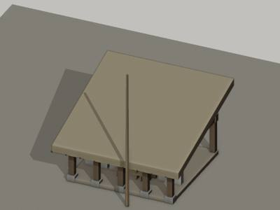
H0001 建筑
shed · 1层 4间 · 屋顶 lean_to/thatch · 墙 open · 门面 colonnade · 雨棚 none · · 3.65×3.0 m, 檐高 1.8 m
Back line is the farmhouse front, hidden. Width to the right ends at x~540 where the thatch strokes stop under the willow fronds.
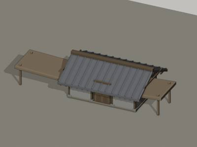
H0002 建筑
house · 1层 3间 · 屋顶 gable/tile · 墙 unknown · 门面 unknown · 雨棚 none · · 5.78×3.0 m, 檐高 1.8 m
Bay count is a guess (front 355 px / 58.8 px per m = 6 m, so 3 bays of 2 m; Phase 2 wrote 4). Wall height below the eave assumed ~65 px as in the Phase-2 footprint. Trunks of tile04 trees (T0032) cross the left end at x<50.
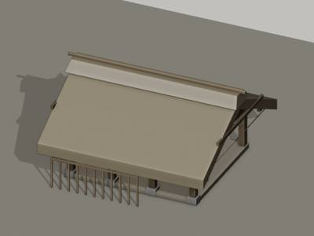
H0003 建筑
thatched_hut · 1层 3间 · 屋顶 gable/thatch · 墙 open · 门面 colonnade · 雨棚 none · · 4.4×3.04 m, 檐高 1.8 m
Left end runs out of the tile toward tile04 (bbox starts at x 15). Depth and back wall hidden under the thatch. The thatch gable at x 105-175 may belong to H0004 (own=false, tile04), in which case this roof is a plain single-ridge thatch gable.
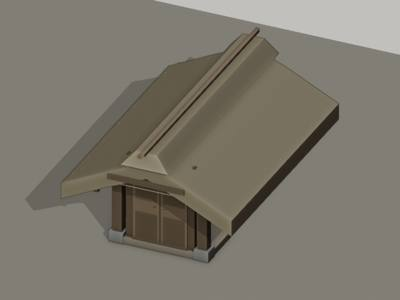
H0004 建筑
thatched_hut · 1层 1间 · 屋顶 gable/thatch · 墙 open · 门面 unknown · 雨棚 none · · 1.69×3.0 m, 檐高 1.8 m
Doubtful as a separate building: the gable sits exactly on the ridge line of H0003 (y about 720) and may be a ridge vent (气窗) of H0003 instead. If built, it is a small thatched gable-roofed hut behind H0003 whose ridge runs away from the viewer; walls and foot
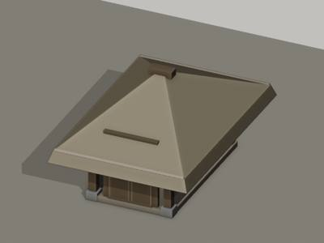
H0005 建筑
thatched_hut · 1层 1间 · 屋顶 hip/thatch · 墙 unknown · 门面 unknown · 雨棚 none · · 2.29×3.0 m, 檐高 1.8 m
Right edge hidden behind the T0032 trunk (x 885-915) and crossed by the slender T0033 trunks at x 808, 836, 855; shrubs T0035 at its foot. Could be a very large grain or straw stack rather than a hut; the generator should build it as a round thatched dome abou
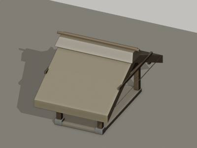
H0006 建筑
thatched_hut · 1层 1间 · 屋顶 gable/thatch · 墙 open · 门面 open_sides · 雨棚 none · · 0.65×3.0 m, 檐高 1.8 m
Shrine-sized shelter (about 0.65 m wide, 0.8 m tall at 64 px/m): a well-head roof, pig-pen roof or small 土地 shrine. A horizontal rail at y 810-815 from x 370 to 455 runs to its right (not a separate asset). The small pale animal A0006 lies in front at (380-405
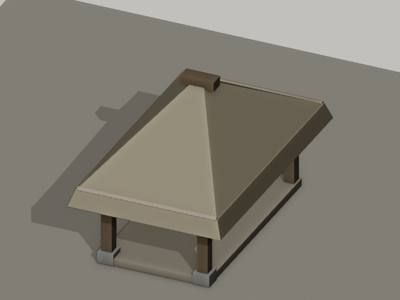
H0007 建筑
shed · 1层 1间 · 屋顶 hip/thatch · 墙 unknown · 门面 unknown · 雨棚 none · · 1.11×3.0 m, 檐高 1.8 m
Beehive-shaped thatched grain bin or well shelter between the trunks; its right edge is hidden by the T0039 trunk at x 302-320. Build as a round thatched dome about 68 px wide and 60 px tall, the lower 12 px as wall.
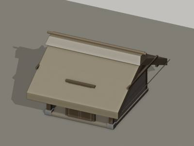
H0008 建筑
thatched_hut · 1层 1间 · 屋顶 gable/thatch · 墙 unknown · 门面 unknown · 雨棚 none · · 3.4×3.0 m, 檐高 1.8 m
Only the roof is visible. Ground line y 800 taken from Phase 2. Cut by the right tile edge; continues in tile04. Bays guessed as 1 from the 218 px visible width.
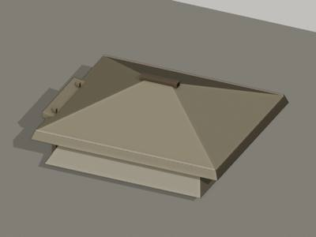
H0009 建筑
thatched_hut · 1层 2间 · 屋顶 hip/thatch · 墙 wattle · 门面 wall_with_door · 雨棚 none · · 5.14×3.78 m, 檐高 1.8 m
Bays = 2 is a guess from the 365 px (5 m) front: only the bay x 650-700 shows posts. Depth not visible; back line extrapolated by Phase 2 at y 765. Trunks of T0049 (x 630-645) and its secondary stems (x 665-680, 702-710) stand in front of the roof. The hatched
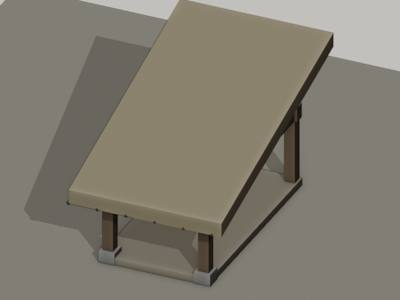
H0010 建筑
shed · 1层 1间 · 屋顶 lean_to/thatch · 墙 unknown · 门面 unknown · 雨棚 none · · 1.17×3.0 m, 檐高 1.8 m
Doubtful object. Most likely the left end of the H0009 thatch skirt seen past the pale trunk of T0051 (x 500-520), or a brushwood fence (籬笆). If built as a separate asset, a thatched lean-to 86 px wide, 120 px tall, roof sloping down to the front, is the safes
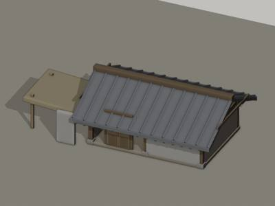
H0011 建筑
house · 1层 2间 · 屋顶 gable/tile · 墙 unknown · 门面 wall_with_door · 雨棚 none · · 4.26×3.0 m, 檐高 1.8 m
Asset spans x 665-1250 (hall x 665-940 inside this tile, annex x 940-1250 continuing into tile07). Bays = 2 for the hall is a guess from its 240 px roof length (about 2.7 m at 88 px/m); posts are not visible. The willow T0078's branches cross the roof at y 960
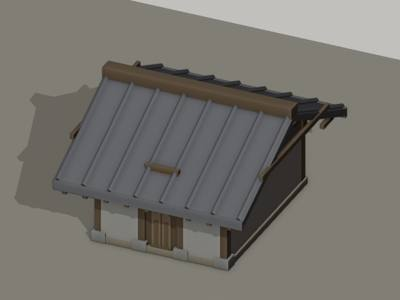
H0012 建筑
house · 1层 3间 · 屋顶 gable/tile · 墙 unknown · 门面 unknown · 雨棚 none · · 2.99×3.0 m, 檐高 1.8 m
Cut by the left tile edge, continues in tile09. Bays = 3 is the Phase-2 estimate from the roof length; nothing of the body is visible. Eave y 1160 taken from the lower edge of the tile grid; ridge y 950 from the thatch line. The house sits behind (above) the r
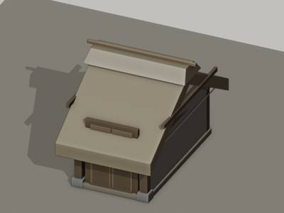
H0013 建筑
thatched_hut · 1层 1间 · 屋顶 gable/thatch · 墙 plaster · 门面 unknown · 雨棚 none · · 1.7×3.0 m, 檐高 1.8 m
Almost washed out; the drawing is faded to a few pale lines. The hut continues to the right in tile08; the gable end seen here is its left end, ground at y 425 taken from Phase 2.
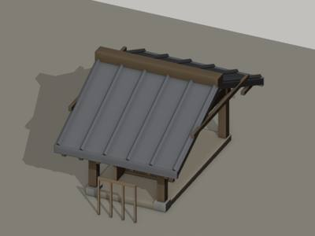
H0015 建筑
pavilion · 1层 1间 · 屋顶 gable/tile · 墙 open · 门面 colonnade · 雨棚 none · · 1.31×3.0 m, 檐高 1.8 m
Attached to the left end of the tiled farmhouse H0012 (owned by tile08): H0012's hip roof has a thatched ridge section at x 940-1010, y 920-950 and a lower tiled porch roof at y 1105-1140 from x 715 to 1100 whose left end meets the pavilion's right post. Depth
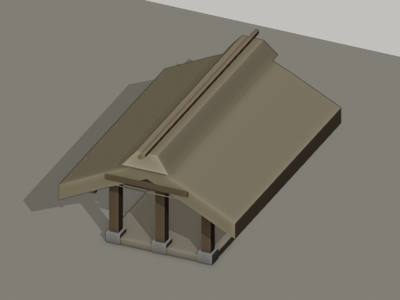
H0016 建筑
shed · 1层 2间 · 屋顶 gable/thatch · 墙 lattice · 门面 open_sides · 雨棚 none · · 1.14×3.0 m, 檐高 1.8 m
Ground line extrapolated at y 600 (Phase 2). Roof type, ridge direction and bay count are guesses from a 125 x 75 px fragment.
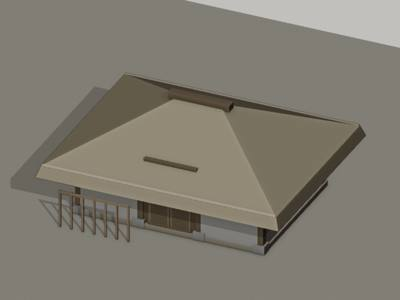
H0017 建筑
thatched_hut · 1层 3间 · 屋顶 hip/thatch · 墙 plaster · 门面 wall_with_door · 雨棚 none · · 5.46×3.0 m, 檐高 1.8 m
Back and ends hidden by the willow crowns of T0095 (left) and T0087 (right); the willow stump of T0087 stands against the right corner at (497,613). H0016 rises behind the right half.
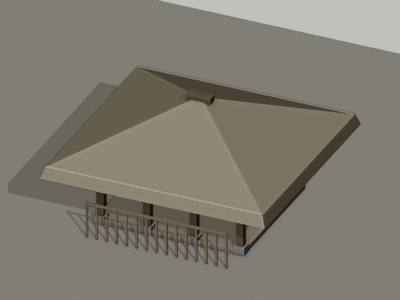
H0018 建筑
shed · 1层 3间 · 屋顶 hip/thatch · 墙 open · 门面 open_sides · 雨棚 none · · 4.38×3.49 m, 檐高 2.23 m
the willow trunk of T0095 (x 950-1010) stands in front of the railing; the shed continues past x 1100 into tile09 where it is attached to the farmhouse H0017
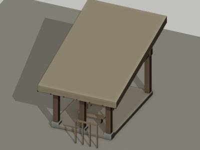
H0019 建筑
shed · 1层 2间 · 屋顶 lean_to/thatch · 墙 open · 门面 open_sides · 雨棚 none · · 2.43×3.0 m, 檐高 2.26 m
structurally the right-hand bay of the tea shed H0025; its eave is level with the shed's eave so the generator can join the two roofs
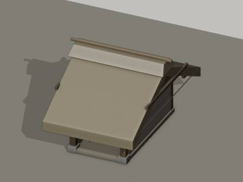
H0020 建筑
house · 1层 1间 · 屋顶 gable/thatch · 墙 plaster · 门面 colonnade · 雨棚 none · · 1.52×3.0 m, 檐高 1.8 m
distant and faint; the small bare tree T0103 stands just right of it and the gate X0036 at its right end
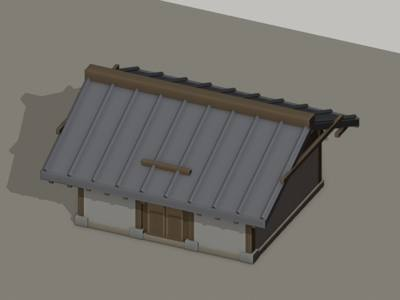
H0021 建筑
house · 1层 3间 · 屋顶 gable/tile · 墙 unknown · 门面 unknown · 雨棚 none · · 4.48×3.0 m, 檐高 1.8 m
only the roof is visible; bays and front are guesses from the roof length (250 px at 55.8 px/m = 4.5 m, so 3 narrow bays or 2 wide ones); generator should give it a plain plastered front
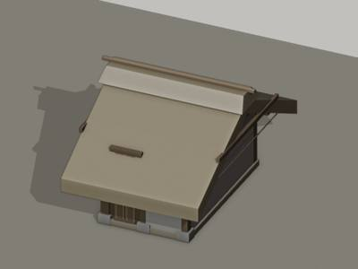
H0022 建筑
house · 1层 2间 · 屋顶 gable/thatch · 墙 plaster · 门面 wall_with_door · 雨棚 none · · 2.15×3.0 m, 檐高 1.8 m
distant and faint; joins H0024 on the left and H0020 on the right under one roof
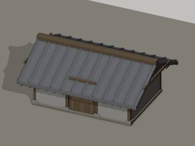
H0023 建筑
house · 1层 3间 · 屋顶 gable/tile · 墙 unknown · 门面 unknown · 雨棚 none · · 5.64×3.0 m, 檐高 1.8 m
roof only; the triangular panel could equally be a thatched dormer on the shed roof itself, so the generator may treat it as a small cross-gable of 115 px width centred at x 288
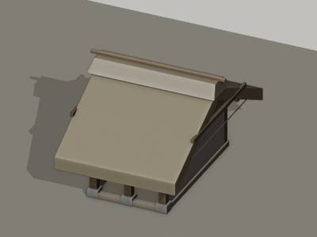
H0024 建筑
house · 1层 2间 · 屋顶 gable/thatch · 墙 plaster · 门面 colonnade · 雨棚 none · · 2.12×3.0 m, 檐高 1.8 m
distant background house about 40 px tall; only the roof hatching and a few post strokes are legible; shape guessed from the continuous row
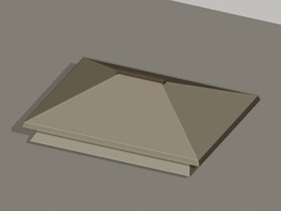
H0025 建筑
tea_house · 1层 5间 · 屋顶 hip/thatch · 墙 open · 门面 open_sides · 雨棚 none · · 5.03×6.88 m, 檐高 1.8 m
own=false (tile12). Catalogue bbox -140..660 includes the wing H0019; this entry's front width covers x -140..520 plus the wing. Back line hidden under the thatch
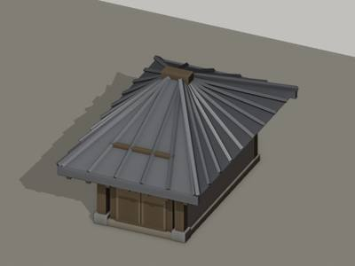
H0026 建筑
unknown · 1层 1间 · 屋顶 hip/tile · 墙 unknown · 门面 unknown · 雨棚 none · · 1.26×3.84 m, 檐高 1.8 m
belongs to a building drawn in tile12; everything but the roof corner is a guess; the dark vertical at x 1013-1050 y 47-110 beside it is the trunk of tree T0108, not a post
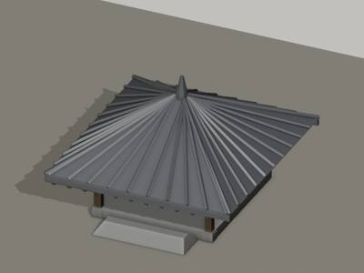
H0027 建筑
pavilion · 1层 1间 · 屋顶 pyramid/tile · 墙 open · 门面 open_sides · 雨棚 none · · 3.22×3.22 m, 檐高 1.8 m
stands on a raised terrace (mound X0039 of Phase 2) whose top is y 237; terrace shows 4-5 horizontal courses between y 217 and 277; bare trees T0114/T0115 rise behind it, T0109 shrub in front right
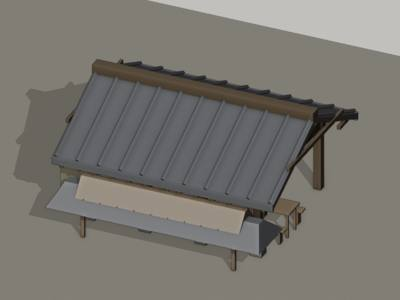
H0028 建筑
restaurant · 1层 3间 · 屋顶 gable/tile · 墙 open · 门面 open_sides · 雨棚 lattice · · 4.96×8.35 m, 檐高 2.2 m
adjoins thatched shop H0025 on the right; two-storey house H0029 rises behind it
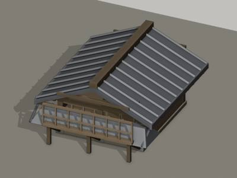
H0029 建筑
house · 2层 2间 · 屋顶 gable/tile · 墙 plank · 门面 unknown · 雨棚 none · · 3.74×4.26 m, 檐高 1.8 m
Phase-2 counted 3 bays; only two main posts are visible in the railing so 2 bays given; the lower storey and the depth of the house are guesses (footprint base y 300)
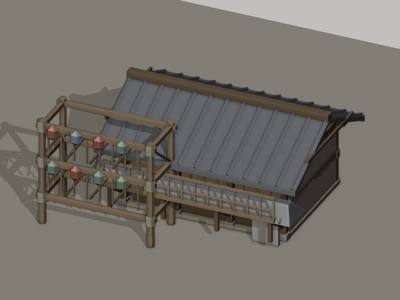
H0030 建筑
shop · 2层 3间 · 屋顶 gable/tile · 墙 mixed · 门面 open_shop · 雨棚 none · 欢门 2层 · 6.25×8.49 m, 檐高 2.64 m
continues into tile10 to the left; the gap between this shop and shed H0028 holds a small table (357-420, 390-437) and the reed blind X0045
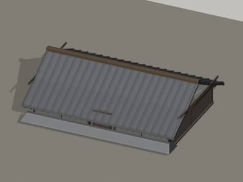
H0031 建筑
house · 1层 5间 · 屋顶 unknown/tile · 墙 unknown · 门面 unknown · 雨棚 none · · 11.8×8.54 m, 檐高 1.8 m
roof-only description for the part east of x 0; tile10 holds the rest
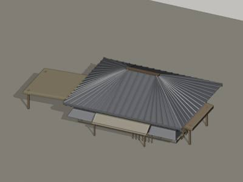
H0032 建筑
restaurant · 1层 6间 · 屋顶 hip/tile · 墙 open · 门面 colonnade · 雨棚 mat · · 6.06×11.5 m, 檐高 2.44 m
Back wall hidden under the roof; the porch H0033 sits on its street side. Front ground line is diagonal (Phase 2 footprint), so eave/awning y values are picture-centre values.
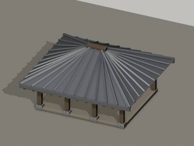
H0033 建筑
shed · 1层 3间 · 屋顶 hip/tile · 墙 open · 门面 open_sides · 雨棚 none · · 4.67×3.14 m, 檐高 1.8 m
Ground line extrapolated (Phase 2 footprint y 400-480); joins the back (street) side of H0032.
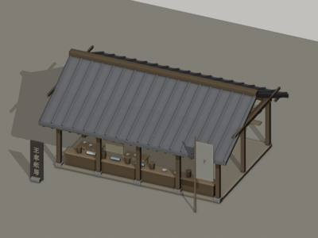
H0034 建筑
shop · 1层 4间 · 屋顶 gable/tile · 墙 open · 门面 open_shop · 雨棚 none · 「王家紙馬」 「?」 · 9.27×4.73 m, 檐高 3.07 m
The standing sign 王家紙馬 at x 265-293, y 43-233 (finial at top, base block at y 217-233) and the cloth banner with lattice top at x 680-737, y 120-240 stand on the street in front. Back wall hidden; depth guessed from Phase 2 footprint.
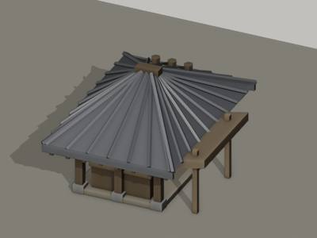
H0035 建筑
shop · 1层 2间 · 屋顶 hip/tile · 墙 open · 门面 open_shop · 雨棚 none · · 2.4×3.71 m, 檐高 1.8 m
Faint small shop at the far right of the street band, mostly hidden by the T0124 crown and cut by the tile edge; bay count 2 taken from Phase 2. The street-level ground line is y 135.
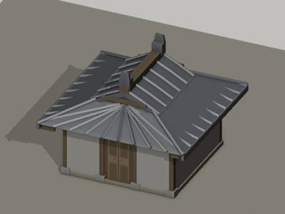
H0036 建筑
unknown · 1层 3间 · 屋顶 xieshan/tile · 墙 unknown · 门面 unknown · 雨棚 none · · 4.09×3.21 m, 檐高 2.31 m
Roof only. Everything below the eave (y 430) is a guess: Phase 2 extrapolated the front base at y 560 just behind the wall. The hall is probably the rear hall of the riverside restaurant compound. Roof confidence medium, body low.
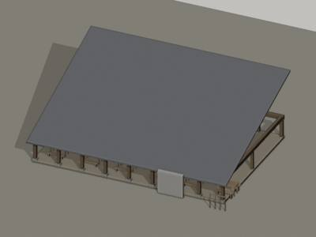
H0037 建筑
shed · 1层 8间 · 屋顶 lean_to/tile · 墙 open · 门面 open_sides · 雨棚 none · · 14.26×3.38 m, 檐高 1.8 m
own=false (owner tile14) but 745 of its 817 px lie in this tile, so it is described here. Street ground line y 135; the street itself y 128-168. Continues 72 px into tile14.
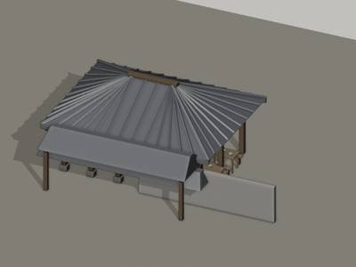
H0038 建筑
restaurant · 1层 5间 · 屋顶 hip/tile · 墙 open · 门面 open_sides · 雨棚 none · · 6.57×5.98 m, 檐高 2.63 m
Reads as one storey on a raised stilt platform (干栏) rather than two storeys; Phase 2 footprint y 380-565. Back and right end hidden. The mat-walled annex X0064 (tile13) continues to the right.
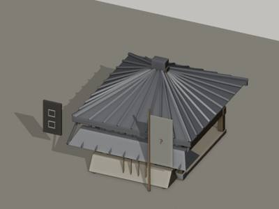
H0039 建筑
wine_house · 2层 3间 · 屋顶 hip/tile · 墙 open · 门面 open_shop · 雨棚 mat · 「??」 「?」 · 3.64×5.61 m, 檐高 2.33 m
The vertical board sign at x 380-400 y 290-345 hangs from a bracket on the post at x 403 at the junction with the gable wing of H0040 to the left; characters unreadable. The huanmen scaffold X0073 rises just left of this roof (x 70-423) and may belong to this
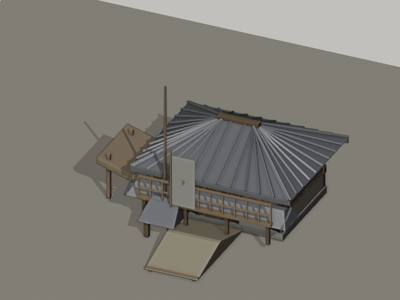
H0040 建筑
wine_house · 2层 3间 · 屋顶 hip/tile · 墙 plaster · 门面 wall_with_door · 雨棚 mat · 「None」 · 3.68×4.78 m, 檐高 2.39 m
Cut by the right edge; back line hidden. The sign is three plain cloth strips (no characters) x 837-903 y 183-267 hanging from the crossbar of pole X0076; the 彩楼欢门 X0073 at the top-right belongs to the next wine house in tile14, not to this one. The two men at
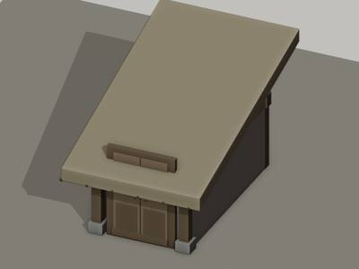
H0041 建筑
thatched_hut · 1层 1间 · 屋顶 lean_to/thatch · 墙 unknown · 门面 unknown · 雨棚 none · · 2.36×4.91 m, 檐高 1.8 m
Most likely NOT a hut but a straw/reed stack (草垛) or a heap of thatch bundles leaning against the dark tiled roof of the house to its left (x 690-720); build it as a rounded straw mound about 115 px wide and 110 px tall with the straw hanging down to the right
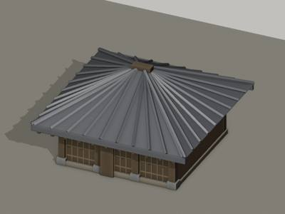
H0042 建筑
shop · 1层 3间 · 屋顶 hip/tile · 墙 lattice · 门面 lattice_doors · 雨棚 none · · 4.1×4.3 m, 檐高 1.8 m
Cut by the right tile edge; Phase 2 gives the front x 900-1140 and 3 bays, so the visible part is 2-3 bays. Depth unknown (roof runs into the roofs behind). Posts are thin; the door-panel intervals (~35-70 px) are narrower than the bays.
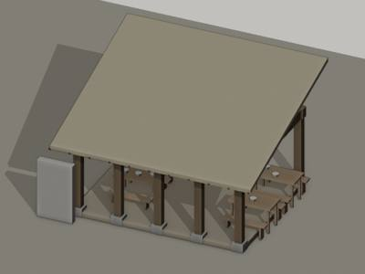
H0043 建筑
shed · 1层 4间 · 屋顶 lean_to/mat · 墙 open · 门面 open_sides · 雨棚 none · · 4.86×4.65 m, 檐高 2.43 m
Rear posts and the back edge are hidden under the roof; the back line y 262 is where the mat meets the tiled roof behind. Ground is the restaurant terrace, flat, tables reach y 405.
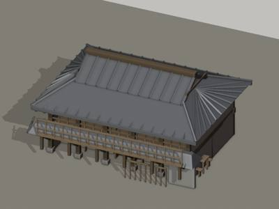
H0044 建筑
wine_house · 2层 5间 · 屋顶 xieshan/tile · 墙 mixed · 门面 colonnade · 雨棚 none · · 8.16×5.07 m, 檐高 3.14 m
own=false (tile17) but 520 of 630 px are in this tile. Stands on piles over the water (quay X0084): pile feet at y ~505. Continues left into tile17 with the stair. Back line hidden; depth ~150 px per Phase 2.
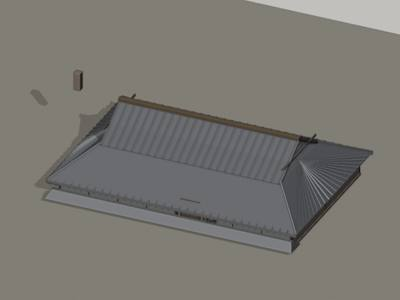
H0045 建筑
wine_house · 1层 8间 · 屋顶 xieshan/tile · 墙 unknown · 门面 unknown · 雨棚 none · 「??」 · 11.02×9.11 m, 檐高 1.8 m
bays 8 taken from Phase 2 (the hall continues right into tile16, bbox x 480-1520); nothing below the eave is visible here. eave_y 232 is the tile-end line on the front slope; ridge_y 80 is the line where the front slope meets the higher roof plane behind it.
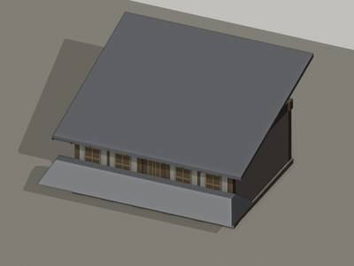
H0046 建筑
shed · 1层 5间 · 屋顶 lean_to/tile · 墙 plaster · 门面 wall_with_door · 雨棚 none · · 4.83×3.0 m, 檐高 2.17 m
Only the two corner posts (x~533 and x~793) are visible, so bays 5 follows Phase 2 and the 7 lattice panels. Right corner abuts the closed slatted end panel of the wing H0044 (x 793-830, y 300-430).
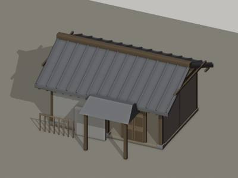
H0047 建筑
gatehouse · 1层 2间 · 屋顶 gable/tile · 墙 plaster · 门面 wall_with_door · 雨棚 none · · 3.51×5.14 m, 檐高 3.01 m
bays 2 is a Phase-2 guess; the front of the house itself is hidden behind the courtyard wall. Front base y 300 at x 322 falling to 313 at the gate.
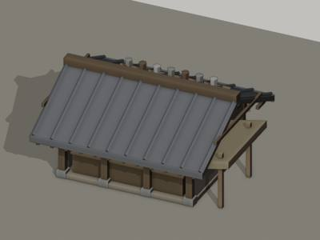
H0048 建筑
shop · 1层 3间 · 屋顶 gable/tile · 墙 mixed · 门面 open_shop · 雨棚 none · · 4.59×3.07 m, 檐高 1.8 m
Only the front elevation is drawn; depth of the footprint (y 60-125) taken from Phase 2. Bay count is 3 by the posts (Phase 2 said 2); the figure P0151 (70 px tall) stands in front of bay 1 and gives the scale.
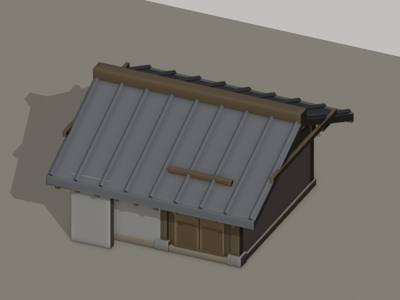
H0049 建筑
house · 1层 2间 · 屋顶 gable/tile · 墙 unknown · 门面 unknown · 雨棚 none · · 3.49×3.0 m, 檐高 1.8 m
Only the roof is in the tile, cut by the bottom edge; the building is turned about 20 degrees so the ridge runs down-right. Ground line extrapolated by Phase 2.
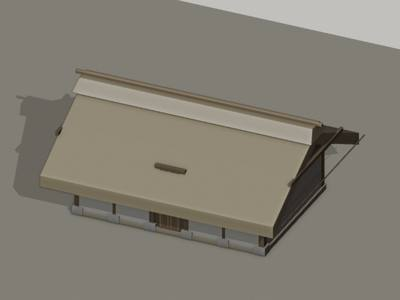
H0050 建筑
house · 1层 5间 · 屋顶 gable/thatch · 墙 plaster · 门面 unknown · 雨棚 none · · 5.38×3.44 m, 檐高 1.8 m
Back eave stands at the mound foot (y 1430 at x 165 to y 1640 at x 680). Ground line hidden behind H0049/H0051; bays = 5 is a guess from the 545 px ridge (about 5.7 m at 94.5 px/m). The roof's left gable end is visible at (80-165,1437-1525).
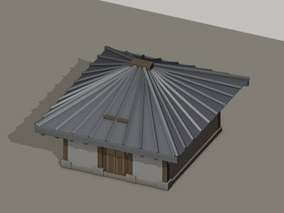
H0051 建筑
house · 1层 3间 · 屋顶 hip/tile · 墙 unknown · 门面 unknown · 雨棚 none · · 3.45×6.03 m, 檐高 1.8 m
Only the roof is in the tile, cut by the left and bottom edges; hip vs gable is a guess from the sloping right edge. It stands in front of the thatch house H0050.
H0052 建筑
shop · 1层 4间 · 屋顶 gable/tile · 墙 mixed · 门面 open_shop · 雨棚 none · · 9.78×6.09 m, 檐高 1.8 m
Frontage strip (y 148-160) hidden by the moored boats B0023/B0027/B0028. Left end at x 640 abuts the reed-mat shed X0098; right end continues into tile 18.
H0054 建筑
shed · 1层 2间 · 屋顶 lean_to/thatch · 墙 unknown · 门面 unknown · 雨棚 none · · 2.47×3.0 m, 檐高 1.8 m
Only the roof is visible; guessed as a lean-to leaning against the big tiled roof (H0053/H0051). Figure P0169 stands at its west end.
H0055 建筑
shed · 1层 3间 · 屋顶 unknown/unknown · 墙 open · 门面 open_sides · 雨棚 none · · 4.1×6.49 m, 檐高 2.95 m
Open table shed annexed to the tea house; continues into tile19.
H0056 建筑
shop · 1层 1间 · 屋顶 unknown/tile · 墙 lattice · 门面 colonnade · 雨棚 none · · 1.18×3.0 m, 檐高 1.8 m
Eastern bay of the restaurant front; build as a slat-railed bay, not a separate house.
H0057 建筑
tea_house · 2层 4间 · 屋顶 gable/tile · 墙 open · 门面 open_shop · 雨棚 mat · · 10.27×11.94 m, 檐高 3.46 m
Right part of the building (x 1000-1100) hidden by the willow T0138 crown; continues into tile19. The big boat's lowered mast and rigging cross in front of the terrace at x 700-900.
H0058 建筑
house · 1层 3间 · 屋顶 hip/tile · 墙 unknown · 门面 unknown · 雨棚 none · · 1.72×4.0 m, 檐高 1.8 m
Roof-only; the body is beyond the tile bottom.
H0059 建筑
restaurant · 1层 5间 · 屋顶 hip/tile · 墙 open · 门面 open_shop · 雨棚 none · 「?」 · 10.97×12.08 m, 檐高 2.38 m
Left wall hidden under the H0062 roof; the slat-railed bay H0056 at the right end is probably part of this front. Umbrella stall K0003 stands in front of the right bays.
H0060 建筑
unknown · 1层 1间 · 屋顶 unknown/unknown · 墙 open · 门面 colonnade · 雨棚 none · · 1.27×3.0 m, 檐高 1.8 m
Only post bottoms at the top edge; probably a shed or pavilion behind the far-bank street. Build as a small open post shed.
H0061 建筑
house · 1层 3间 · 屋顶 gable/tile · 墙 unknown · 门面 unknown · 雨棚 none · · 5.51×4.0 m, 檐高 1.8 m
Roof-only house south of the street; a short vertical gable edge at x ~560-600 separates it from H0058.
H0062 建筑
house · 1层 2间 · 屋顶 gable/tile · 墙 unknown · 门面 unknown · 雨棚 none · · 4.64×3.54 m, 檐高 1.8 m
Probably the roof of the restaurant's left side room; model as a plain tiled gable roof.
H0063 建筑
shop · 1层 3间 · 屋顶 flat/mat · 墙 plank · 门面 doors_closed · 雨棚 lattice · · 3.2×3.13 m, 檐高 1.8 m
Lower part hidden by the H0062/H0065 roofs; continues into tile21.
H0064 建筑
shed · 1层 3间 · 屋顶 gable/mat · 墙 open · 门面 open_sides · 雨棚 none · · 5.32×3.01 m, 檐高 1.8 m
Food/drink stall shed at the near bank west of the bridge, vane pole X0112 standing just left of its left post. The boat end B0036 shows above its roof at x545-745. Back line hidden; depth unknown (Phase 2 extrapolated 95 px).
H0065 建筑
shop · 1层 4间 · 屋顶 gable/tile · 墙 open · 门面 colonnade · 雨棚 none · · 10.82×14.24 m, 檐高 1.8 m
Only the roof and the open gable-end frame are in the tile; the ground line is below y1800, so eave_y/ridge_y against base_y 1800 understate the building height. Eave corners of the front gable at about y1705 (left) and y1770 (right); eave_y 1700 is the tie-be
H0066 建筑
unknown · 1层 2间 · 屋顶 hip/tile · 墙 unknown · 门面 unknown · 雨棚 none · · 3.17×3.0 m, 檐高 1.8 m
roof fragment behind H0067; everything else is a guess; continues into tile21
H0067 建筑
restaurant · 1层 4间 · 屋顶 hip/tile · 墙 lattice · 门面 lattice_doors · 雨棚 none · · 2.79×8.84 m, 檐高 2.35 m
the hall proper continues into tile21 (right); umbrellas K0015 and K0016 and the roof H0066 are behind it; the terrace stands over the water on a forest of piles
H0068 建筑
shop · 1层 3间 · 屋顶 xieshan/tile · 墙 unknown · 门面 unknown · 雨棚 none · · 4.79×7.75 m, 檐高 1.8 m
roof only; eave_y 1790 is EXTRAPOLATED (eave below the tile edge); the umbrella stalls K0011/K0012 of tile21 stand behind the ridge; continues into tile21 (t21-115) where the rest of the building should be modelled
H0069 建筑
pavilion · 1层 2间 · 屋顶 gable/tile · 墙 open · 门面 open_sides · 雨棚 none · · 3.11×4.29 m, 檐高 2.15 m
stands between the hall H0070 and the big restaurant H0067; umbrella K0016 rises behind it; the open timber frame above the roof may belong to a structure further back
H0070 建筑
tea_house · 1层 5间 · 屋顶 gable/tile · 墙 lattice · 门面 open_shop · 雨棚 none · · 8.04×6.48 m, 檐高 2.79 m
pile-built waterfront hall: floor beam at y ~185, piles to y ~215; counter suggests a tea or wine shop; right end wall/post structure at x 582-608
H0071 建筑
shed · 1层 2间 · 屋顶 hip/mat · 墙 open · 门面 open_sides · 雨棚 none · · 4.09×9.5 m, 檐高 2.25 m
Same structure as stall K0021 catalogued in tile22; the shed continues to the right beyond x 1100 (Phase 2 footprint to x 1200). Its back stands at the quay edge X0120.
H0072 建筑
tea_house · 1层 7间 · 屋顶 gable/tile · 墙 mixed · 门面 open_shop · 雨棚 mat · · 14.2×9.57 m, 檐高 2.37 m
Row continues into tile22 to the right (x > 1100). Floor line y 180 where the bank wash begins. Phase 2 counted 6 bays; the posts visible under the eave give 7 bays of about 85 px. Roof depth unknown (clipped at y 0).
H0073 建筑
unknown · 1层 3间 · 屋顶 hip/tile · 墙 unknown · 门面 unknown · 雨棚 none · · 2.73×13.32 m, 檐高 1.8 m
Roof only; walls and front lie below the tile edge and in tile 23. Use Phase 2's rhombus footprint (front facing lower right). The 十千脚店 huanmen X0123 (tile 23) rises just right of this roof, so this is probably that wine house's main hall. ridge_y is the horiz
H0074 建筑
house · 1层 5间 · 屋顶 hip/tile · 墙 unknown · 门面 colonnade · 雨棚 none · · 8.48×4.64 m, 檐高 2.07 m
Far-bank house, continues into tile 23 to the right. Ground line taken at the verandah floor edge y 200. Walls behind the verandah are hidden; a 5-bay front is Phase 2's count from the roof length (360 px = 8.5 m).
H0075 建筑
shed · 1层 1间 · 屋顶 gable/tile · 墙 unknown · 门面 unknown · 雨棚 none · · 1.84×3.0 m, 檐高 1.8 m
May in fact be the left continuation of H0074's lower front roof (a similar roof piece shows at x 757-810, y 127-147 at the same height). Modelled as a one-bay gable shed, ground line extrapolated to y 170.
H0076 建筑
wine_house · 2层 8间 · 屋顶 xieshan/tile · 墙 lattice · 门面 unknown · 雨棚 none · · 6.6×6.15 m, 檐高 5.67 m
Owned by tile 25 (x -310..700); this tile holds the right 700 px including the whole visible upper floor, the right gable, the projecting room and the porch roof, so it is described here. Ground floor and plinth hidden; front base extrapolated by Phase 2 at y
H0077 建筑
house · 1层 1间 · 屋顶 gable/tile · 墙 unknown · 门面 unknown · 雨棚 none · · 2.01×3.29 m, 檐高 1.8 m
Roof only, squeezed between the willow trunk (x 480-600) on the right, H0084's roof on the left and H0078's roof below. Reading of the ridge direction is from the central vertical line and the horizontal tile courses either side; could instead be a small hip r
H0078 建筑
house · 1层 5间 · 屋顶 hip/tile · 墙 unknown · 门面 unknown · 雨棚 none · · 8.39×10.36 m, 檐高 1.8 m
roof only; bays guessed from the roof length; the left hip end is narrow (x 548-700), so the roof is seen almost frontally
H0079 建筑
house · 1层 3间 · 屋顶 gable/tile · 墙 plaster · 门面 unknown · 雨棚 none · · 2.96×6.5 m, 檐高 1.8 m
cut by the top and right edges; bays not countable (blank wall), 3 taken from Phase 2
H0080 建筑
shed · 1层 3间 · 屋顶 lean_to/mat · 墙 open · 门面 open_sides · 雨棚 none · · 3.87×6.29 m, 檐高 3.02 m
stands on the right end of the tea-house terrace; the bare tree T0168 grows in front of it; branches of T0166 (tile27) spread over its roof
H0081 建筑
shed · 1层 2间 · 屋顶 flat/unknown · 墙 open · 门面 open_sides · 雨棚 none · · 2.57×3.94 m, 檐高 1.82 m
open tea-stall shed beside H0082; the roof may be a mat laid on the beams; treated as a flat roof 10 px thick
H0082 建筑
house · 1层 2间 · 屋顶 gable/tile · 墙 plaster · 门面 colonnade · 雨棚 none · · 3.9×5.36 m, 檐高 1.8 m
right part of the wall hidden by the shed H0081; back extrapolated
H0083 建筑
house · 1层 2间 · 屋顶 lean_to/tile · 墙 plaster · 门面 unknown · 雨棚 none · · 3.33×3.34 m, 檐高 1.8 m
probably a tile-capped courtyard wall rather than a house; eave_y/ridge_y are mid-values of lines that slope with the road
H0084 建筑
house · 1层 9间 · 屋顶 xieshan/tile · 墙 unknown · 门面 unknown · 雨棚 none · · 11.82×8.33 m, 檐高 1.8 m
roof only; storeys and bays are guesses (Phase 2: 9 bays); the ridge ornament at x 370 may mark a junction of two roofs; the ridge is lower-left than the right end but drawn as one straight band
H0085 建筑
house · 1层 3间 · 屋顶 gable/tile · 墙 unknown · 门面 unknown · 雨棚 none · · 5.78×4.17 m, 檐高 1.8 m
far house of the row, roof only; a short white side-wall fragment at x 700-730 y 95-128 at its right end
H0086 建筑
house · 1层 3间 · 屋顶 gable/tile · 墙 plaster · 门面 unknown · 雨棚 none · · 5.67×3.98 m, 檐高 1.8 m
second house of the row; bays guessed from the roof length
H0087 建筑
tea_house · 1层 6间 · 屋顶 xieshan/tile · 墙 mixed · 门面 colonnade · 雨棚 mat · · 8.39×9.17 m, 檐高 4.27 m
own=false (gid assigned to tile25) but the whole hall x 100-1000 lies inside tile26, so described here; the roof reading (xieshan with a lower right wing) is uncertain: the white triangle sits low, so the right wing may be a separate lower roof
H0088 建筑
house · 1层 2间 · 屋顶 gable/tile · 墙 mixed · 门面 lattice_doors · 雨棚 none · · 2.32×4.22 m, 檐高 1.8 m
nearest house of the row; the lattice side faces the road, which runs down-right from here
H0089 建筑
shed · 1层 1间 · 屋顶 lean_to/mat · 墙 open · 门面 open_sides · 雨棚 none · · 1.14×3.0 m, 檐高 1.8 m
lean-to at the foot of the giant tree between the far-bank road and the tea house roof; back posts hidden
H0090 建筑
house · 2层 5间 · 屋顶 hip/tile · 墙 unknown · 门面 unknown · 雨棚 none · · 6.86×6.19 m, 檐高 2.82 m
roof only, stands in front of H0084 and behind H0078; eave_y is the upper-eave corner height at the left (150,1545); bays guessed
H0091 建筑
house · 1层 3间 · 屋顶 gable/tile · 墙 plaster · 门面 unknown · 雨棚 none · · 7.8×3.29 m, 檐高 1.8 m
far-bank building cut by the top edge; body and ground extrapolated; the tea-house H0099 courtyard (tile25) lies in front of its left part
H0092 建筑
house · 1层 1间 · 屋顶 gable/tile · 墙 plaster · 门面 wall_with_door · 雨棚 none · · 2.42×5.54 m, 檐高 1.8 m
lower front range of the H0096 complex (tile25); its ridge runs in depth under the hip corner of H0090; cut by the left and bottom edges
H0093 建筑
thatched_hut · 1层 2间 · 屋顶 hip/thatch · 墙 unknown · 门面 unknown · 雨棚 none · · 1.64×3.72 m, 檐高 1.81 m
Roof only; the ground line (y 760 in Phase 2) is extrapolated. The upper radiating roof may belong to a separate building further north; only one gid exists, so it is given here as a second roof layer.
H0094 建筑
thatched_hut · 1层 3间 · 屋顶 hip/thatch · 墙 unknown · 门面 open_shop · 雨棚 none · · 3.31×4.8 m, 檐高 2.44 m
Almost certainly the roof of the workshop H0095 (catalogued separately): build H0094 as the roof and H0095 as the open post-and-counter structure under it, with the roof eave at y 715 and the counter at y 870 (155 px = 2.4 m at 63.5 px/m).
H0095 建筑
shop · 1层 2间 · 屋顶 hip/thatch · 墙 open · 门面 open_shop · 雨棚 none · · 2.89×4.03 m, 檐高 3.65 m
East side is the giant tree trunk T0171 (870-1010). Depth unknown; the floor is about 130 px (1.8 m) deep from counter y 870 to the back figures. Build as an open post-and-counter shed; the roof is H0094.
H0096 建筑
shop · 2层 5间 · 屋顶 hip/tile · 墙 plaster · 门面 unknown · 雨棚 none · · 5.36×13.46 m, 檐高 2.86 m
No ground is painted; the base line y 1700 is extrapolated. Bay count 5 from the 525 px width (5.4 m at 97.9 px/m... the roof is foreshortened so the true width is larger). The decorated gable with bracket set at (1000-1100, 1600-1720) at the right is H0092 (t
H0097 建筑
thatched_hut · 1层 1间 · 屋顶 gable/thatch · 墙 wattle · 门面 unknown · 雨棚 none · · 2.07×3.0 m, 檐高 1.8 m
Ground line y 190-195. The door is probably on the hidden west or south face. Stands in front of the south-west corner of the courtyard.
H0098 建筑
thatched_hut · 1层 1间 · 屋顶 gable/thatch · 墙 wattle · 门面 wall_with_door · 雨棚 none · · 1.39×3.0 m, 檐高 1.8 m
West side hidden by the last donkey (660-700, 370-440); back extrapolated to y 420. Stands in front of the big roof H0094 and right behind the trunk base of T0172.
H0099 建筑
restaurant · 1层 5间 · 屋顶 hip/tile · 墙 unknown · 门面 unknown · 雨棚 none · · 6.62×3.5 m, 檐高 1.8 m
Only the roof and the courtyard exist in the painting; 5 bays and the single storey are Phase-2 guesses from the roof width (about 6.6 m at 46.8 px/m). The courtyard with tables suggests the hall is a restaurant whose outdoor seating continues in the gallery H
H0100 建筑
shed · 1层 6间 · 屋顶 lean_to/mat · 墙 open · 门面 open_sides · 雨棚 none · · 2.75×6.82 m, 檐高 1.8 m
Probably the outdoor seating of the restaurant H0099 behind. Bay count 6 follows Phase 2; only the 3 posts of the railed part are clear. The back line is under the roof and extrapolated. Length of the front about 6 m at 53.5 px/m.
H0101 建筑
shop · 2层 3间 · 屋顶 hip/tile · 墙 plaster · 门面 unknown · 雨棚 none · 「?」 · 3.58×4.33 m, 檐高 1.99 m
Adjoins H0096 on the west; its upper roof and H0096's are one continuous eave, so it may be the west wing of the same complex. Base clipped at y 1800 (ground below the painting).
H0102 建筑
shed · 1层 2间 · 屋顶 lean_to/mat · 墙 open · 门面 open_shop · 雨棚 none · · 2.61×4.35 m, 檐高 1.8 m
back line hidden by the roof and T0174. Behind its right end a railing/balcony of a two-storey structure shows at x 1063-1100, y 220-357 (belongs to the building beyond the right edge, tile27). Side wall at the right is just a post; left side open.
H0103 建筑
unknown · 1层 0间 · 屋顶 unknown/mat · 墙 unknown · 门面 unknown · 雨棚 none · · 7.42×9.3 m, 檐高 1.8 m
roof only; may be the rear roof of the next building north (tile27 side). Footprint from Phase 2 is extrapolated (base y 390, back y 160, x 600-1000).
H0104 建筑
restaurant · 1层 7间 · 屋顶 hip/thatch · 墙 open · 门面 open_shop · 雨棚 cloth · 「???」 · 10.09×10.67 m, 檐高 3.91 m
continues past the right edge (bbox to x 1180). Back line y 690 extrapolated. Middle of the floor edge hidden by cart V0006 (y 958-1202).
H0105 建筑
shop · 1层 5间 · 屋顶 gable/tile · 墙 open · 门面 open_shop · 雨棚 plank · · 5.04×14.86 m, 檐高 2.5 m
own=false, described because tile29 cannot see x>200 of this wing. The lower-left corner of the front is hidden by the bare tree T0180; the ground line at the front is only visible between x 300 and 800 (y 1760 down-left to about 1480 up-right).
H0106 建筑
thatched_hut · 1层 2间 · 屋顶 hip/mat · 墙 open · 门面 open_shop · 雨棚 none · 「看命」 「神課」 · 4.53×5.04 m, 檐高 2.74 m
same structure as K0028 in tile29; the booth is about 350 px wide in total (Phase 2 base x -118..200), only the right 233 px are in this tile. The third sign 決疑 and the single front-left post are beyond the left edge. Signs are rectangular paper/cloth tags eac
H0107 建筑
house · 2层 3间 · 屋顶 gable/tile · 墙 open · 门面 colonnade · 雨棚 none · · 2.82×9.28 m, 檐高 2.48 m
Only the roof, the upper balustrade and the lower veranda posts are visible above the gatehouse roof (y 280). Bay count 3 taken from the Phase-2 footprint; on the visible side the posts stand at x 340, 405 and 470 (about 65 px apart). The building is drawn in
H0108 建筑
gatehouse · 1层 1间 · 屋顶 xieshan/tile · 墙 open · 门面 doors_open · 雨棚 none · 「?」 · 4.03×3.0 m, 檐高 2.52 m
Shallow gate porch 37 px deep (Phase-2 footprint x 265-540, y 540-577). The spiked palisade (y 370-420) joins it on both sides; a long dark wooden chest (x 220-300, y 630-670) with seated guards stands in front.
H0109 建筑
shed · 1层 2间 · 屋顶 lean_to/plank · 墙 open · 门面 open_sides · 雨棚 none · · 1.46×3.0 m, 檐高 1.8 m
Stands in the H0110 yard at the bottom right. It is drawn like a railed stand or long table (top 105 px wide, beam 170 px wide, balusters 55 px tall = about 0.5 m at 116.7 px/m), so it may be a large bench/counter rather than a shed; built as a low plank-roofe
H0110 建筑
restaurant · 1层 4间 · 屋顶 xieshan/tile · 墙 open · 门面 open_shop · 雨棚 mat · · 3.69×11.85 m, 檐高 2.23 m
The building continues far to the right (tile29 owns the right part, bbox to x 1460 in this frame); in this tile the roof is seen from above and the front wall line is hidden under the awning, so the front base is taken at y 1625 where the yard tables start. e
H0111 建筑
unknown · 1层 1间 · 屋顶 unknown/tile · 墙 unknown · 门面 unknown · 雨棚 none · · 2.48×3.0 m, 檐高 1.8 m
Fragment of a building of the compound north of the stake palisade; everything except a strip of eave is hidden by T0186's crown or cut by the top edge. Generator: a plain 1-bay tile roof fragment is enough.
H0112 建筑
unknown · 1层 1间 · 屋顶 flat/plank · 墙 plank · 门面 wall_with_door · 雨棚 none · · 0.5×4.0 m, 檐高 1.8 m
Tiny object 57 x 34 px (about 0.5 x 0.3 m at 114.7 px/m); might equally be a table or bench. Build as a small dark plank box with a flat lid.
H0113 建筑
pavilion · 1层 1间 · 屋顶 pyramid/tile · 墙 unknown · 门面 unknown · 雨棚 none · · 1.86×3.0 m, 檐高 1.8 m
Only the roof and finial are certain. Phase 2 extrapolated the ground line at y 1725. Could be a garden pavilion, a well pavilion or a gate roof over a passage between the H0110 and H0116 compounds.
H0114 建筑
unknown · 1层 2间 · 屋顶 gable/tile · 墙 unknown · 门面 unknown · 雨棚 none · · 1.32×3.0 m, 檐高 1.8 m
Roof fragment only, heavily veiled by the willow T0195; it may be an annex of the big hip-roofed house H0116 (tile31). Base extrapolated at y 1800 by Phase 2.
H0115 建筑
shed · 1层 2间 · 屋顶 hip/thatch · 墙 open · 门面 open_sides · 雨棚 none · · 2.29×3.0 m, 檐高 1.83 m
Open booth on posts in front of the shop H0117; the Phase-2 footprint (948-1095, 405-447) is the ground under the posts.
H0116 建筑
house · 1层 5间 · 屋顶 hip/tile · 墙 unknown · 门面 colonnade · 雨棚 none · · 4.09×11.65 m, 檐高 1.82 m
Only the roof and the lower-left veranda are visible; the roof geometry as painted is not a consistent projection (the left end plane is far larger than the front slope). Use the Phase-2 footprint for the plan; continues into tile30 (bbox to x 1430) and off th
H0117 建筑
shop · 1层 4间 · 屋顶 hip/tile · 墙 mixed · 门面 open_shop · 雨棚 none · · 5.89×3.75 m, 檐高 2.01 m
Thatched booth H0115 stands on the street in front of its right bays. Pack donkeys A0061/A0063/A0064 stand in front at y 424-545.
H0118 建筑
gatehouse · 1层 7间 · 屋顶 hip/tile · 墙 lattice · 门面 doors_closed · 雨棚 none · · 8.72×3.0 m, 檐高 1.8 m
Long official-looking gate hall. Roof reads as one long hip roof with the central 3 bays raised; generator may build it as a hip roof of 7 bays with a raised central section. Tree twigs of T0202 overlie the lower part of bays 1-5 (y 150-260). Right end at x 74
H0119 建筑
shed · 1层 1间 · 屋顶 gable/plank · 墙 lattice · 门面 open_sides · 雨棚 none · · 2.0×3.0 m, 檐高 1.8 m
veranda-like gabled porch attached to the front of H0120; continues into tile31 where a railed gallery joins it
H0120 建筑
house · 1层 3间 · 屋顶 hip/tile · 墙 plaster · 门面 wall_with_door · 雨棚 none · · 4.45×3.0 m, 檐高 1.8 m
largest far-bank roof; the gabled veranda H0119 is attached in front of its right half; the ground line y 150 is taken from the wall foot at x 900-1000
H0121 建筑
house · 1层 3间 · 屋顶 hip/tile · 墙 plaster · 门面 unknown · 雨棚 none · · 5.21×3.0 m, 檐高 1.8 m
cut by the top edge and almost entirely behind H0122; bays, eave height and front type are guesses
H0122 建筑
house · 1层 3间 · 屋顶 gable/tile · 墙 mixed · 门面 colonnade · 雨棚 none · · 6.02×3.0 m, 檐高 1.8 m
lower 30 px of the front hidden by the needle sprays of T0211/T0208; H0121 stands directly behind it (its roof shows above the ridge at x 700-880)
H0123 建筑
unknown · 1层 2间 · 屋顶 unknown/unknown · 墙 plaster · 门面 wall_with_door · 雨棚 none · · 3.18×3.0 m, 檐高 1.8 m
almost entirely behind the trunks of T0210; may be a fence or courtyard wall rather than a house; generate as a low plain white single-storey block
H0124 建筑
house · 1层 2间 · 屋顶 gable/tile · 墙 unknown · 门面 unknown · 雨棚 none · · 2.18×3.0 m, 檐高 2.14 m
Small single-storey house whose body is hidden behind the crown of willow T0214 (x 500-870, y 670-1000); only its left eave corner and left corner post show. Bay count 2 and front width 173 px follow the Phase-2 footprint (x 517-690). A row of short dark posts
H0125 建筑
unknown · 1层 1间 · 屋顶 unknown/unknown · 墙 lattice · 门面 lattice_doors · 雨棚 none · · 1.11×3.0 m, 檐高 1.8 m
Most probably a lattice fence or railing panel standing behind the willow T0216 rather than a house: only 57 px (0.7 m) of it is visible through the hollow trunk, bordered by the trunk legs at x 320-345 and x 392-425. Build it as a 1-bay lattice panel 90 px wi
H0126 建筑
gate_tower · 1层 3间 · 屋顶 hip/tile · 墙 lattice · 门面 doors_open · 雨棚 none · · 4.61×5.57 m, 檐高 3.03 m
Front face 705-1220 (515 px, ~7.4 m at 69 px/m) is seen head-on; the right face recedes up-right to a far corner at about (1505,335) with two more lattice windows and a dark door panel (seen in tile34; tile34 x = tile35 x - 900). Phase-2 footprint front_x [900
H0127 建筑
gatehouse · 1层 1间 · 屋顶 gable/tile · 墙 plank · 门面 doors_open · 雨棚 none · · 1.28×3.0 m, 檐高 1.8 m
Left post stands on a plinth block x 400-445, y 1720-1760; right post to y 1720; the base is cut by the bottom edge (y 1800). The lintel and bracket row run on to x 640, i.e. ~90 px beyond the tile roof, so the booth may be 2 bays wide with the right bay under
H0128 建筑
house · 1层 1间 · 屋顶 gable/tile · 墙 unknown · 门面 unknown · 雨棚 none · · 1.68×3.18 m, 檐高 1.8 m
Roof only, heavily overdrawn by tree twigs; everything but the roof outline is a guess.
H0129 建筑
house · 1层 3间 · 屋顶 xieshan/tile · 墙 unknown · 门面 unknown · 雨棚 none · · 4.2×4.72 m, 檐高 1.8 m
Roof only; ground line from Phase 2 (y 590). Crowns of T0239 stand behind its ridge, T0237 in front of its right half.
H0130 建筑
office · 1层 4间 · 屋顶 xieshan/tile · 墙 open · 门面 colonnade · 雨棚 none · · 6.26×6.0 m, 檐高 2.88 m
own=false (owner tile36) but tile36 sees only its last 100 px; described here because 548 of its ~610 px are in this tile. Wall-less colonnade hall; back wall not seen, Phase-2 back line y 700 kept. Ridge and left bays extrapolated.
H0131 建筑
shed · 1层 2间 · 屋顶 gable/tile · 墙 unknown · 门面 unknown · 雨棚 mat · · 3.23×3.0 m, 檐高 2.65 m
Behind/above it the stacked wine jars x 740-880, y 100-255 (about eight big ovoid jars in three rows, pale with ink outlines) and a wattle hedge of vertical reed strokes x 887-1010, y 135-192. Whole footprint extrapolated as in Phase 2.
H0132 建筑
shed · 1层 2间 · 屋顶 lean_to/tile · 墙 plank · 门面 open_shop · 雨棚 none · · 4.18×3.0 m, 檐高 2.98 m
Phase 2 counted 1 bay; the thin middle post at x 583 makes 2. The big willow T0243 stands at the shed's east front corner (trunk x 720-770) and its crown hides the roof east of x 640. The slatted panel at x 780-817 (y 690-815) right of the trunk belongs to the
H0133 建筑
house · 1层 3间 · 屋顶 hip/tile · 墙 plank · 门面 unknown · 雨棚 none · · 5.56×3.51 m, 檐高 1.8 m
bays and ground line extrapolated (Phase 2); the building abuts H0135 at the back; P0640 stands under the small projecting eave at x 907-995, y 1440-1482, which belongs to the end bay of H0135, not to this house
H0135 建筑
house · 1层 6间 · 屋顶 gable/tile · 墙 unknown · 门面 unknown · 雨棚 none · · 9.0×6.3 m, 檐高 1.8 m
Only the ridge and the back slope are visible in this tile (x680-1100); the building continues right into tile36. eave_y 1470 is the hidden street-side eave estimated 25 px below the ridge (Phase 2 front base y1495); the visible near eave is at about y1540. ba

H0136 建筑
house · 1层 1间 · 屋顶 gable/tile · 墙 unknown · 门面 unknown · 雨棚 none · · 0.98×3.72 m, 檐高 1.8 m
Roof fragment at the right edge below the end of H0135; its ground is below/under the bare tree. Treat as a small gabled block whose gable end faces left.
H0137 建筑
wine_house · 2层 5间 · 屋顶 xieshan/tile · 墙 lattice · 门面 open_shop · 雨棚 none · 欢门 3层 「正店」 「孫?」 「香?」 · 9.85×9.52 m, 檐高 9.09 m
Two-storey block proper is x470-1100; x320-470 is a lower front bay under the left end of the gate. Ground line y~985 hidden by the crowd. The building continues to the right into tile36 (H0134). The draw-script huanmen box is placed by its own eave rule and w
H0138 建筑
house · 1层 1间 · 屋顶 gable/tile · 墙 unknown · 门面 unknown · 雨棚 none · · 1.4×4.0 m, 檐高 1.8 m
Roof only; ground hidden by the trees.
H0139 建筑
house · 1层 2间 · 屋顶 gable/tile · 墙 unknown · 门面 unknown · 雨棚 none · · 3.56×4.0 m, 檐高 1.8 m
Roofs only; the tree hides x330-600 almost entirely. Phase 2 eave lines y1530 (upper) and y1690 (lower); the lower one is used as eave_y. bays=2 is a guess. The strip x0-200 y1400-1770 to its left (ridge with tile rows at y1405, lattice room) belongs to H0142
H0140 建筑
house · 1层 3间 · 屋顶 hip/tile · 墙 unknown · 门面 unknown · 雨棚 none · · 9.1×7.89 m, 檐高 1.8 m
Roof only, cut by the top edge. bays=3 and storeys=1 are guesses. eave_y 200 is the nominal base where the roof disappears behind H0141. Generator should build a plain hip-roofed block whose ridge runs north-south (into depth).
H0141 建筑
wine_house · 1层 2间 · 屋顶 hip/tile · 墙 unknown · 门面 unknown · 雨棚 none · 「孫羊店」 · 2.55×13.31 m, 檐高 2.07 m
Wing of the 孫羊店 corner building H0143 (tile39). The vertical banner 孫羊店 is a white cloth strip x15-60 y585-700 hanging from the diagonal beam. Posts at about x20 and x95 reach down behind the umbrella. bays=2 from Phase 2.
H0142 建筑
inn · 2层 5间 · 屋顶 xieshan/tile · 墙 lattice · 门面 unknown · 雨棚 mat · · 5.29×9.63 m, 檐高 2.02 m
Probably the 王員外家 inn advertised by the standing sign 久住王員外家 at x 35-70 y 1300-1500. The lower gable roof H0145 stands in front of its upper floor at x 470-780. Bay count from the posts of the upper room. Cut by the bottom and right edges.
H0143 建筑
wine_house · 2层 4间 · 屋顶 xieshan/tile · 墙 mixed · 门面 open_shop · 雨棚 none · 「???」 · 5.15×13.04 m, 檐高 2.02 m
The ground line is hidden by the crowd (set at y 775). The right part east of x 900 (wing with the vertical sign 孫羊店 x 905-960 y 580-720 and the long diagonal eave beam) is H0141, owned by tile39; the 彩樓歡門 is beyond the right edge. The main block's walls are n
H0144 建筑
shop · 1层 3间 · 屋顶 unknown/tile · 墙 mixed · 门面 open_shop · 雨棚 none · 「楊家應症」 「?」 · 4.25×6.76 m, 檐高 2.51 m
The vertical board 楊家應症 (x 888-918, y 5-115, its top character cut) hangs at the right end of the eave; the big red standing signboard (x 690-745, y 130-330, characters not legible, drawn as red wash with dark edge) stands on the street in front of the shop, p
H0145 建筑
unknown · 1层 2间 · 屋顶 gable/tile · 墙 unknown · 门面 unknown · 雨棚 none · · 2.57×3.0 m, 檐高 1.8 m
Eave line clipped at the tile bottom (eave_y 1800 is the clip, not the real eave). Stands in front of the upper floor of H0142; its own ground is unseen.
H0146 建筑
shop · 1层 5间 · 屋顶 flat/mat · 墙 open · 门面 open_shop · 雨棚 none · 「?」 「?」 「?」 「?」 「?」 「?」 「?錦疋帛鋪」 · 6.51×6.94 m, 檐高 1.8 m
The six plaque characters are too small to read at 3x; they may repeat the standing sign's characters. The standing sign ?錦疋帛鋪 (x 215-250, y 0-140, top character cut) stands on the street just left of the front. The roof's back edge is beyond the top edge.
H0147 建筑
inn · 1层 4间 · 屋顶 gable/tile · 墙 unknown · 门面 unknown · 雨棚 none · 「久住王員外家」 · 3.26×4.38 m, 檐高 1.8 m
Ground line y 1630 and width 375 are Phase-2 extrapolations; tile38 owns the better view of the rest. The sign reads 久住王員外家 (inn of Squire Wang, long-stay lodging).
H0148 建筑
shop · 1层 2间 · 屋顶 gable/thatch · 墙 open · 门面 open_shop · 雨棚 none · · 2.76×5.66 m, 檐高 3.24 m
Right part cut by the tile edge (tile38 holds the rest). Phase 2 doubted this building from tile37's view; in tile39 the dark roof, post and furniture are clear, so it is a real building.
H0149 建筑
shop · 1层 3间 · 屋顶 hip/tile · 墙 open · 门面 open_shop · 雨棚 none · 欢门 2层 「劉家上色沉檀揀香」 「?」 · 3.46×12.12 m, 檐高 3.8 m
The standing sign text is drawn in traditional characters 劉家上色沉檀揀香 (Phase 1 wrote 刘家上色沉檀拣香); the eave board carries a line of tiny characters that cannot be read. Bay count 3 follows the visible post spacing and Phase 2; the left part of the front is hidden be
H0150 建筑
shop · 1层 2间 · 屋顶 lean_to/mat · 墙 lattice · 门面 open_shop · 雨棚 none · · 4.47×3.0 m, 檐高 1.8 m
Mostly hidden by the four stall umbrellas and the pine; ground line y 790 and left end x 280 come from Phase 2. Could be a mat-roofed sales pavilion rather than a house.
H0151 建筑
house · 1层 3间 · 屋顶 gable/tile · 墙 unknown · 门面 unknown · 雨棚 none · · 10.04×5.25 m, 檐高 2.06 m
Roof only; its right part is in tile39, where the ridge appears lower (y~55). Everything below the eave hidden by H0153 and H0152.
H0152 建筑
house · 1层 2间 · 屋顶 hip/tile · 墙 unknown · 门面 unknown · 雨棚 none · · 6.24×9.21 m, 檐高 2.34 m
Roof only; walls and ground hidden by the willow, the pine (tile39) and H0154. Orientation (rotated ~30 degrees from the picture frame) is the main uncertainty; eave_y/ridge_y are averages of the diagonal lines.
H0153 建筑
house · 1层 1间 · 屋顶 xieshan/tile · 墙 unknown · 门面 unknown · 雨棚 none · · 2.54×4.01 m, 檐高 1.8 m
Only the ridge end, one hip ridge and a slice of slope are visible at the right edge; eave_y guessed. Continues into tile39.
H0154 建筑
house · 1层 3间 · 屋顶 gable/tile · 墙 plaster · 门面 unknown · 雨棚 none · · 4.53×3.53 m, 檐高 2.67 m
Possibly the back or side wall of a house whose front faces elsewhere; treat as a plain walled block with a gable roof.
H0155 建筑
pavilion · 1层 1间 · 屋顶 pyramid/tile · 墙 unknown · 门面 unknown · 雨棚 none · · 1.82×3.0 m, 檐高 1.82 m
Could be a pagoda-shaped shrine rather than a building; generator should build a small square tower with stacked eaves. Ground hidden.
H0156 建筑
house · 1层 2间 · 屋顶 gable/tile · 墙 unknown · 门面 unknown · 雨棚 none · · 2.71×4.0 m, 檐高 2.35 m
Gable roof whose ridge runs away from the street (ridge cut by the top edge of the tile). eave_y is a guess just below the barge-board ends.
H0157 建筑
house · 1层 3间 · 屋顶 xieshan/tile · 墙 unknown · 门面 unknown · 雨棚 none · · 7.01×4.35 m, 檐高 2.82 m
own=false (tile41 owns it) but almost all of the roof lies in this tile. Walls and ground hidden; reading of the hip lines uncertain.
H0159 建筑
shop · 1层 2间 · 屋顶 lean_to/tile · 墙 mixed · 门面 open_shop · 雨棚 none · 「趙」 「太」 「丞」 「家」 「大理中丸醫腸胃」 「五劳七傷調理科」 「????????」 「治酒所傷真方集香丸」 「五勞七傷調理科」 · 4.17×6.22 m, 檐高 4.34 m
The clinic of 趙太丞. Vertical board on the right post read as 大理中丸醫腸胃 (characters partly legible); the inner hanging board as 五劳七傷調理科 (last two characters uncertain); the left post board is illegible, about 8 characters. Back wall hidden behind the counter.
H0160 建筑
house · 1层 2间 · 屋顶 hip/tile · 墙 unknown · 门面 unknown · 雨棚 none · · 4.63×5.52 m, 檐高 3.37 m
Two stacked roofs are all that shows; width 330 from the Phase-2 footprint (x 604-934), only x 640-804 is in this tile. Build as a hall behind the clinic whose two roof levels step down toward the street; hip type chosen because the left ends show diagonal hip
H0162 建筑
house · 1层 3间 · 屋顶 xieshan/tile · 墙 lattice · 门面 unknown · 雨棚 none · · 2.15×3.0 m, 檐高 1.8 m
Roof only. Tile40 owns the finial end; this tile adds the left gable with lattice infill (x 700-804, y 1500-1650) and the lower eave layer. eave_y 1700 is where the lower slope's diagonal eave crosses x 700; ridge_y 1420 is where the upper slope's edge crosses
H0163 建筑
gatehouse · 1层 1间 · 屋顶 xieshan/tile · 墙 open · 门面 open_sides · 雨棚 none · · 1.55×3.0 m, 檐高 2.22 m
Tall one-bay gate (or pavilion) on the near side of the street, its roof covering the street from y 1177 down; the posts are about 190 px (1.8 m) visible, ground hidden, set at y 1520 by Phase 2. Left of it a lower tiled roof x 480-620, y 1245-1345 with a curl
H0164 建筑
house · 1层 5间 · 屋顶 xieshan/tile · 墙 plaster · 门面 wall_with_door · 雨棚 none · 「?」 · 6.57×3.15 m, 檐高 2.94 m
Only the roof and the top 100 px of the front wall are visible; the ground is hidden behind H0165 (ridge y 335) and extrapolated at y 420 by Phase 2. The inscription panel is treated as a horizontal board sign with illegible text (many tiny characters, poem-li
H0165 建筑
house · 1层 3间 · 屋顶 gable/tile · 墙 unknown · 门面 unknown · 雨棚 none · · 4.6×3.0 m, 檐高 2.69 m
Roof only (130 px of slope). Ground extrapolated at y 655 by Phase 2. Treated as a plain 3-bay hall between the main hall and the gatehouse.
H0166 建筑
gatehouse · 1层 3间 · 屋顶 gable/tile · 墙 plaster · 门面 doors_open · 雨棚 none · · 3.82×3.0 m, 檐高 3.48 m
Compound gate (門樓): the central bay is the door passage, the left bay is the lower wing wall, the right bay is hidden behind the clinic's standing signboards (x 558-646). Front base y 895 at the pier blocks. Two men chat outside: P0846 stands against the left
H0167 建筑
unknown · 1层 3间 · 屋顶 gable/tile · 墙 unknown · 门面 unknown · 雨棚 none · · 2.52×3.0 m, 檐高 1.8 m
Build as a plain low tiled gable roof under the pines; the double line may equally be the coping of a courtyard wall along the south edge of the street (Phase-2 alternative). Ground extrapolated at y 1620.
B0001 船
punt · 长 4.09 m 宽 1.2 m · 舱 none · 桅 none · 橹 0 · 篙 0 · 舵 unshipped · moored · 船员 0 · 航向 156.6°
Lies diagonally with the bow up-left at the bank foot just below the footbridge and the stern down-right in the creek; bow/stern choice follows the pointed-left end, the square-right end could equally be a bow of a double-ended punt.
B0002 船
cargo · 长 3.0 m 宽 1.62 m · 舱 mat_arch · 桅 unknown · 橹 0 · 篙 0 · 舵 unshipped · moored · 船员 0 · 航向 7.5°
right end taken as bow by convention (Phase-1 'facing right'); most of the boat is in tile12 and under the willow
B0003 船
cargo · 长 6.07 m 宽 2.81 m · 舱 mat_arch · 桅 unknown · 橹 0 · 篙 0 · 舵 unshipped · moored · 船员 0 · 航向 82.8°
Phase-1 said facing right; the semicircular cabin end and the door frame under it read as an end-on view, so the axis is given as near end (stern) at the bottom and bow pointing up toward the quay; the length is unknown (bow hidden behind the cabin), 270 px gi
B0004 船
cargo · 长 9.45 m 宽 2.55 m · 舱 mat_arch · 桅 lowered · 橹 0 · 篙 0 · 舵 down · moored · 船员 1 · 航向 141.8°
stern-only description; bow coordinate is a guess in tile10 space (x negative); the second ladder X0044 lies from under the stern at (350,1470) down-right to (565,1585)
B0005 船
passenger · 长 3.58 m 宽 1.2 m · 舱 mat_arch · 桅 none · 橹 0 · 篙 0 · 舵 unshipped · moored · 船员 1 · 航向 -6.0°
Cut by the left edge; stern position guessed at the edge. Hull length in tile 222 px.
B0006 船
cargo · 长 3.17 m 宽 1.2 m · 舱 plank_cabin · 桅 unknown · 橹 0 · 篙 0 · 舵 unshipped · moored · 船员 0 · 航向 9.9°
Mostly cut by the left edge, lying directly below B0005; kind from Phase 1.
B0007 船
cargo · 长 10.61 m 宽 2.29 m · 舱 mixed · 桅 none · 橹 0 · 篙 0 · 舵 down · moored · 船员 1 · 航向 -175.4°
Largest boat of the tile, moored broadside against the quay with its bow overlapping the stern of B0009. Tile 12's B0005 and B0006 (own=false, x 900-1125) are this boat's stern mat cabin and stern deck seen from the neighbouring tile, not separate boats.
B0008 船
cargo · 长 7.8 m 宽 1.2 m · 舱 plank_cabin · 桅 unknown · 橹 0 · 篙 1 · 舵 unshipped · moored · 船员 0 · 航向 -177.7°
Doubtful: these upper works could belong to B0010 (the bundle boat on the far side, own=false) or be part of B0007 itself. Bow/stern are placeholders along the visible roof line; heading copied from the neighbours.
B0009 船
cargo · 长 10.88 m 宽 2.03 m · 舱 mixed · 桅 none · 橹 0 · 篙 0 · 舵 down · moored · 船员 2 · 航向 175.4°
Same hull as tile 12's B0011 (own=false here): this entry covers the stern 350 px that lie in tile 13. Moored broadside, stern to the right, partly overlapped by the bow of B0007.
B0010 船
cargo · 长 6.62 m 宽 1.2 m · 舱 awning · 桅 none · 橹 0 · 篙 0 · 舵 unshipped · moored · 船员 3 · 航向 180.0°
Moored between B0011 and the quay; stern end at x ~1065 inferred from the end of the bundles, the far end runs behind B0011's stern cabin.
B0011 船
cargo · 长 8.72 m 宽 1.6 m · 舱 mixed · 桅 none · 橹 0 · 篙 0 · 舵 down · moored · 船员 1 · 航向 180.0°
Moored broadside along the quay with B0010 between it and the bank. P0071 is only a conical hat above the mat stern cabin; it may belong to B0010 instead.
B0012 船
passenger · 长 3.23 m 宽 1.54 m · 舱 mixed · 桅 none · 橹 0 · 篙 0 · 舵 down · moored · 船员 2 · 航向 -162.5°
Same type as B0014 in tile13 (long plank cabin with a roof deck and railings and a mat canopy aft). The overall length is unknown; at least 300 px visible.
B0013 船
cargo · 长 4.73 m 宽 1.58 m · 舱 mat_arch · 桅 unknown · 橹 0 · 篙 0 · 舵 down · moored · 船员 1 · 航向 175.0°
Moored alongside the wine-house quay; B0014's stays cross over its hull. Length beyond the right edge unknown; stern point set at the edge.
B0014 船
cargo · 长 14.76 m 宽 1.44 m · 舱 plank_cabin · 桅 up · 橹 0 · 篙 1 · 舵 down · underway · 船员 8 · 航向 -178.7°
Towed upstream to the left; stern at the right with a small boat (B0012 of tile14) overlapping it at (1040-1100,1090-1230). P0085 (standing under the aft canopy at 948-982,885-972) was attributed by tile14 to B0012 but stands on this boat's aft roof deck. Bow
B0015 船
cargo · 长 10.57 m 宽 1.63 m · 舱 mixed · 桅 none · 橹 0 · 篙 0 · 舵 down · moored · 船员 5 · 航向 -164.8°
own=false (tile16) but tile16 sees only x<0 of it (200 px of 850), so it is described here; the stern-on part x 350-650 is entirely in this tile. The painter draws the transom facing the viewer although the stern is the higher (farther) end.
B0016 船
passenger · 长 6.05 m 宽 1.49 m · 舱 plank_cabin · 桅 unknown · 橹 1 · 篙 1 · 舵 unshipped · underway · 船员 6 · 航向 -22.8°
Foreground boat, stern at the left; its bow and the rest of the hull are in tile15 (cut at x 1100), so the hull length here (525 px) is a minimum. P0119, a tall man in a white robe, stands on the stern platform beside the sweep.
B0017 船
cargo · 长 8.74 m 宽 1.58 m · 舱 mixed · 桅 lowered · 橹 0 · 篙 1 · 舵 down · moored · 船员 6 · 航向 10.7°
Lies under the restaurant piles; P0118 at the bow fends off boat B0016 with a boathook. Stern end and rudder are in tile17 (guessed square). Hull length in this tile 705 px (~8.6 m at 82 px/m).
B0018 船
cargo · 长 17.52 m 宽 4.5 m · 舱 mixed · 桅 lowered · 橹 1 · 篙 1 · 舵 down · underway · 船员 3 · 航向 158.4°
Tracked upstream to the left by the tow rope. Stern [1600,925] is extrapolated from tile16's bbox (B0017 there is the same hull); in this tile the hull runs from the bow at (405,700) to the edge at (1100,885). P0130 is a small figure near the mast head, uncert
B0019 船
cargo · 长 8.56 m 宽 2.14 m · 舱 mat_arch · 桅 up · 橹 0 · 篙 0 · 舵 down · moored · 船员 1 · 航向 177.0°
own=false (tile18) but the owner sees only the mast top and a cabin sliver; almost the whole boat is in this tile, so it is described here. Stern = the rudder end (right).
B0020 船
cargo · 长 3.0 m 宽 1.2 m · 舱 none · 桅 unknown · 橹 1 · 篙 0 · 舵 down · underway · 船员 7 · 航向 -144.2°
Bow points to the lower-left; the stern point given is where the hull leaves the right edge.
B0021 船
small · 长 3.0 m 宽 1.2 m · 舱 none · 桅 unknown · 橹 0 · 篙 0 · 舵 down · moored · 船员 1 · 航向 -143.8°
Cut by the bottom edge; bow point is where the gunwale leaves the tile.
B0022 船
small · 长 3.39 m 宽 1.2 m · 舱 none · 桅 none · 橹 0 · 篙 0 · 舵 unshipped · moored · 船员 0 · 航向 159.4°
Empty of people. Bow taken as the left end (bitt post), as Phase 1 did.
B0023 船
cargo · 长 14.6 m 宽 2.36 m · 舱 mixed · 桅 lowered · 橹 0 · 篙 0 · 舵 raised · moored · 船员 3 · 航向 175.9°
own=false (owner tile sees only ~205 px of the 740 px hull), so described here. Moored along the far bank with the stern toward the viewer-right; P0149 stands on the bank behind the stern awning.
B0024 船
unknown · 长 3.0 m 宽 1.5 m · 舱 awning · 桅 unknown · 橹 0 · 篙 0 · 舵 down · moored · 船员 0 · 航向 180.0°
Placeholder bow/stern along the roof fragment; the boat itself must come from the neighbouring tile.
B0025 船
small · 长 3.57 m 宽 1.2 m · 舱 none · 桅 none · 橹 1 · 篙 0 · 舵 unshipped · moored · 船员 1 · 航向 -132.7°
Heavily overlapped by the willow fronds of T0134 and the trunk of T0133.
B0026 船
passenger · 长 5.18 m 宽 1.34 m · 舱 plank_cabin · 桅 none · 橹 0 · 篙 0 · 舵 unshipped · moored · 船员 1 · 航向 -150.4°
Moored at the near bank below the bank gathering; the bow end is partly hidden by the willow twigs of T0135/T0136.
B0027 船
small · 长 3.04 m 宽 1.2 m · 舱 plank_cabin · 桅 none · 橹 0 · 篙 0 · 舵 unshipped · moored · 船员 0 · 航向 0.0°
Bow direction cannot be told; the right end is taken as bow. Only the cabin is seen between B0028 and the B0023 rudder.
B0028 船
cargo · 长 3.54 m 宽 1.4 m · 舱 mat_arch · 桅 none · 橹 0 · 篙 0 · 舵 unshipped · moored · 船员 0 · 航向 175.2°
Bow to the left per Phase 1 (blunt end); the right end shows two short posts (stern frame). Lies in front of the uncatalogued mat-cabin boat at 690-805.
B0029 船
passenger · 长 13.09 m 宽 2.22 m · 舱 mixed · 桅 unknown · 橹 0 · 篙 1 · 舵 unshipped · underway · 船员 7 · 航向 -5.2°
own=false (tile 18 sees only the mat roof) but the whole boat is in this tile, so it is described here. Bow at the right, stern at the left where P0176 works the steering oar.
B0030 船
unknown · 长 3.0 m 宽 1.29 m · 舱 plank_cabin · 桅 unknown · 橹 0 · 篙 0 · 舵 down · moored · 船员 0 · 航向 14.2°
Continues into tile19; may be the same hull as B0032.
B0031 船
passenger · 长 8.99 m 宽 1.5 m · 舱 plank_cabin · 桅 none · 橹 0 · 篙 0 · 舵 unshipped · unknown · 船员 1 · 航向 74.3°
Cut by the left edge; most of the boat is in tile 20. Bow at the upper-right, stern at the lower-left as Phase 1 says.
B0032 船
passenger · 长 4.13 m 宽 1.35 m · 舱 plank_cabin · 桅 lowered · 橹 0 · 篙 0 · 舵 down · moored · 船员 0 · 航向 0.0°
Bow direction unknown; right end taken as bow. Overlaps B0033 in x (700-762).
B0033 船
cargo · 长 7.17 m 宽 1.73 m · 舱 mat_arch · 桅 unknown · 橹 0 · 篙 0 · 舵 down · moored · 船员 4 · 航向 0.0°
Lies parallel to the near bank; bow direction unknown, right end taken as bow.
B0034 船
cargo · 长 21.72 m 宽 3.11 m · 舱 plank_cabin · 桅 lowered · 橹 0 · 篙 7 · 舵 down · passing_bridge · 船员 22 · 航向 -155.9°
The famous boat about to hit the Rainbow Bridge; heading left with the bow lowest in the picture. The own=false entries B0031 (tile19, x 900-1065: 'plank cabin with lattice windows and a small canopy') and B0035 (tile21: 'bow of a second boat with two men') ar
B0035 船
passenger · 长 8.0 m 宽 1.65 m · 舱 plank_cabin · 桅 unknown · 橹 0 · 篙 0 · 舵 down · passing_bridge · 船员 3 · 航向 -1.4°
GID NOTE: Phase-1 B0035 bbox (985-1100, 640-792) is really the bow of B0034; this entry re-uses B0035 for the railed-cabin boat under the arch that Phase 1 had merged into B0034's description. Bow/stern could not be told with certainty: right end chosen as bow
B0036 船
small · 长 3.57 m 宽 1.2 m · 舱 none · 桅 none · 橹 0 · 篙 0 · 舵 unshipped · moored · 船员 0 · 航向 23.9°
Right (raised) end taken as the bow per the guide; it may equally be an upturned stern. Hull length extrapolated to the left under the shed roof; everything but the raised end is a guess.
B0037 船
passenger · 长 13.06 m 宽 1.57 m · 舱 mixed · 桅 lowered · 橹 0 · 篙 0 · 舵 down · moored · 船员 3 · 航向 -179.4°
own=false but lies entirely in this tile (x 84-720); bow chosen as the left end because the lowered mast's tabernacle is there and the mast lies aft over the cabin; the stern shelter end could be the bow instead
B0038 船
cargo · 长 9.48 m 宽 1.29 m · 舱 mixed · 桅 unknown · 橹 0 · 篙 5 · 舵 down · moored · 船员 8 · 航向 179.0°
own=false; the owner tile23 sees only x < 200 of it (the bow, which it called the stern). Bow = left end (windlass/bitts, raised platform, six men looking toward the river); stern position (690,860) is a guess under the sunshade and the umbrella
B0039 船
cargo · 长 3.88 m 宽 1.25 m · 舱 plank_cabin · 桅 none · 橹 0 · 篙 0 · 舵 down · moored · 船员 2 · 航向 3.9°
A vertical post with a dark blade at x 820-830 y 328-368 reads as a rudder post, so the stern is taken as the left end; Phase 1 called the boat 'facing left', which contradicts this. If the post is a bow bitt instead, swap bow and stern.
B0040 船
small · 长 3.0 m 宽 1.2 m · 舱 mat_arch · 桅 none · 橹 0 · 篙 3 · 舵 unshipped · moored · 船员 0 · 航向 167.1°
Small tender moored alongside the stern of B0039, partly overlapped by it. Phase 1 bbox 640-805 includes the projecting poles.
B0041 船
passenger · 长 4.64 m 宽 1.26 m · 舱 plank_cabin · 桅 none · 橹 0 · 篙 0 · 舵 down · moored · 船员 0 · 航向 -177.3°
A slanting rudder post at x 595-600 y 360-380 and a small dark blade at x 530-545 y 377-392 under the hull; the blade may belong to B0043. Moored directly behind (above) the long boat B0043.
B0043 船
passenger · 长 11.5 m 宽 1.47 m · 舱 plank_cabin · 桅 unknown · 橹 0 · 篙 0 · 舵 unshipped · moored · 船员 0 · 航向 -14.7°
Moored along the far bank under the willows. Bow taken as the right (off-tile) end because the left end carries the overhanging stern gallery; Phase 1 also gave facing right.
B0044 船
cargo · 长 6.09 m 宽 2.03 m · 舱 mixed · 桅 up · 橹 0 · 篙 1 · 舵 unshipped · underway · 船员 3 · 航向 -12.0°
Owned by tile 25, which sees only its left end; fully visible here. Direction is doubtful: Phase 1 called the high rounded left end the bow (facing left), but the line from the mast head runs to the right shore like a tow line and the railed low end with the p
B0045 船
small · 长 3.0 m 宽 1.2 m · 舱 mat_arch · 桅 unknown · 橹 0 · 篙 0 · 舵 unshipped · unknown · 船员 0 · 航向 0.0°
Fragment cut by the left tile edge; the boat lies in tile 25. Bow/stern are placeholders (right end taken as bow). It may be part of the big moored boat B0047 whose roof spans this y range.
B0046 船
cargo · 长 10.88 m 宽 2.46 m · 舱 mixed · 桅 none · 橹 1 · 篙 0 · 舵 unshipped · underway · 船员 9 · 航向 132.8°
Boat seen obliquely from above-port, bow pointing up-left (away), so the drawn length (about 440 px, 8.3 m at 52.7 px/m) is foreshortened; the real hull is probably 12-14 m.
B0047 船
cargo · 长 14.95 m 宽 1.79 m · 舱 mixed · 桅 unknown · 橹 0 · 篙 0 · 舵 down · moored · 船员 0 · 航向 169.8°
Phase 1 called the right end the bow; here the right end is taken as the STERN because the balanced rudder blade hangs there and the raised hip-roofed cabin is a typical 艄楼. The bow is therefore beyond the left tile edge; tile 26 should confirm. No crew visibl
B0048 船
cargo · 长 6.77 m 宽 1.2 m · 舱 plank_cabin · 桅 none · 橹 0 · 篙 0 · 舵 down · underway · 船员 0 · 航向 -0.9°
Small far boat (about 6.8 m at 41.3 px/m) drawn in pale ink; no crew visible, so 'underway' is a guess from its position in open water and the Phase-1 note.
B0049 船
passenger · 长 9.37 m 宽 1.48 m · 舱 mixed · 桅 unknown · 橹 0 · 篙 0 · 舵 unshipped · moored · 船员 2 · 航向 -169.9°
Partly hidden by B0047 in front (its deckhouse covers this boat's hull below y 640 from x 0 to 560). Boundaries between B0049, B0051 (stern-on boat above, x 0-200 y 330-500) and B0052 are uncertain; tile 26 owns it.
B0050 船
cargo · 长 4.84 m 宽 1.87 m · 舱 none · 桅 unknown · 橹 1 · 篙 1 · 舵 unshipped · moored · 船员 0 · 航向 68.1°
top-right boat, cut by the right edge; stern/bow assignment follows Phase 1 (seen from the stern); only the transom end is readable
B0051 船
cargo · 长 6.27 m 宽 2.18 m · 舱 mat_arch · 桅 none · 橹 0 · 篙 0 · 舵 down · moored · 船员 1 · 航向 68.7°
stern-on boat behind B0052 and in front of B0050; bow direction (upper-right, off tile) assumed from Phase 1 'seen stern-on'; overlaps with B0050 and B0049 make the hull ends uncertain
B0052 船
cargo · 长 7.34 m 宽 1.95 m · 舱 mixed · 桅 none · 橹 0 · 篙 0 · 舵 unshipped · moored · 船员 0 · 航向 -105.8°
moored at the far bank beside the stump tree T0169, bow pointing lower-left; its lower part is overlapped by the stern-on boat B0051
V0001 车
cart_2wheel · 轮 2 · 篷 none · 载 covered · 畜 2 人 2 · 长 4.02 m · moving
Two donkeys abreast in front (drawn in echelon at x 240-372); P0101 walks at the left shaft; P0095 follows leading the saddled horse A0024 (not draft) with a second pack animal A0023 behind. Shape is the 串车 type of heavy two-wheeled cart; the near wheel is dra
V0002 车
cart_2wheel · 轮 2 · 篷 none · 载 goods · 畜 1 人 3 · 长 4.03 m · moving
Man-hauled: P0203 walks between the shafts; P0198 is only legs seen beyond the cart.
V0003 车
chuanche · 轮 1 · 篷 mat_arch · 载 bundles · 畜 1 人 3 · 长 3.77 m · moving
single big spoked wheel x 520-603, y 1373-1464 under the middle of the load; rear handles x 648-720, y 1272-1332 held by the bald pusher; the bearded puller hauls with a shoulder strap in front; long rope traces run from the front down-left to the donkey (x 29
V0004 车
cart_2wheel · 轮 2 · 篷 none · 载 bundles · 畜 0 人 3 · 长 4.59 m · parked
Shafts point right and end in curved yoke hooks at (1085,1335) and (1095,1445); a long brake pole lies on the ground behind at x 750-900 y 1500-1560. No draught animal; the three porters are loading or lashing the bundles.
V0005 车
cart_2wheel · 轮 2 · 篷 mat_arch · 载 covered · 畜 1 人 2 · 长 4.21 m · moving
shaft end and the ox are cut by the right edge (ox bbox 1060-1330); the long yoke pole runs right from the cart at y 1425-1470. P0476 stands between cart and ox with his back to the viewer, P0482 walks beside the big wheel, a small pale animal A0056 under the
V0006 车
cart_2wheel · 轮 2 · 篷 mat_arch · 载 covered · 畜 0 人 2 · 长 4.97 m · parked
shafts and draught animals are out of view behind the roof of H0105 (the roof verge (405,1100)-(800,1300) hides the lower-left of the cart); P0499 shows head and shoulders at the front end, P0492 sits on the tailboard. Facing left per Phase 1; bow/front chosen
V0007 车
covered_cart · 轮 2 · 篷 mat_arch · 载 covered · 畜 1 人 4 · 长 2.8 m · moving
Big hooped cart moving right toward tile30; shafts hidden behind the body, ox A0062 partly cut by the right edge. P0534's head shows above the front of the canopy (driver), P0542 walks behind with a rod over his shoulder, P0541 squats under the tailboard, P053
V0008 车
covered_cart · 轮 2 · 篷 mat_arch · 载 covered · 畜 0 人 1 · 长 4.48 m · parked
the shafts and the draught team are in tile31 beyond the right edge; front point is where the chassis leaves the tile; the rear faces left toward the bridge; P0567 stands behind the hood
V0009 车
covered_cart · 轮 2 · 篷 cloth · 载 covered · 畜 1 人 2 · 长 4.96 m · moving
Two long shafts/traces run from the body front (x 773, y 1210-1225) to the donkey A0081 at x 975-1190, drawn as two thin parallel lines at y 1196-1228 that the front carter P0601 grips with both hands; the front point x 995 is where the traces reach the animal
V0010 车
covered_cart · 轮 2 · 篷 mat_arch · 载 covered · 畜 0 人 2 · 长 2.89 m · moving
P0641 in a wide hat leans on a long pole against its rear end (x 823-957); wheels and shafts hidden
V0011 车
cart_2wheel · 轮 2 · 篷 none · 载 sacks · 畜 4 人 3 · 长 3.4 m · parked
halted with both props down while the team (A0094 in the shafts, A0097 beside, A0095 and A0098 ahead on long traces) is harnessed; P0655 stands between the animals at the shaft tips holding a long pole, P0652 steadies the sacks beside the wheel, P0647 bends at
V0012 车
covered_cart · 轮 2 · 篷 mat_arch · 载 covered · 畜 0 人 1 · 长 2.66 m · moving
P0650 (x 530-597) walks behind it carrying a pole over his shoulder; shape, wheels and draft are guesses; could also be a long mat-covered load carried on poles
V0013 车
cart_2wheel · 轮 2 · 篷 none · 载 passengers · 畜 5 人 3 · 长 5.16 m · moving
Two long shafts/traces run from the box front (380,440) down-left past the puller P0737 to the four donkeys at x 172-455 y 530-690, which pull down-left; the front point is set where the shafts reach the rearmost donkey. P0723 stands behind the big wheel, P071
V0014 车
wheelbarrow · 轮 1 · 篷 none · 载 goods · 畜 0 人 1 · 长 2.19 m · moving
On the far street behind the roofs, drawn small (px_per_m 57). The pusher P0756 stands at the left end holding the handles and pushes to the right; P0749 and P0753 stand beyond it. Right end partly cut by the tile edge.
V0015 车
handcart · 轮 2 · 篷 none · 载 bundles · 畜 0 人 1 · 长 3.5 m · parked
Stands on the street in front of the Liu standing sign with its shafts toward the viewer (down-left), the man P0762 in a wide hat between the shafts with his back to the viewer. The second wheel is hidden. Only one wheel is visible, so a one-wheeled barrow is
V0016 车
cart_2wheel · 轮 2 · 篷 none · 载 goods · 畜 2 人 1 · 长 3.57 m · moving
Big spoked wheel (527-610,1465-1675), far wheel hidden. Two donkeys abreast ahead of the shafts, pulling to the right/up; the driver sits on the front of the bed at (583-630,1437-1493) holding a long whip that reaches up to (700,1330). The lower-left part of t
S0001 轿
sedan_closed · 轮 0 · 篷 wooden_cabin · 载 passengers · 畜 0 人 2 · 长 3.49 m · moving
The classic tomb-sweeping (清明) sedan: carried down the slope to the left on two long poles, the front pole on the shoulder of the bent-forward front bearer P0013 at (600,535), the rear pole on P0011's left shoulder at about (775,470). The poles pass through th
S0002 轿
sedan_closed · 轮 0 · 篷 wooden_cabin · 载 passengers · 畜 0 人 3 · 长 4.6 m · moving
Two long carrying poles drawn diagonally across the body from the front bearer's shoulder at the lower left to the rear bearer at the upper right; the poles rise toward the back, so the chair is seen from the front-left and moves down-left toward the city. The
S0003 轿
sedan_closed · 轮 0 · 篷 wooden_cabin · 载 passengers · 畜 2 人 3 · 长 3.18 m · moving
Second closed sedan following S0004. Front bearer P0529 (x 316-370) stands upright with the pole on his shoulder between the two sedans; rear bearer P0527 (x 532-612) leans into the pole; P0528 walks hidden behind the body.
S0004 轿
sedan_closed · 轮 0 · 篷 wooden_cabin · 载 passengers · 畜 1 人 3 · 长 3.17 m · moving
First (leading) closed sedan, carried leftward on two shoulder poles. The front bearer is off the left edge / hidden behind the robed attendant P0532 (x 155-200), so the pole front end at x 95 is a guess; the rear bearer P0530 (x 272-362) bends under the pole.
S0005 轿
sedan_closed · 轮 0 · 篷 box · 载 passengers · 畜 0 人 2 · 长 1.0 m · moving
about 60 px tall far figure; alternative reading is a single porter carrying a tall roofed box on his back with the 'front bearer' walking ahead; windows not visible
S0006 轿
sedan_closed · 轮 0 · 篷 wooden_cabin · 载 unknown · 畜 0 人 4 · 长 3.68 m · moving
Passenger not visible. The body is seen slightly from the right side, so the right flank (x700-753) shows as a narrow second face.
S0007 轿
sedan_closed · 轮 0 · 篷 wooden_cabin · 载 passengers · 畜 0 人 3 · 长 4.38 m · moving
Passenger P0690 looks out of the side window. Poles x35-468; the front bearer P0693 carries the left ends on his shoulder, P0689 and P0687 the right (rear) ends. No cords or willow decoration.
K0001 摊
umbrella_stall · 伞 r=43px · 货 unknown very large round sunshade (x 223-307, y 35-92) drawn with radial lines, pole at x 263 down to the table; long table x 207-290, y 98-135 with a few small objects (cups or bowls) on it; benches at x 157-200, y 92-125 and x 290-307, y 92-118
Stands at the street edge under the open shed H0037; no vendor visible, possibly hidden behind the umbrella.
K0002 摊
umbrella_stall · 伞 r=45px · 货 unknown a small table x 837-873 y 77-100 with two stools x 823-840 y 97-113; goods not legible
The shade is a tilted square-ish cloth sheet x 803-893 y 17-57 with a hanging edge, held on a long pole running diagonally from (847,27) at the top down to (830,143) on the ground; the vendor P0076 stands at its right, hands together.
K0003 摊
umbrella_stall · 伞 r=103px · 货 food Two overlapping round umbrellas: big one x 751-956, y 1449-1534 (pole x ~860 down to the table) and a smaller one x 890-1023, y 1444-1510 (pole x ~1000, radius ~67); long table x 728-932, y 1601-1706 with bowls; vendor P0179 leans on it, customers P0184 and P0182 sit at the left end.
Stands on the street in front of the restaurant's right bays; the porter P0174 passes at the right.
K0004 摊
table_stall · 伞 r=-px · 货 bowls Long table at x 554-642, y 232-282 with small bowls/goods on top; legs at x 565 and 620; a second small table just left at x 555-600.
At the bridge foot, right of the cart, in front of the vane pole.
K0005 摊
umbrella_stall · 伞 r=107px · 货 unknown Under the umbrella is the flat diamond-lattice mat awning X0108 (853-1093, 1150-1233, tile20's) over the booth H0063; P0241 bends at the stall, P0238/P0233 sit below it
Apex (977,1080), canopy x870-1085, y1080-1150; pole at x~977 from the canopy down to the awning at y1150, then hidden. Continues right into tile20.
K0006 摊
umbrella_stall · 伞 r=55px · 货 bowls low counter/table (905-990, 72-97) with rows of round items (bowls or cakes); vendor P0236 seated behind it, a second small figure P0232 beside him
On the far-bank dining terrace among the rows of tables; apex (955,29), pole visible 955 from 65 to 87.
K0007 摊
umbrella_stall · 伞 r=78px · 货 stall below hidden by the bridge-deck crowd
Large ribbed round umbrella at the far-bank bridgehead, tall pole at x~657 visible from y~33 down to y~160 (it rises above the canopy); canopy spans x580-735, y80-150.
K0008 摊
umbrella_stall · 伞 r=40px · 货 goods hidden by the bridge crowd
Smaller sunshade at the far-bank bridgehead, left of and above the big one K0007, overlapping the frame X0111; apex ~(590,70).
K0009 摊
umbrella_stall · 伞 r=118px · 货 unknown strings of small goods hang from the canopy edge at x232-300, y950-1000; a counter/table beneath at about (225-300, 1000-1040) with P0315 and P0330 at it
Very large ribbed umbrella by the near bridge foot, ~30 ribs drawn; apex (260,888), canopy x140-380, y883-1000; pole hidden by the hanging goods and the crowd, ground under it at about y1060.
K0010 摊
umbrella_stall · 伞 r=130px · 货
only the left rim of a very large ribbed umbrella shows at the right edge (x 1030-1100, y 870-978); it is the same umbrella as K0009 (tile21, pole at tile21 x ~265), centre estimated beyond the tile edge; model it from tile21
K0011 摊
umbrella_stall · 伞 r=125px · 货 stall below hidden by K0012 and the H0065 roof
Upper of the two big umbrellas at the lower left, seen almost edge-on; apex (100,1360), canopy x0-227, y1357-1410, cut by the left tile edge and by the H0065 roof on the right; pole not visible.
K0012 摊
umbrella_stall · 伞 r=100px · 货 unknown stacked square boxes (143-173, 1477-1517) beside the seated vendor; a stand or stool at (10-35, 1465-1520)
Lower umbrella; apex (87,1408), canopy x0-187, y1407-1463; pole at x~87 from 1463 down to ~1517 with the vendor P0346 seated beside it; lower part hidden by the H0065 west roof slope.
K0013 摊
umbrella_stall · 伞 r=78px · 货 unknown table hidden under the mat awning of K0014; P0347 bends over it
big ribbed umbrella x 807-960, y 450-513 tilted toward the viewer, just behind the back edge of the K0014 awning; pole not visible
K0014 摊
awning_stall · 伞 r=-px · 货 food round flat trays/bowls of food on the table x 853-963, y 630-697; coils of cord or straw goods piled at the back right x 940-1030, y 580-617
flat rectangular diamond-lattice mat awning x 697-987, y 507-617 on thin poles (x ~827, 887 visible), nearly horizontal, slightly tilted up toward the back; table legs down to y ~720; P0357, P0360 and P0350 also stand under or behind it
K0015 摊
umbrella_stall · 伞 r=52px · 货 stall beneath hidden by the roofs
ribbed umbrella canopy x 796-900, y 24-58 behind K0016 and the restaurant roof; pole and base hidden, pole height guessed
K0016 摊
umbrella_stall · 伞 r=53px · 货 stall beneath hidden by the pavilion and restaurant roofs
large ribbed umbrella x 729-835, y 40-82 between H0069 and H0067; base hidden
K0017 摊
table_stall · 伞 r=-px · 货 food one large round flat basket tray x 740-830, y 735-775 covered with small round items (cakes or fruit)
tray rests on a folding X-trestle x 760-810, y 772-830; P0358 bends below it
K0018 摊
umbrella_stall · 伞 r=132px · 货 food small jars, bowls and round cakes on a table x 533-653, y 990-1073 with a bench
very large ribbed umbrella, hub at (543,907), canopy x 423-687, y 873-997; pole hidden by the canopy; stands at the water's edge in front of the boat B0038 sunshade; P0367 bends over a stool at its left edge
K0019 摊
ground_stall · 伞 r=-px · 货 unknown rows of small dark elongated items (straw sandals, dried fish or small tools) laid on a wedge-shaped board x 473-587, y 1063-1190 that slopes down toward the street
tilted display board propped on a leg at the front; stands beside the booth K0020 under the edge of the umbrella K0018
K0020 摊
booth · 伞 r=-px · 货 no goods table visible under it, the crowd (P0385, P0387, P0379, P0380, P0377, P0375) fills the space; the tilted display board K0019 stands at its right front
flat diamond-lattice mat roof x 224-528, y 936-1088 on thin posts (x ~260, 316, 405), with a diagonal cross-bar on top, tilted down toward the street; its left end overlaps the mat roof of H0071; post feet at y ~1200
K0022 摊
umbrella_stall · 伞 r=70px · 货 bowls Bowls and small dishes set out on the table at x 595-700 y 1335-1395; a stool/bench under the table.
Large oiled-paper umbrella centred at (690,1250), tilted so its canopy leans left and covers x 620-760 y 1180-1320; the pole comes down at x 710 to the ground at y 1400. Second vendor P0405 stands behind the table's right end; customers P0406 and P0408 in fron
K0023 摊
booth · 伞 r=-px · 货 unknown no goods drawn; a table-like frame under the canopy at y 1130-1150
Small square stand on four slender posts with a little pyramidal (hipped) woven canopy x 185-270, y 1080-1120; stands at the right end of the vendor shed H0080, between the talking men P0436/P0437 and the shrub. The vendor P0440 sits under the big shed to the
K0024 摊
umbrella_stall · 伞 r=82px · 货 no goods visible; the canopy is a woven mat with ribs radiating from the centre, seen from above as an ellipse x 790-955 y 830-905; a short pole support at x 845-860 y 850-905
sun shade on the near bank between the tea house and the water; the figure P0441 and the dog A0049 are behind it on the bank
K0025 摊
ground_stall · 伞 r=-px · 货 A rectangular woven mat (lattice pattern, about 75 x 45 px) laid on the street at (148-224, 575-630) with a few small round objects (bowls or fruit) on it; the child P0475 stands beside it with its back to the viewer.
The vendor is uncertain: P0483 squats at (95-135, 515-575) facing the mat and is the best candidate. The mat is partly hidden by the legs of the crowd.
K0026 摊
umbrella_stall · 伞 r=108px · 货 stall hidden by cart V0005
pale mat umbrella seen nearly edge-on x 673-890, y 1200-1250 with radial ribs; a small hanging tag with writing at x 828-852, y 1245-1275 under the right rim; the pole (x about 826) disappears behind the cart cover
K0027 摊
umbrella_stall · 伞 r=112px · 货 stall and goods hidden behind the roof of H0105
large dark mat umbrella seen almost edge-on as a lens shape x 200-423, y 983-1080, ribs drawn as vertical strokes; the pole runs down-left from (320,1070) to (297,1123) where it disappears behind the roof ridge
K0029 摊
umbrella_stall · 伞 r=110px · 货 no goods, vendor or table visible under the canopy
A large round mat canopy with radial ribs seen obliquely from above as an ellipse x 245-468, y 1115-1210; the ribs converge at the apex at about (370,1137), the pole is hidden under the canopy and the bare tree T0189 covers the right half. Radius 110 px = 1.2
K0031 摊
umbrella_stall · 伞 r=120px · 货 unknown Pale-ochre ribbed umbrella, hub at (465,840), spans x 350-590, y 805-895, shaft at x 465 with a sleeve; a vertical pole/rack at x 380, y 870-960 and a small table x 390-460, y 930-965 under the umbrella; a huge round basket x 455-590, y 960-1100 full of reddish-brown goods with customers P0552 and P0549 bending into it.
Stands under the front edge of the mat awning X0170. P0558 is the seated figure under the umbrella's left edge (probable vendor); P0560 stands at the pole between the two umbrellas.
K0032 摊
umbrella_stall · 伞 r=132px · 货 unknown Dark brown/purple-grey ribbed umbrella, hub at (212,930), spans x 84-348, y 904-1016; below it rows of round patterned goods (cakes or discs) x 85-340, y 1030-1105 laid on a low table; vendor P0565 behind them with arms spread.
Knotted trunk of T0201 sits on the umbrella's top edge; dark goods/shadow under its right side.
K0033 摊
booth · 伞 r=-px · 货 unknown Small table/stand at the left edge x 0-45, y 1560-1660 with a few small objects and a hanging item
Open pole frame: uprights at x 0-10 (y 1380-1700) and x 55-75, two diagonal cross-bars from the left edge at y 1400-1430 to (90,1460-1470); frame top about y 1380. Mostly outside the tile (continues in tile36). P0640 stands at x 10-48 and may be the vendor; P0
K0034 摊
umbrella_stall · 伞 r=115px · 货 food large ribbed round umbrella, hub at (1050,760), canopy x 947-1100+ y 733-840 (cut by the right edge), pole x 1007-1017 down to y 1033; a dark oval griddle tray piled with food on a legged stand x 1003-1100 y 940-972, stand legs to y 1033; a round woven basket hangs from the pole at (1053-1100, 847-887)
the vendor P0694 bends between this tray and the K0036 tray, arranging the cakes; P0697 reaches down toward the griddle from the left; cut by the right edge
K0035 摊
umbrella_stall · 伞 r=100px · 货 upper flat umbrella x 900-1100 y 1290-1320 with a bulbous woven hub x 1017-1067 y 1320-1363 and pole x 1047-1053 down to y 1387; a second darker umbrella canopy seen edge-on x 800-1033 y 1320-1403 below-left of it; goods hidden
two umbrellas behind the H0142 roof; the stall keeper P0691 sits under the lower one with his head above the canopy; everything else hidden by the roof; cut by the right edge
K0036 摊
table_stall · 伞 r=-px · 货 food dark oval tray covered with round cakes/buns x 823-940 y 907-940, on a legged wooden stand with a round frame or wheel below (x 830-930, y 940-1000)
forms one griddle stall with K0034; tended by the same vendor P0694; stands at the right end of the 孫羊店 shop front in front of a big round-backed chair (x 810-893, y 800-887)
K0037 摊
umbrella_stall · 伞 r=122px · 货 flat umbrella seen almost edge-on x 273-517 y 1180-1237; pole x 420-440 from y 1210 to 1437 (foot hidden by the roof below); woven baskets with goods x 280-407 y 1347-1420; a large curved hoop from (290,1270) to (490,1300) under the canopy
a vertical signboard x 417-440 y 1237-1413 hangs on the pole, three or four characters, tentatively 香飲子 (reading uncertain); the hatted man P0739 bends under the umbrella, P0742 and the donkey A0107 are beside him; lower part hidden by the H0142 roof
K0039 摊
umbrella_stall · 伞 r=154px · 货
Large flat dark umbrella seen edge-on (x 622-930, y 1466-1538) in front of the donkeys; a small inscribed tag board hangs from its right side at (812-830,1530-1560); a short piece of pole shows below the centre at x 745 before umbrella K0041 hides it. It belon
K0040 摊
umbrella_stall · 伞 r=105px · 货 unknown a folding trestle with crossed legs at (691-737,48-110) under the parasol
Large flat light-coloured parasol seen almost edge-on on the far street behind the Liu roof ridge; a small bowl-shaped knob on top at (650-663,39-46); pole hidden. Drawn small (px_per_m 56).
K0041 摊
umbrella_stall · 伞 r=140px · 货 unknown a low counter/table frame at (620-780,1700-1765) at the bottom edge, goods not visible under the pine needles
Second flat dark umbrella (x 522-802, y 1543-1640) on a pole visible at x 659-675 from the canopy down to y 1765. Two men sit behind the counter: the vendor P0774 and P0768. Cut by the bottom edge; the pine T0250 covers its right half.
K0042 摊
umbrella_stall · 伞 r=106px · 货
Fourth umbrella, lower and seen more edge-on (x 400-612, y 745-830), in front of the annex H0150; pole hidden by the crowd (P0780, P0787, P0781 heads under it). Ground at about y 1000.
K0043 摊
umbrella_stall · 伞 r=108px · 货 customers and vendors stand under it; the goods are on the tables of K0045 to its left
Large dark umbrella right of K0045, ribs visible from the hub at (280,740); canopy x 195-410, y 680-832; pole hidden by the crowd. The aproned man P0797 and the brown-robed P0794 trade under it.
K0044 摊
umbrella_stall · 伞 r=125px · 货
Top-left umbrella of the group of four, dark ink canopy seen almost edge-on (x 15-265, y 638-722), ribs visible; pole hidden behind the pine and umbrella K0045. It shades the back of the goods stall.
K0045 摊
umbrella_stall · 伞 r=120px · 货 unknown a table at (60-260,840-930) with small pagoda-shaped objects, vases with sprays and figurines standing in rows; a second lower table at (170-260,900-960) with dark round bowls
Big dark umbrella seen from below-front, ribs radiating from the hub; its pole is visible at x 52-64 from the hub down to the ground at y 1000. Cut by the left tile edge. Vendor P0800 sits behind the table; the customers P0803, P0805, P0808 stand in front.
X0001 构筑物
mound · 14.46×4.21 m · {"what": "rocky earthen far bank of the river, full tile width, ink-washed rock ledges", "vertical_drop_m": 1.5, "top_ed
height_px is the drawn vertical extent (y 980-1300), not the real drop; the real drop from field to water is about 1.5 m (about 115 px at px_per_m 76). The trees T0001 and T0003 stand on its upper edge. A dark wedge at x 0-100, y 1000-1100 continues the bank i
X0002 构筑物
mound · 12.27×1.84 m · {"what": "dark horizontal wash band along the bottom of the tile: near shore or mist/water shading", "shape": "flat band
No drawn detail; best treated as a flat shading plane rather than a raised mound. If modelled as ground, keep it at water level.
X0003 构筑物
mound · 4.07×1.21 m · {"what": "low ink-washed sandbar / shoal lying in the water", "shape": "two low humps (x 40-130 and x 190-270, tops at y
Pale grey wash with a slightly darker lower edge at y 1440-1465; the right end fades into the water.
X0006 构筑物
mound · 9.48×0.92 m · {"shape": "far-bank edge: a low curved earth lip, dark outline stroke rising from (480,985) to its crest around (650,948
The trestle footbridge (Phase 2) springs from this bank at x 540-990, y 995-1100
X0008 构筑物
mound · 7.7×1.57 m · {"shape": "dark wedge-shaped sand spit lying in the river: thin tail at the left (290-350, 1290-1330) thickening to the
flat shoal, height is only a few wash strokes
X0010 构筑物
quay · 7.58×2.3 m · {"shape": "natural earthen left bank, not a built quay; bank edge runs at y 1130-1170 from x 0 to 250, then steps down t
Boat B0001 is moored against its right end
X0011 构筑物
mound · 0.54×1.36 m · {"shape": "second small hummock x 1063-1100, y 1135-1240", "surface": "grey wash with short dark brush strokes on top"}
Cut by the tile right edge.
X0012 构筑物
mound · 1.2×1.77 m · {"shape": "low rounded bank hummock x 1013-1100, y 1007-1130", "surface": "grey wash with layered dark edge strokes; ree
Far bank at the tile edge, continues in tile02.
X0013 构筑物
mound · 3.14×1.89 m · {"shape": "rounded dome, top at (97,505), flatter right shoulder down to (173,570)", "surface": "pale ink wash with a da
Distant hill behind the farmhouse; left side crossed by tile04 bare-tree twigs, right side fades under the mist tree T0028.
X0016 构筑物
mound · 0.61×1.17 m · {"shape": "dark smudge x 0-55, y 1690-1800", "surface": "dark grey wash, no drawn detail"}
Possibly bank vegetation continuing from tile04, possibly silk damage; render only as a low dark patch or skip.
X0017 构筑物
mound · 4.02×2.68 m · {"shape": "cluster of 3-4 rounded boulders with heavy dark ink washes and crevices", "outline": "top edge at y 1555-1575
Strongest ink of the lower band; model as 3 overlapping boulders about 100-150 px wide each, rising about 1 m above the water.

X0018 构筑物
haystack · 0.63×0.91 m · {"shape": "pale rounded stack, taller than wide, with vertical hatching strokes and a dark central line (pole) at x abou
Stands in the pale yard right of the small shelter H0006, next to the rail at y 810-815. Alternative reading is a standing figure in a long pale robe seen from behind; built as a small 草垛 (straw stack) on a pole.
X0019 构筑物
mound · 5.89×3.05 m · {"shape": "flat pale boulder / shoal on the near bank, cut by the left tile edge and the bottom edge", "outline": "dark
Seen from above; model as a low wide rock slab whose top surface is nearly flat, rising about 0.6 m above the water line at its far edge.
X0020 构筑物
mound · 8.93×4.59 m · {"top_edge_y": 890, "water_edge_y": 1240, "rise_above_water_px": 40, "edge_lines": "horizontal ink bank-edge washes at y
Raised earthen bank/terrace carrying the grove and the huts; it steps down to the water in two or three faint ledges and ends at the shore line y 1230-1250. The height_px/depth_px give the picture extent of the bank (y 880-1250); the actual rise of the bank fa
X0021 构筑物
mound · 2.61×1.15 m · {"shape": "cluster of 3-4 dark ink boulders with T0066's exposed roots between them", "boulders": "(870-940, 1400-1450)
Centre given as the bottom-centre of the bbox (840,1400,1100,1510). Forms the bank edge above the water under the big willow; the roots of T0066 grip the boulders.
X0023 构筑物
mound · 1.92×2.37 m · {"shape": "eroded earth-bank edge stepping down to the right toward the water; 4-5 curved contour strokes from (40,1470)
Centre given as the bottom-centre of the bbox (40,1380,230,1620). This is the boundary between the bank (above, where T0074 stands) and the long horizontal wash band below; the upper part of the box (y 1380-1460) is occupied by the stump T0074.

X0026 构筑物
gate · 0.75×1.5 m · {"leaf": "none", "posts": 1, "lintel": false, "notes": "Plain opening in the brushwood yard fence: the left fence panel
Height = fence/post height (y 1193-1323). No gate leaf, no roof. The trunk of T0078 rises directly behind the opening.
X0028 构筑物
mound · 8.55×2.4 m · {"crest": "upper contour from (280,1570) sloping down-right with dark ink-wash contour strokes at y 1627-1733 (x 280-750
Earth bank below the road along the tile bottom; cut by the bottom edge. No water is drawn, it may be the far bank of the stream shown in neighbouring tiles.
X0029 构筑物
mound · 4.3×2.08 m · {"crest": "top contour from (400,1047) across to (713,1113); rocky ink-washed outcrop forms the left end at x 390-465, y
Grassy knoll in front of the tiled house; its top hides the lower bodies of P0025 and P0026 and the foot of post X0030. The grove trees T0089/T0088 stand at its lower edge.
X0030 构筑物
well_sweep · 0.54×2.45 m · {"posts": 1, "post_x": 553, "top_y": 923, "fork": "two-pronged top at (530-560, 923-943) with a few short twig-like stro
Single tall dark post on the crest of the front mound, beside the pointing man P0025 and the seated child P0026. Reading as a well-sweep upright is tentative; it could be a dead tree stump or a tethering/signal post. Base at the mound crest y about 1100 (the b
X0032 构筑物
haystack · 0.44×0.6 m · {"shape": "cone", "notes": "small dark conical shape on the far path beside T0096"}
could also be a seated figure in a douli hat
X0036 构筑物
gate · 1.09×1.02 m · {"posts": 2, "lintel": true, "text": null, "notes": "post-and-lintel gateway at the right end of the thatched house row,
very faint; could be a fence section instead of a gate
X0042 构筑物
steps · 1.51×1.42 m · {"treads": 8, "railing": "left side only, a post-and-rail balustrade rising with the stairs from (795,275) to (850,205)"
stone stairs rising to the right onto the pavilion terrace (top y 237); drawn with the risers as short parallel strokes
X0043 构筑物
lantern_pole · 0.47×1.07 m · {"lantern": "box lantern 30 px wide, 35 px tall with a small pitched cap, body y 690-725", "post": "single post from the
at the right front corner of the tea-house trellis; the bunting pole crosses behind it
X0044 构筑物
gangplank · 2.31×1.26 m · {"from": [350, 1470], "to": [565, 1585], "rails": 2, "rungs": 8, "shape": "straight ladder lying diagonally", "rests_on"
upper third hidden behind the boat's stern and rudder
X0045 构筑物
screen · 1.16×2.28 m · {"material": "rolled reed/bamboo blind, fine horizontal hatching", "hangs_from": "eave of shed H0028 at y 370", "bottom_
hangs at the corner between shop H0030 and shed H0028, slightly bellied; bottom clears the ground
X0046 构筑物
quay · 11.28×0.75 m · {"edge_line": [[0, 1000], [450, 1050], [900, 1120]], "material": "earth bank, drawn as a soft wash line", "slope": "on t
unpaved; no stone facing visible
X0047 构筑物
flagpole · 2.43×4.86 m · {"pole_from": [335, 820], "pole_to": [420, 480], "lean": "leans right, about 14 degrees from vertical", "bunting_strings
bunting pole of the tea-house; the rectangle drawn by the self-check is the pole's bounding box, not a solid
X0048 构筑物
gangplank · 2.92×1.24 m · {"from": [280, 1147], "to": [513, 1047], "rails": 2, "rungs": 9, "shape": "gently curved beam, concave upward, with even
could instead be the lowered mast of B0004 with a ladder lashed to it; treated as a gangplank
X0049 构筑物
mooring_post · 0.66×0.93 m · {"post": "short bollard, top at y 985", "rope_coil": "hawser coiled in about 6 concentric loops 45 px wide on top, y 933
moors boat B0004
X0050 构筑物
awning · 7.02×1.91 m · {"type": "flat trellis of poles (mat laid on it)", "front_edge_y": 620, "x_range": [60, 520], "posts_x": [72, 172, 212,
free-standing extension in front of tea-house H0032 over its tables; the lantern X0043 stands at its right front corner
X0051 构筑物
mooring_post · 0.05×2.33 m · {"shape": "single thin vertical line", "top_y": 785}
could be a stake, a flag staff or a crease in the silk
X0052 构筑物
mound · 3.42×3.22 m · {"type": "sandbank of the near shore", "contours": "4-5 curving contour lines, ripples where the water laps it at x 320-
occupies the bottom-left corner; the ladder X0044 reaches its right edge
X0053 构筑物
huanmen · 2.28×4.47 m · {"tiers": 2, "visible_posts": 4, "post_x": [25, 45, 70, 95], "lanterns": 0, "flags": [], "streamers": false, "bracing":
only the right half of the 彩楼欢门 scaffold of shop H0030 is in this tile (cut at x 0); tile10 shows it fully; centre given at the tile edge region
X0055 构筑物
awning · 3.17×2.45 m · {"shape": "round umbrella", "cover": "woven mat with about 20 radial ribs", "pole": "single centre pole, foot about (843
Very large free-standing round mat canopy inside the front of the shed H0032; P0059 works bent at its right foot.
X0056 构筑物
mound · 1.7×0.99 m · {"appearance": "dark ink-washed hump with a few twig strokes"}
Rock or bush on the bank at the right end of the fence, just above the water.
X0058 构筑物
awning · 5.95×1.61 m · {"cover": "woven reed mat", "posts": 5, "post_feet": [[465, 695], [550, 755], [680, 810], [800, 825]], "top_edge": [[453
Lean-to awning hung from the eave of H0032 toward the river; same object as the building's front awning / lean_to attachment, build once.
X0060 构筑物
shed · 1.17×1.05 m · {"roof": "thatch", "front": "lattice panel at (155-195, 75-97)", "posts": 2, "table": "small roadside table at (137-163,
Small thatched hut or booth at the roadside; only the roof and the lattice front are legible.
X0064 构筑物
screen · 5.0×3.51 m · {"panels": 3, "panel_x": [[215, 295], [310, 410], [430, 520]], "panel_y": [415, 545], "posts_x": [200, 302, 420, 530], "
Mat-walled annex of the restaurant facing the river, between the open dining room (x 0-190) and the white compound wall (x 520-765); depth is a guess, the back is hidden under the big roof.
X0065 构筑物
quay · 7.48×1.71 m · {"posts_x": [50, 155, 295, 410], "post_caps": "dark cap blocks at y 537-567", "plank_rows": 3, "fender": "a bundle-wrapp
Timber stilt quay carrying the restaurant posts and the annex; the moored boats lie against it. Same quay as tile 14's X0069.

X0068 构筑物
mooring_post · 0.27×0.56 m · {"top": "knobbed", "colour": "dark"}
Short dark bollard on the quay edge at x 943-962 y 528-567; could also be a small seated figure.
X0069 构筑物
quay · 6.45×0.71 m · {"posts": 8, "post_x": [687, 740, 800, 857, 913, 973, 1033, 1087], "plank_courses": 3, "material": "timber"}
Horizontal plank courses y 523-557 on posts whose feet reach y ~565-575; carries the posts of H0038 and the lattice panels above; continues right into tile13 (X0065).
X0070 构筑物
awning · 3.39×1.29 m · {"posts": 4, "cover": "woven mat", "roof_shape": "slightly arched, drawn as a bamboo-mat weave", "contents": "stove with
Cooking shelter on the forward deck of B0010; posts x ~596, 620, 800, 825, roof x 580-828 y 528-575.
X0071 构筑物
steps · 1.66×1.26 m · {"type": "sloping ramp", "from": [430, 485], "to": [525, 395], "railing": "lattice balustrade on the near side with post
Ramp from the bank up-right to the open ground floor of H0039 in its left bay; the railing is drawn as a diagonal band of lattice.
X0072 构筑物
awning · 3.01×0.85 m · {"shape": "crescent hood", "cover": "dark woven mat with ribs", "attachment": "springs from the upper cabin roof of B001
Curved stern canopy of B0012; x 192-460 y 932-1008.
X0073 构筑物
huanmen · 5.7×4.5 m · {"tiers": 3, "tiers_visible": 2, "pennant_poles": 18, "lanterns": 0, "text": null, "cross_bracing": true, "layout": "las
彩楼欢门 scaffold with no cloth or lanterns on it (bare poles), seen obliquely from its side. Ownership unclear: Phase 1 assigns it to the wine house in tile13, Phase 2 to H0039; it stands between them.
X0076 构筑物
flagpole · 0.1×4.5 m · {"crossbar": "at y 178-185 from x 833 to 927, rising slightly to the right", "sign": "three plain cloth strips (dark-lig
sign pole of wine house H0040; the pole is cut by the top edge and its base is hidden behind the roof (base y 270 assumed from the context)
X0077 构筑物
awning · 2.39×2.32 m · {"cover": "woven mat, dark hatched", "slope": "attached high on the wine house at (883,283) and sloping down to the left
attached lean-to awning of H0040 over its open left bay; also recorded in H0040.front.awning and attachments; a table with two guests beneath it
X0078 构筑物
mooring_post · 0.16×7.94 m · {"actually": "the mast of boat B0014", "masthead": "cap with sheave block at y 300-313", "crossbar_y": 380, "tow_line":
NOT a mooring post: this is the mast of B0014, fully described in boats.B0014.mast; do not build a separate post
X0079 构筑物
screen · 1.77×1.29 m · {"panels": 3, "pattern": "tall lattice door panels with thin posts between", "state": "two closed panels at x 890-917 an
These are the front door panels of shop H0042 (see its front.notes); modelled with the building if possible, otherwise as a free panel row.
X0081 构筑物
awning · 1.47×1.19 m · {"shape": "round dome with radial ribs, like a very large parasol", "colour": "light grey-brown wash", "posts": "hidden"
Only the rounded top shows between the shed roof and the shop; the stall beneath it is hidden. Could also be a round thatched roof.
X0084 构筑物
quay · 7.76×1.42 m · {"piles": 7, "pile_x": [20, 97, 160, 233, 317, 393, 473], "beams": "horizontal beam at the water line y ~505 and a secon
Wooden pile platform carrying the wing H0044 over the water; the piles stand in the river, water surface at y ~505-520. Continues left into tile17 as X0085.
X0085 构筑物
quay · 3.53×1.54 m · {"posts": 5, "post_x": [920, 967, 1013, 1060, 1093], "beam_y": 503, "railing_y": [410, 437], "walkway_y": 403}
pile platform under H0044; horizontal beam at y~503 at the water line, diagonal bracing between the posts
X0086 构筑物
steps · 0.8×1.6 m · {"treads": 6, "railing": "one side, left", "from": [813, 470], "to": [863, 385]}
wooden stair from the bank up to the lower walkway of H0044
X0087 构筑物
mooring_post · 0.45×0.55 m · {"crossbars": 2, "rope": true}
stern post next to the rudder head of B0019
X0088 构筑物
awning · 2.84×2.11 m · {"posts": 4, "roof": "gabled, woven mat with hatching, ridge y~500 from x 345 to 570", "post_x": [388, 446, 520, 565]}
stands on the foredeck of B0018 shading the bow; left posts stand near the stem
X0089 构筑物
mound · 9.74×3.31 m · {"shape": "sloping rocky river bank, upper edge from (0,330) falling to (560,470), lower edge at the water y 470-520; in
X0091 构筑物
gangplank · 0.54×0.39 m · {"planks": 1, "text": "Short plank or pole sloping from the bank at (718,1512) up-right to the skiff's left end at (765,
May be a punt pole leaning on the gunwale rather than a gangplank; P0146's raised pole crosses nearby.
X0093 构筑物
mound · 4.03×1.96 m · {"text": "Pale earthen shoal hump rising from the water, ink-washed dark along its upper edge (y 1385-1420) and down its
Soft rounded profile, top at y ~1385 (x 420-600), feet at the thatch eave on the left and the water on the right.
X0094 构筑物
mooring_post · 0.2×1.72 m · {"posts": 1, "top": "short crossbar/fork near the top at y ~175", "text": "Tall thin vertical pole at x ~160-170 from y
Stands at the forward end of the mat-arch cabin of the big boat B0023, exactly where a mast tabernacle (桅夹) would be; most likely the boat's mast crutch rather than a bank mooring post.
X0096 构筑物
awning · 2.13×1.56 m · {"roof": "pitched roof with slightly curved slopes and a short ridge, eaves at y ~1110 front", "posts": 4, "railing": "l
Canopy pavilion on the stern deck of B0026; P0162 bends under it.
X0097 构筑物
screen · 1.73×1.45 m · {"pattern": "vertical lattice railing between the two left posts of H0052, top rail y 77, bottom rail y 110, posts down
Same object as the H0052 bay-1 attachment.
X0098 构筑物
shed · 4.38×2.95 m · {"walls": "hanging reed mats drawn as dense vertical strokes (472-570, 55-165)", "roof": "flat, back edge line at y 27 f
Low 席棚 between the willow and the shop H0052; its front foot is hidden by the boats.
X0101 构筑物
screen · 1.14×1.17 m · {"pattern": "vertical slat panel with a horizontal rail at mid-height (65-145, 1495-1590)", "posts": 2}
Stands behind the umbrella stall K0003; same thing Phase 2 recorded as the slat-railed bay H0056 of the restaurant front.
X0102 构筑物
screen · 1.35×1.71 m · {"pattern": "lattice railing/panel", "posts": 1}
Fragment at the top-left corner belonging to the tea-house annex H0055 (tile 20).
X0103 构筑物
awning · 6.9×0.81 m · {"cover": "reed mat with dark stripes and a hanging fringe", "attached_to": "H0057", "front_edge_y": 168}
Attached to the tea house front (also given in H0057.front.awning); build once.
X0104 构筑物
vane_pole · 1.17×7.44 m · {"top": "cross-shaped vane: a horizontal bar with an X of diagonals, x 610-658, y 24-52", "pole": "thick double-lined po
Tall mast-like pole (风向杆/幡竿) at the east foot of the bridge.
X0108 构筑物
awning · 4.75×1.46 m · {"cover": "woven lattice / reed-mat panel seen from above, slightly tilted (upper edge y 1140 at x 0 to 1150 at x 310)",
Serves as the roof of H0063; build once.
X0111 构筑物
huanmen · 3.34×1.85 m · {"posts": 2, "post_x": [502, 545], "rail_y": 115, "braces": "two diagonals meeting at a peak about (520,70) forming an A
Bare pole frame with triangular bracing standing behind the bridge crest at the far-bank bridgehead, x460-600, y60-130, no cloth, lattice or lanterns. Could be the scaffold of a 彩楼欢门 without its decoration, or a frame for something else; partly hidden by umbre
X0112 构筑物
vane_pole · 1.49×8.29 m · {"pole_top": [498, 697], "pole_base": [515, 1225], "pole_width_px": 10, "vane": "bird silhouette sitting on the pole top
Tall bird-vane pole (風向鳥竿) at the near bank, standing just left of the shed H0064's left post among the crowd; leans very slightly (top ~17 px left of the base). Base is at street level ~y1225 behind the crowd, 35 px below the Phase-1 base_y. Height 555 px ~ 8
X0113 构筑物
huanmen · 4.78×3.11 m · {"posts": 5, "post_x": [195, 300, 405, 513, 583], "post_width_px": 10, "tie_beam_y": [1672, 1695], "beam_x": [190, 590],
This is the open timber frame under the front gable of H0065: posts rising from below the tile edge to the double tie beam at y1672-1695, king post above the beam up to the gable apex (345,1545) carrying the 悬鱼 pendant, 叉手 braces, star bosses on the gable fiel
X0118 构筑物
mooring_post · 0.33×0.75 m · {"shape": "squat jar or lantern with a narrow neck and a wider body, dark outline", "notes": "stands on the stern platfo
More likely a wine jar or lantern than a bollard.
X0119 构筑物
vane_pole · 1.37×9.01 m · {"top": [893, 690], "base": [917, 1250], "bird": "crane-like bird A0040 standing on a small platform at the top, x 872-9
相风鸟 wind-vane pole; above the shed roof it is 215 px tall (y 690-905).
X0120 构筑物
quay · 6.34×0.32 m · {"edge_y": 905, "notes": "faint bank line from x 700 to 1100 at y 900-915; the shed roof H0071 covers most of it; no sto
Earth bank edge; B0038 is moored against it.
X0121 构筑物
gangplank · 4.19×1.61 m · {"from": [760, 917], "to": [995, 815], "planks": 1, "notes": "one long thin spar drawn as a double line, rising from the
May be a mooring spar, a sweep or the gunwale line of B0038 rather than a gangplank.

X0122 构筑物
flagpole · 4.89×0.4 m · {"orientation": "horizontal", "from": [578, 893], "to": [885, 907], "banner": {"x": 712, "y": 905, "width_px": 118, "hei
Banner text 新酒 read from two small characters in the middle light stripe at y 980-1030; uncertain.
X0123 构筑物
huanmen · 6.73×13.71 m · {"tiers": 3, "pinnacles": 12, "poles": "three tall bare poles: x 165 (y 650-1000, = X0124), x 300 (y 530-900), x 515 (y
The huanmen stands free in front of the wine house whose roofs are H0073 (own=false, tile24) to the left; the banner pole X0122 is lashed to the scaffold's right side at y 895. Height from the lowest sign (y 1677) to the tallest pinnacle (y 495) is about 1180
X0124 构筑物
flagpole · 0.13×5.49 m · {"flags": 0, "top_y": 650, "base_y": 1000, "notes": "bare pole, slightly thicker at the base; two more identical poles a
Base hidden inside the scaffold at about y 1000.
X0128 构筑物
steps · 3.58×0.68 m · {"form": "flat rectangular slab x 150-440, y 1510-1565 under the balcony floor beam, with a dark ledge at y 1515-1525 an
Catalogued as steps; looks like a flat platform. Sits on the wine house H0076's front above the hipped porch roof.

X0135 构筑物
gangplank · 0.41×0.41 m · {"planks": 2, "cross_strips": 6, "from": [725, 385], "to": [800, 428], "notes": "ladder-like plank with cross-strips slo
X0137 构筑物
awning · 5.39×0.62 m · {"cover": "mat", "domes": 2, "left_dome_x": [555, 760], "right_dome_x": [790, 945], "top_y": 1213, "notes": "two bulging
could instead be mat-covered stall roofs; nothing below them is visible
X0138 构筑物
awning · 8.52×2.47 m · {"cover": "mat", "posts": 7, "post_x": [335, 420, 510, 610, 720, 830, 900], "front_edge_y": 1025, "back_edge_y": 930, "p
height_px = post height from the terrace to the awning
X0141 构筑物
steps · 0.85×0.71 m · {"direction": "descends to the right (east) from the platform of H0087", "railing": "a sloping handrail with square post
Joins the balustraded platform (floor y about 920) of H0087 to the street; the rest is in tile26.
X0144 构筑物
drying_rack · 1.83×2.55 m · {"posts": 3, "form": "tripod of three slender poles, bent outward, lashed together at the apex (575,495) and splayed to
Stands on the street in front of the wheelwright's workshop beside the leaning cart frame; 2.5 m tall at 62.8 px/m.
X0149 构筑物
awning · 10.25×1.07 m · {"material": "cloth", "colour": "blue-grey", "hem": "wavy scalloped ink pattern", "x_range": [380, 1100], "y_range": [76
NOT free-standing: it is the valance hung from the restaurant H0104's front eave and is also recorded as H0104.front.awning; build it once
X0153 构筑物
flagpole · 2.66×3.43 m · {"pole": "x 573-583 from the disc finial at y 847 down to y 1137 where it disappears behind the ridge of H0105", "finial
The foot is hidden behind the H0105 roof; the pole probably stands in the yard north of H0105 (street side). Visible height 290 px (about 3.4 m at 85 px/m); the true pole is taller. The asset is asymmetric: the arm and banner extend about 110 px to the right o
X0154 构筑物
mound · 2.43×1.12 m · {"material": "dark heap of brushwood or earth with grass tufts, ink wash", "front": "three or four horizontal log/rail r
Stands inside the rail fence south of the gate yard, x 410-593, y 730-815.
X0156 构筑物
gate · 1.02×2.23 m · {"leaf": "single red door leaf hinged at x 330 on the gatehouse door frame, swung open toward the viewer-right", "nail_r
Door leaf of H0108 (x 330-400, y 417-570); in the painting it is drawn as a trapezoid narrowing toward the hinge. Only one leaf is drawn; the second leaf would stand in the dark passage.
X0158 构筑物
awning · 7.52×0.84 m · {"cover": "reed-lattice (criss-cross woven) panels on a wooden frame, drawn as a band y 1380-1460 from x 0 to 760", "fro
One continuous eaves awning shared by the two buildings; the section over the H0105 door/window (x 370-550) is the same band. Also referenced from the awning fields of H0110 and H0105.
X0168 构筑物
steps · 2.73×0.85 m · {"blocks": 2, "upper_block": "x 620-703, y 143-173", "lower_block": "x 713-763, y 153-187", "plinth": "the hall's plinth
Two stepped stone blocks in front of the gate hall's right bays; P0546 stands on them.
X0170 构筑物
awning · 4.3×2.02 m · {"cover": "lattice-woven mat, diagonal weave", "corners": "high right-rear corner (675,685) on a pole, left-rear (375,68
Free-standing tilted mat sunshade over the stall area; donkey A0071 stands under its right end, P0548 sits on a trestle bench x 650-680 y 830-875 under it; umbrella K0031 is under its front edge.
X0171 构筑物
awning · 3.05×1.79 m · {"shape": "rectangular woven reed/bamboo mat on a bamboo frame, corners (770,912) (987,907) (970,1037) (740,1043)", "gri
free-standing sunshade behind the cart and left of the umbrella stall K0032 (owned by tile31); the awning itself is fully inside this tile
X0181 构筑物
gate · 1.99×7.7 m · {"passages": 1, "shape": "flat-topped trapezoidal timber-framed opening, no arch; both jambs lean inward so the opening
the passage pierces the platform's right (outside-city) face, which is drawn as a battered, hatched slope; the axis runs left-right through the platform. depth_px is a guess (the platform is about 450 px thick along the axis at this height). Phase-2 platform/w
X0184 构筑物
mound · 4.37×3.79 m · {"material": "earth: light brown wash with mottled ink texture, no hatching, no masonry", "top_edge": [[150, 1420], [400
stands where a city wall would join the gate platform; if it stands for the wall it is a low eroded earthen rampart overgrown with trees. The width is measured where the bank meets the tile bottom
X0186 构筑物
steps · 1.16×2.84 m · {"text": "Straight flight from the lower terrace (bottom edge x 830-935 at y 765) up and to the right to the balcony dec
P0623 leans on the balcony railing at (655-692, 490-550), not on the stair
X0188 构筑物
steps · 0.42×5.14 m · {"text": "Long straight stair down the middle of the brick 马道 ramp: a lighter strip about 40 px wide from the terrace ra
Top joins the lower-terrace railing; bottom hidden by the twigs of T0233
X0191 构筑物
awning · 2.26×3.2 m · {"text": "Rectangular woven reed mat drawn as a grid, corners (235,1455) top-left, (410,1428) top-right, (395,1565) bott
A second thin pole at x 175-185 (y 1600-1770) belongs to the pointed awning X0193 just left of it, not to this mat
X0192 构筑物
mound · 1.89×1.17 m · {"text": "Low dark ink-washed earth hummock in the field, flat-topped, sapling T0240 rooted on it at (305,175); a second
X0193 构筑物
awning · 0.31×2.16 m · {"description": "west edge of a pointed mat awning whose body is in tile35: the mat's edge slopes from (1100,1530) down-
same object as tile35 X0193/t35-056/057; only ~35 px of it are inside this tile; a small dark bird (A0090) sits on the ground at x 1036-1052, y 1752-1766 below it
X0194 构筑物
steps · 0.54×0.07 m · {"description": "a single flat rectangular stone slab lying on the street, drawn slightly oblique, x 978-1018, y 928-958
doorstep or stepping stone in front of the tax-office floor edge; may be a mat or board
X0197 构筑物
huanmen · 6.3×10.3 m · {"part": "east end of the 彩楼欢门 of 孫羊正店; the main front is X0204 (tile37)", "tiers": 3, "crest": "tall pointed spires bou
height 735 = street y 885 up to the spire tops y 150 (the ctx bbox top 280 omits the spires); depth_px 180 is the picture-space run of the return wing (dx ~180, dy ~165 up-right); the generator should treat the return as the scaffold's east side going back to
X0201 构筑物
drying_rack · 0.41×1.05 m · {"form": "narrower tripod with a knob finial at the apex (825,1343)", "crossbars": 2, "crossbar_y": [1383, 1417], "legs"
Third tripod, narrower and with a knob on top; beside it an upright pole x878-883 y1350-1437 and two slanted poles x930-950 y1370-1437 lean on the ridge, and a stele-like standing sign x1003-1023 y1333-1430 stands further right (no gid).
X0202 构筑物
drying_rack · 0.47×1.02 m · {"form": "A-frame / tripod with apex at (767,1350)", "crossbars": 3, "crossbar_y": [1387, 1417, 1437], "legs": 3}
Second tripod, same build as X0203; feet hidden by the ridge.
X0203 构筑物
drying_rack · 0.47×1.07 m · {"form": "A-frame / tripod of three poles meeting at a top apex at (713,1340)", "crossbars": 3, "crossbar_y": [1390, 141
Ladder-like tripod standing on the street behind the H0135 ridge; its feet are hidden by the ridge at y1442 (nominal base). Purpose unclear: rack, stand or scaffold.
X0208 构筑物
huanmen · 3.87×4.76 m · {"tiers": 2, "poles": 8, "lattice_panels": 7, "lanterns": 0, "flags": [], "text": "none readable", "attached_to": "H0149
This is the 彩楼歡門 of the Liu shop and is the same object as H0149.huanmen (listed there with the same numbers) - build it once, attached to the building's front eave. Listed here because the catalogue gives it its own gid with own=true.
X0209 构筑物
awning · 4.86×2.09 m · {"cover": "flat woven mat on a light bamboo/wood frame with three cross-rails, drawn as a parallelogram: back edge x 460
the mat's left part passes behind the finial of H0162 centre = ground point under the object.
X0211 构筑物
well · 3.55×0.34 m · {"platform": "square brick-paved platform with a raised rim, x 550-860, y 860-990, about 15 px high, seen from above in
centre = ground point under the object.
X0213 构筑物
screen · 1.65×3.1 m · {"form": "A-frame of two leaning panels meeting at an apex at (592,1400): left panel a woven mat with a lattice band nea
panels may be bamboo mats on a wooden frame; depth is the spread of the two legs at the ground centre = ground point under the object.
T0001 树
bare · 树冠 bare_twigs/sparse · 主枝 9 · 高 8.32 m · old_gnarled
Two gnarled stems from one short trunk: the trunk (x 590-660) forks at y about 875. Branch 1 is the left stem (x 600-640, rises to y 535 then splits into two twig tops); branch 2 is the right stem, which ends in a broken stub with a flat top at (705-735, 590)
T0002 树
bare · 树冠 none/sparse · 主枝 1 · 高 2.64 m · old_gnarled
Dead broken snag: a short stub leaning up-left at about 50 degrees, drawn as two dark edge lines with a pale strip between (split wood). The top is snapped into two splinter points, the left one at (474,694) and a shorter second point at about (485,702) given
T0003 树
bare · 树冠 bare_twigs/sparse · 主枝 5 · 高 9.91 m · mature
Trunk nearly straight and slender (x 500-535), slightly darker at y 600-800. The drawn trunk disappears into the horizontal dark wash of the bank top at y 860-900, so the base is set at y 882 instead of the catalogued 955; the trunk is hidden there. The snag T
T0004 树
bare · 树冠 bare_twigs/sparse · 主枝 1 · 高 5.46 m · mature
Faint second trunk at the right edge beside T0007; almost entirely outside the tile and may be one of T0007's limbs; tile01 sees it better
T0005 树
leafy · 树冠 leafy_round/sparse · 主枝 0 · 高 1.73 m · mature
distant tree, continues into tile01
T0006 树
leafy · 树冠 leafy_round/sparse · 主枝 0 · 高 1.52 m · mature
distant tree, barely visible
T0007 树
bare · 树冠 bare_twigs/medium · 主枝 6 · 高 10.52 m · old_gnarled
Very thick knotted trunk standing at the right end of the footbridge, roots spreading at y 1060-1105; dark knots on the trunk at about (1015,950) and (1000,860). Branch 6 is a thick limb leaning up-left behind the donkeys A0003/A0002 that merges into T0009's c
T0008 树
leafy · 树冠 leafy_round/sparse · 主枝 0 · 高 1.42 m · mature
distant tree, barely visible
T0009 树
bare · 树冠 bare_twigs/dense · 主枝 6 · 高 7.98 m · old_gnarled
Base hidden behind donkey A0003; trunk emerges above its back. The upper right stem (branch 5) and T0007's left limb overlap at x 870-930, y 380-560, attribution approximate.
T0010 树
leafy · 树冠 leafy_round/sparse · 主枝 0 · 高 1.11 m · mature
distant tree
T0011 树
leafy · 树冠 leafy_round/sparse · 主枝 0 · 高 1.33 m · mature
distant tree
T0012 树
bare · 树冠 bare_twigs/medium · 主枝 5 · 高 12.77 m · mature
Tall straight pale trunk between T0014's right limb and T0009's left branches; a second thinner stem runs parallel on its left (x 440-460, y 830-1150) and is not modelled; lower trunk partly hidden behind T0014's limb
T0013 树
leafy · 树冠 leafy_round/sparse · 主枝 0 · 高 1.13 m · mature
distant tree, trunk not drawn
T0014 树
bare · 树冠 bare_twigs/dense · 主枝 8 · 高 11.41 m · old_gnarled
Heavy trunk with two dark knot holes at about (362,1068) and (338,1128) and roots spreading over the bank at y 1150-1230. The right limb rises from the trunk then bends into a thick arch over x 250-490 with its top at y~455. The left limb (branch 5) reads as a
T0015 树
leafy · 树冠 leafy_round/sparse · 主枝 0 · 高 1.46 m · mature
distant tree at the top of the tile, no trunk visible; trunk is a guess
T0016 树
bare · 树冠 bare_twigs/sparse · 主枝 4 · 高 7.1 m · mature
background tree drawn in very pale ink behind T0014's crown; the lower trunk (y 450-600) is mostly hidden behind T0014's arching branch, position guessed
T0017 树
reeds · 树冠 reeds/medium · 主枝 0 · 高 1.54 m · young
T0018 树
leafy · 树冠 leafy_round/sparse · 主枝 2 · 高 4.11 m · mature
Only faint trunk lines around x 1040 visible between y 380 and 450; continues in tile02.
T0019 树
bare · 树冠 bare_twigs/medium · 主枝 7 · 高 6.74 m · old_gnarled
Front tree of the grove, painted dark over the pale wash trunks of T0020/T0022. Right side cut by the tile edge and continues in tile02; the main limb up-left forks at (962,555).
T0021 树
shrub · 树冠 shrub/medium · 主枝 0 · 高 1.0 m · young
shrub or reeds; cut by the left tile edge
T0020 树
leafy · 树冠 leafy_round/medium · 主枝 4 · 高 9.39 m · mature
Two thin pale trunks (x~925 and x~960) rising side by side; the second is given as a low-forking branch. T0019's dark limbs cross in front of them at y 500-600.
T0022 树
leafy · 树冠 leafy_round/dense · 主枝 4 · 高 8.1 m · mature
Three thin trunks around it at x~815, 850, 885 (y 480-800); the middle one is taken as the main trunk, the left one as a branch from low on the trunk.
T0023 树
leafy · 树冠 leafy_round/medium · 主枝 3 · 高 9.96 m · mature
Straight pale trunk x 742-760 visible from the crown down to the bank at y~795; a thinner companion trunk at x~705, y 450-700.
T0024 树
leafy · 树冠 leafy_flat/sparse · 主枝 0 · 高 2.32 m · mature
Background grove tree dissolved in mist behind T0023; render as a translucent wash blob.
T0025 树
willow · 树冠 bare_twigs/dense · 主枝 6 · 高 6.52 m · old_gnarled
Trunk is a pale strip x 450-500 bounded by dark outlines, standing in front of the shed roof and reaching the ground at y~830 (Phase 1 guessed 720); the head sits up and to the right of the base. The up-left limb runs into the crown of T0027, which may be the
T0026 树
leafy · 树冠 leafy_round/sparse · 主枝 0 · 高 2.28 m · mature
Mist tree; base guessed at the lower edge of the wash, behind T0027.
T0027 树
willow · 树冠 bare_twigs/dense · 主枝 3 · 高 3.73 m · mature
Trunk visible only as a faint dark vertical at x 410-425 between y 600 and 695 where it meets the farmhouse roof; base below the roof is a guess. Could be the left half of T0025's crown.
T0028 树
leafy · 树冠 leafy_round/sparse · 主枝 0 · 高 2.15 m · mature
Mist tree; base guessed at the roof ridge where the wash stops.
T0029 树
shrub · 树冠 shrub/medium · 主枝 0 · 高 1.62 m · mature
T0030 树
bare · 树冠 bare_twigs/medium · 主枝 4 · 高 5.52 m · mature
No trunk stroke is visible anywhere in the tile: the trunk given here is a guess placed behind the mound X0013 and the H0002 roof. In the painting the upper twig mass is the continuation of T0032's branch (890,387)-(987,330) and the lower branch springs from T
T0031 树
bare · 树冠 bare_twigs/medium · 主枝 4 · 高 5.83 m · young
The only vertical element is a pale thin trunk at x 943-953 from y 320 down to about 550, after which it is lost against the mound X0013; base y 640 is the Phase-1 value at the H0002 roof. The low branch over the mound is drawn springing from the T0032 trunk a
T0032 树
bare · 树冠 bare_twigs/medium · 主枝 6 · 高 10.94 m · mature
Tallest tree of the tile; straight dark trunk, slightly leaning left near the top. The branch ending at (987,330) continues right into the twig mass catalogued as T0030's crown. Trunk passes in front of the right edge of the dome hut H0005 and down into the ya
T0033 树
bare · 树冠 bare_twigs/sparse · 主枝 2 · 高 7.82 m · young
Three slender straight trunks pass in front of the dome hut H0005: a darker one at x 808 and two pale ones at x 836 and 855, all from the shrubs (y 900) up to about y 440. The generator should duplicate the given trunk at x 808 (width 9) and x 855 (width 6).
T0034 树
bare · 树冠 bare_twigs/sparse · 主枝 2 · 高 8.13 m · young
Cluster of 3 thin pale straight trunks at x about 750, 770 and 785 rising from the shrubs T0035 (y 930-950) to y 450-470; duplicate the given trunk at x 770 and 785 with width 5-6. The dark limb of T0036 (718,530)-(810,420) crosses them.
T0035 树
shrub · 树冠 shrub/medium · 主枝 0 · 高 1.7 m · mature
T0036 树
bare · 树冠 bare_twigs/medium · 主枝 7 · 高 10.47 m · mature
Dark trunk rises vertically at x 705-720 (roots flare at y 925-960), bends left at y about 480 and joins the crown stem at (640,400); trunk passes just right of the walking man P0005. The crown stem is also fed from below by the pale trunk at x 632 that is lis
T0037 树
bare · 树冠 bare_twigs/sparse · 主枝 2 · 高 6.53 m · young
Group of 5-6 slender pale parallel trunks at x about 490, 510, 540, 565, 600 and 632, all from the shrub line (y 780-800) up to y 420-440, drawn in light ink; the one at 632 is the darkest and runs straight into the T0036 crown stem. The generator should repea
T0038 树
shrub · 树冠 shrub/dense · 主枝 0 · 高 1.94 m · mature
Stands at the foot of the T0037 trunks between the yard and the walking man P0005.
T0039 树
bare · 树冠 bare_twigs/medium · 主枝 8 · 高 10.09 m · old_gnarled
Most prominent tree. Trunk is pale grey at the foot (x 283-310, y 700-960, passing in front of H0007) and dark above y 700 (x 315-343). Branch 3 is the upper bough, branch 4 the heavy lower bough reaching x 635; branches 7-8 are the drooping limb over the shed
T0040 树
bare · 树冠 bare_twigs/dense · 主枝 4 · 高 9.26 m · mature
Dark straight trunk at x 200-237 from the bank (y 980) up to y 447 where it splits; the trunk widens to about 35 px at the foot. Several thinner pale trunks at x 20-130 belong to tile05's trees T0045/T0042/T0047/T0041. The right branch meets the T0039 trunk at
T0041 树
bare · 树冠 bare_twigs/sparse · 主枝 2 · 高 9.14 m · mature
Thick dark trunk at the right edge, leaning so that its top goes out of the tile; continues in tile04. Base thick and dark at (1067-1100, 900-947).
T0042 树
bare · 树冠 bare_twigs/medium · 主枝 4 · 高 11.02 m · mature
Dark, slightly curving trunk right of T0045, descending past the left end of hut H0008 to a base at (990-1013, 920-947).
T0043 树
shrub · 树冠 shrub/dense · 主枝 0 · 高 2.24 m · mature
T0044 树
reeds · 树冠 reeds/sparse · 主枝 0 · 高 1.17 m · mature
could be wet-sand strokes rather than reeds; cut by the bottom edge
T0045 树
bare · 树冠 bare_twigs/sparse · 主枝 4 · 高 11.05 m · mature
Tallest tree of the tile: a straight pale trunk outlined in dark ink, 22 px wide, standing in front of the right hut. Lower trunk thickens to about 30 px with a dark root flare at (945-975, 900-945); base taken at y 945 (ctx said 960).
T0046 树
shrub · 树冠 shrub/dense · 主枝 0 · 高 1.49 m · mature
T0047 树
bare · 树冠 bare_twigs/medium · 主枝 4 · 高 9.09 m · mature
Darkest trunk of the grove, drawn as two close dark stems (x about 840 and 875) that merge at the thick base (850-890, 900-960) in front of scrub T0046.
T0048 树
bare · 树冠 bare_twigs/medium · 主枝 4 · 高 5.3 m · mature
Trunk disappears behind the upper roof of H0009 at y 700; the true base is hidden behind the hut (probably around y 760-800).
T0049 树
bare · 树冠 bare_twigs/medium · 主枝 7 · 高 9.42 m · mature
Long pale trunk (dark double outline, pale inside) running straight down in front of the main hut roof to the ground at (640,905). The last two branch polylines are two secondary stems of the same clump (x 665-680 and x 702-710) whose lower parts are hidden by
T0050 树
shrub · 树冠 shrub/medium · 主枝 0 · 高 1.18 m · young
T0051 树
bare · 树冠 bare_twigs/medium · 主枝 4 · 高 8.33 m · mature
Slender pale trunk. The ctx gives base_y 700 (hut roof), but the pale trunk is traceable through the hut skirt all the way down to the ground at (510-515, 915), passing in front of H0010; base taken there. A second thin stem at x about 480 reaches only the hut
T0052 树
bare · 树冠 bare_twigs/medium · 主枝 4 · 高 4.23 m · mature
Trunk rises at x about 450 then bends strongly left into the arching crown. Lower trunk disappears into the willow twigs at y 660.
T0053 树
willow · 树冠 bare_twigs/dense · 主枝 6 · 高 7.03 m · old_gnarled
Thick dark trunk 40 px wide at y 1150, with burls and knots at the pollard head (30-110, 940-1050). Trunk continues down-left out of the tile into tile06; base taken at the left edge y 1250. The first two boughs are thick (about 12 px) and carry the twig fan o
T0054 树
bare · 树冠 bare_twigs/medium · 主枝 4 · 高 4.18 m · mature
Two slender pale stems (x about 155 and x about 105) drawn behind the willow crown; the third branch polyline is the second stem, started from the lower trunk because the real split is hidden under the willow twigs at y 660-700. Base lost behind the willow; ta
T0055 树
bare · 树冠 bare_twigs/medium · 主枝 3 · 高 4.26 m · mature
Lower trunk below y 660 hidden behind the willow crown; base guessed at y 700. Continues into tile06.
T0056 树
willow · 树冠 bare_twigs/dense · 主枝 7 · 高 8.12 m · mature
trunk leans strongly up-right from a base at x 720-800 and forks at about (905, 1115) into two short limbs ending in pollard heads at (870, 1000) and (970, 1010); knots at x 860-900, y 980-1060; base stands on a dark ground band at y 1370-1400
T0057 树
bare · 树冠 bare_twigs/sparse · 主枝 2 · 高 2.32 m · mature
may be the left part of T0055's crown; geometry is a guess
T0058 树
shrub · 树冠 shrub/dense · 主枝 0 · 高 1.0 m · young
low bush at the foot of T0061 on the right
T0059 树
bare · 树冠 bare_twigs/sparse · 主枝 4 · 高 4.46 m · mature
thin pale trunk visible from y 265 down to about 490 where it vanishes into the willow shoots
T0060 树
willow · 树冠 bare_twigs/dense · 主枝 2 · 高 5.88 m · mature
on zooming, no separate trunk exists at x 640-760, y 1000-1150: only T0061's drooping twig tuft and horizontal ground strokes. Recommend the generator OMIT this tree (or build at most a thin background stem) so that T0061's crown is not duplicated
T0061 树
willow · 树冠 bare_twigs/dense · 主枝 7 · 高 12.21 m · old_gnarled
dominant nearest tree; trunk hollowed and heavily burled, widest (about 180 px incl. burls) at y 1230-1400 with cavity marks at x 520-620; base slopes down-right onto the darker ground band; pollard head is a dark knotted mass x 440-600, y 950-1100
T0062 树
bare · 树冠 bare_twigs/sparse · 主枝 4 · 高 3.16 m · mature
far-distance tree; base y is a guess (hidden behind T0063/T0061 crowns)
T0063 树
willow · 树冠 bare_twigs/dense · 主枝 6 · 高 11.54 m · old_gnarled
twin-stemmed: the main dark stem leans up-left from the base to the burled head at (255, 1040) (side burl x 230-270, y 1020-1120); a second paler stem (given as the first branch) rises almost vertically from the same base to a second head at (400, 1010); knots
T0064 树
willow · 树冠 bare_twigs/dense · 主枝 6 · 高 11.39 m · old_gnarled
trunk is a thick knotted column x 0-130 with a large burl mass x 0-120, y 1150-1400 and exposed roots spreading right to x 225 at y 1400-1520 (= X0021); pollard head sits higher than the others at about y 920; left half of the trunk is outside the tile
T0065 树
bare · 树冠 bare_twigs/sparse · 主枝 3 · 高 3.64 m · mature
almost washed out and covered by T0064's shoots; trunk and base are guesses
T0066 树
willow · 树冠 bare_twigs/dense · 主枝 7 · 高 12.57 m · old_gnarled
Largest tree of the tile. Massive hollowed and burled trunk in heavy dark ink: a big burl on the left flank at x 770-845, y 970-1170 (face-like lump separated from the main column by a pale highlight strip at x 840-865), a knobby burl on the right flank at x 9
T0067 树
willow · 树冠 bare_twigs/sparse · 主枝 3 · 高 6.58 m · mature
Thin pale trunk with a dark outline and dark knots, nearly vertical (slight right lean above y 1000). Stands between T0068 and T0066; its base fades into the bank at about y 1300, and T0066's left burl (x 770-845) is immediately to its right.
T0068 树
willow · 树冠 bare_twigs/medium · 主枝 4 · 高 9.2 m · old_gnarled
Thick, heavily textured dark trunk with burls along its whole length; a big dark burl cluster on the right flank at x 640-680, y 1017-1083 (fourth 'branch' is this short stub) and a knotted pollard head at y 850-1000. Base at y 1340 where the dark root mass (x
T0069 树
willow · 树冠 bare_twigs/medium · 主枝 6 · 高 7.21 m · old_gnarled
Far-background tree on the upper field, drawn at a smaller scale (px_per_m 61.5). Short dark trunk, cut back to a knobby head; a few small dark side-stubs on the head. Faint field lines run behind it at y 330-490.
T0070 树
willow · 树冠 bare_twigs/dense · 主枝 5 · 高 8.93 m · old_gnarled
Pale trunk outlined in dark ink with dark knots at y 900-1000; it curves slightly (S-shape: x 470-500 at the bottom, x 430-470 in the middle). Base at the dark root mass x 430-520, y 1250-1330; Phase 1 gave base y 1285. Stands behind (left of) T0068, trunks ne
T0071 树
willow · 树冠 bare_twigs/medium · 主枝 4 · 高 5.14 m · old_gnarled
Twin of T0076, same drawing; trunk fades below y ~280. Cut by the right edge, continues in tile07.
T0072 树
shrub · 树冠 shrub/medium · 主枝 0 · 高 1.0 m · mature
The catalogued box (x 960-1100, y 1530-1700) contains only bare washed ground at 2x. The only dark scraggly form on this edge is the cut-back stump T0074 (owned by tile07, x 950-1090, y 1290-1430) with brushwood below it to y ~1505; the entry is placed there a
T0074 树
bare · 树冠 bare_twigs/sparse · 主枝 3 · 高 1.57 m · old_gnarled
Short, fat, dead-looking pollard stump in heavy dark ink, x 78-180, y 1300-1425, with a round 'eye' hollow at (157, 1367) on the right lobe; stands on the bank in front of the brushwood fence, directly above the eroded bank edge X0023. Trunk width is the full
T0073 树
willow · 树冠 bare_twigs/sparse · 主枝 2 · 高 2.47 m · young
No separate trunk is visible; this may not be a tree at all. Generator may drop it or build a small sparse crown.
T0075 树
willow · 树冠 bare_twigs/dense · 主枝 5 · 高 4.84 m · mature
Trunk is off-tile to the right (tile07); the trunk polyline along x 1100 is a placeholder.
T0076 树
willow · 树冠 bare_twigs/medium · 主枝 4 · 高 5.35 m · old_gnarled
Pollarded willow. The trunk is dark and clear from the head down to y ~260; below that it fades into the ground wash, so the base at y 328 follows the Phase-1 base_y.
T0077 树
willow · 树冠 bare_twigs/medium · 主枝 5 · 高 6.81 m · mature
At 4x the crown sits on a single stem that runs diagonally from (515,378), beside T0079's trunk, up-right to (645,165). It may be a large limb of T0079 rather than a separate tree; its own base is not visible. Phase-1 base_y 260 is not supported.
T0078 树
willow · 树冠 bare_twigs/dense · 主枝 7 · 高 7.67 m · old_gnarled
Dominant tree of the tile. The trunk rises from behind the brushwood fence at about (590,1150) and is visible as a dark column x 560-620, y 950-1150, between the two houses; its foot is hidden by the fence and the gate X0026. Branch polylines are approximate:
T0079 树
willow · 树冠 bare_twigs/dense · 主枝 5 · 高 6.51 m · old_gnarled
Twin of T0080 immediately to its right, slightly shorter; knobbly pollard trunk. The leaning stem catalogued as T0077 leaves this trunk at about (515,378).
T0080 树
willow · 树冠 bare_twigs/dense · 主枝 5 · 高 7.15 m · old_gnarled
Dark knobbly pollard trunk with cut-back lumps along it; base at y ~520 on the ground wash, slightly left of the trunk top.
T0081 树
willow · 树冠 bare_twigs/sparse · 主枝 3 · 高 2.14 m · young
Trunk hidden behind the distant field edge; base and trunk are placeholders at the crown's bottom centre.
T0082 树
willow · 树冠 bare_twigs/dense · 主枝 3 · 高 5.59 m · mature
Trunk is entirely off-tile to the right (tile08's central willow T0078); base and trunk here are placeholders at the tile edge so the fans have an origin.
T0083 树
willow · 树冠 bare_twigs/medium · 主枝 4 · 高 5.24 m · mature
Trunk is off-tile to the left (tile09); the trunk polyline along x 5 is a placeholder at the edge.
T0084 树
willow · 树冠 bare_twigs/dense · 主枝 5 · 高 9.04 m · mature
Thick dark-washed trunk with knots at the foot (x 687-753, y 580-647); the hillock contour passes behind the trunk at y 500-600. Forks at about (765,440).
T0085 树
bare · 树冠 bare_twigs/medium · 主枝 2 · 高 1.93 m · young
Trunk is a thick dark stroke at x 633-645, y 1200-1323, partly hidden by P0024.
T0086 树
bare · 树冠 bare_twigs/medium · 主枝 4 · 高 2.8 m · young
Three separate stems; modelled as one tree with the middle stem as trunk. The walker P0024 emerges just right of them.
T0087 树
willow · 树冠 bare_twigs/dense · 主枝 5 · 高 9.11 m · mature
Trunk rises to the right from a dark washed, knotted stump at x 520-570, y 575-655 that stands against the right corner of H0017; the stem leans right, the branches and crown hang back to the left.
T0088 树
bare · 树冠 bare_twigs/medium · 主枝 3 · 高 2.98 m · young
Tallest straight dark trunk of the grove, immediately left of the three T0086 trunks; base at the road edge.
T0089 树
bare · 树冠 bare_twigs/medium · 主枝 2 · 高 2.22 m · young
Trunk thin and pale; base on the slope below the mound.
T0090 树
bare · 树冠 bare_twigs/medium · 主枝 3 · 高 2.33 m · young
Two thin trunk lines at x 323 and 335 (paired stems).
T0091 树
bare · 树冠 bare_twigs/medium · 主枝 2 · 高 2.23 m · young
Pale ink; the lower trunk fades into the T0092 twig fans.
T0092 树
willow · 树冠 bare_twigs/dense · 主枝 5 · 高 7.18 m · old_gnarled
Trunk is off-tile to the left (tile10's gnarled willow T0102); base and trunk are placeholders on the tile edge. Dominates the lower-left quarter.
T0095 树
willow · 树冠 bare_twigs/dense · 主枝 5 · 高 7.03 m · mature
Dark-washed trunk runs diagonally up-right in front of the railed shed H0018 from the yard beside the lying buffalo.
T0093 树
willow · 树冠 bare_twigs/medium · 主枝 3 · 高 2.38 m · mature
T0094 树
willow · 树冠 bare_twigs/sparse · 主枝 2 · 高 4.05 m · mature
no trunk of its own is visible; these twigs are almost certainly the left part of T0095's crown (tile09), so the generator may skip this entry if T0095 is built
T0096 树
willow · 树冠 bare_twigs/medium · 主枝 4 · 高 2.89 m · mature
trunk clearly drawn at x 955-975 down to the path at y 160
T0097 树
willow · 树冠 bare_twigs/medium · 主枝 3 · 高 2.15 m · mature
stands beside the far lane where the porter P0031 and the pack animal A0016 walk
T0098 树
reeds · 树冠 reeds/dense · 主枝 0 · 高 2.0 m · young
the band continues left under T0105's crown to about x 150 at y 1000-1100
T0099 树
willow · 树冠 bare_twigs/dense · 主枝 6 · 高 8.45 m · old_gnarled
dark knotted trunk x 740-870 at the base narrowing to about 70 px at mid height; stands between the tea shed wing and the railed stall, in front of the stall's left end; the lighter trunk at x 950-1010 is T0095 (tile09)
T0100 树
bare · 树冠 bare_twigs/medium · 主枝 5 · 高 3.59 m · mature
a second lighter stem at x 755-765, y 230-300 may be a separate small tree; included as a branch
T0101 树
bare · 树冠 bare_twigs/medium · 主枝 4 · 高 3.16 m · mature
trunk is the dark vertical at x 655-665; the two crowns of T0101 and T0100 overlap at x 650-690
T0102 树
willow · 树冠 bare_twigs/dense · 主枝 8 · 高 7.74 m · old_gnarled
pollarded giant: the trunk is a dark mass of burr knots at x 540-720, y 1450-1800, with a second lighter stem leaning right at x 700-860, y 1600-1790; the limbs fork at about y 1450. The moored boat B0002 (tile12) lies behind its left side
T0103 树
bare · 树冠 bare_twigs/sparse · 主枝 2 · 高 1.31 m · young
T0104 树
bare · 树冠 bare_twigs/sparse · 主枝 3 · 高 1.77 m · young
could be a shrub; drawn in pale ink
T0105 树
willow · 树冠 bare_twigs/dense · 主枝 6 · 高 3.94 m · mature
trunk is the dark forked stem at x 380-410 rising out of the reed band; base taken at the top of the reeds
T0106 树
bare · 树冠 bare_twigs/medium · 主枝 5 · 高 3.35 m · mature
base sits on the dark dike line at y 300-330
T0107 树
bare · 树冠 bare_twigs/medium · 主枝 3 · 高 2.0 m · mature
T0108 树
bare · 树冠 bare_twigs/medium · 主枝 3 · 高 1.89 m · mature
trunk is the dark stroke at x 150 reaching the lane at y 125
T0109 树
shrub · 树冠 shrub/sparse · 主枝 0 · 高 2.62 m · young
continues into tile12
T0110 树
willow · 树冠 willow_curtain/medium · 主枝 3 · 高 3.5 m · mature
may be the lower limb of T0111 or of tile12's willow; trunk outside the tile
T0111 树
willow · 树冠 willow_curtain/medium · 主枝 4 · 高 4.87 m · mature
trunk and base are in tile12; coordinates on the tile edge are placeholders
T0112 树
bare · 树冠 bare_twigs/sparse · 主枝 2 · 高 1.08 m · young
about 50 px tall, barely legible
T0113 树
willow · 树冠 willow_curtain/dense · 主枝 6 · 高 6.04 m · old_gnarled
trunk is not clearly drawn; its position (680-740, 1550-1800) follows the Phase-1 note and the convergence point of the twigs; continues into tile12
T0114 树
bare · 树冠 bare_twigs/medium · 主枝 6 · 高 4.92 m · old_gnarled
slightly sinuous trunk rising beside the pavilion stairs; base at the foot of the terrace
T0115 树
bare · 树冠 bare_twigs/medium · 主枝 4 · 高 3.39 m · mature
trunk partly hidden by the dark foliage of T0116; may be a limb of T0114
T0116 树
leafy · 树冠 leafy_round/dense · 主枝 0 · 高 2.32 m · mature
trunk hidden inside the wash
T0117 树
bare · 树冠 bare_twigs/medium · 主枝 4 · 高 3.57 m · mature
base is behind the gable of H0029 (y 190-200)
T0118 树
bare · 树冠 bare_twigs/medium · 主枝 5 · 高 2.73 m · mature
base hidden behind the roof of H0031 at y 130
T0119 树
bare · 树冠 bare_twigs/sparse · 主枝 2 · 高 1.33 m · young
cut by the top edge; base is where the trunk disappears behind the roof
T0120 树
bare · 树冠 bare_twigs/dense · 主枝 5 · 高 4.9 m · mature
Trunk is faint and largely hidden by the twig mass and by T0121's crown; base position guessed where the twigs converge.
T0121 树
willow · 树冠 bare_twigs/dense · 主枝 6 · 高 8.72 m · old_gnarled
Thick dark blotched trunk rises from exposed roots at the bank edge (455,905) leaning up-left to the fork at (370,550); the left end of the shed roof is hidden behind it.
T0122 树
shrub · 树冠 shrub/dense · 主枝 0 · 高 2.02 m · mature
T0123 树
bare · 树冠 bare_twigs/sparse · 主枝 2 · 高 2.9 m · mature
Thin dark stem leaning left, just right of T0124; probably a second stem of the same tree.
T0124 树
bare · 树冠 bare_twigs/dense · 主枝 6 · 高 3.45 m · old_gnarled
Thick dark ink-washed trunk, knobbly, at the street behind the shed; the leaning stem T0123 is linked to it by a low branch at y 65-75 and is probably the same clump.
T0125 树
willow · 树冠 willow_curtain/dense · 主枝 5 · 高 7.77 m · old_gnarled
Very large willow at the right edge; the trunk (x 1045-1100, y 560-652) is cut by the tile edge and partly hidden by B0007's stern cabin, so its base is placed on the bank just above the boat; all limbs sweep to the left. Tile 12's T0121 (own=false) is the sam
T0126 树
shrub · 树冠 shrub/sparse · 主枝 0 · 高 1.0 m · mature
May be rubble or rocks on the bank rather than a shrub.
T0127 树
bare · 树冠 bare_twigs/sparse · 主枝 3 · 高 1.38 m · young
Thin dark trunk standing on the quay edge beside the hall, hard to separate from the quay posts; the trunk may continue down to y ~588 behind the quay beams.
T0128 树
shrub · 树冠 shrub/medium · 主枝 0 · 高 1.5 m · mature
T0129 树
shrub · 树冠 shrub/dense · 主枝 0 · 高 2.07 m · mature
T0130 树
willow · 树冠 willow_curtain/dense · 主枝 5 · 高 5.99 m · old_gnarled
Thick dark mottled trunk at the right edge (990-1100,100-300) with knobbly outline; the base is hidden in the dark bank wash beside the tracker P0137.
T0131 树
bare · 树冠 bare_twigs/dense · 主枝 5 · 高 7.6 m · mature
Trunk hidden behind the old willow T0132; base and trunk guessed from the stems converging near (400,1010). The right part of the crown (x 550-720) overlaps the willow's right-sweeping branches.
T0132 树
willow · 树冠 willow_curtain/dense · 主枝 6 · 高 9.74 m · old_gnarled
Huge dark mottled hollow-looking trunk (60-330,880-1380), lumpy outline, with dark moss/ivy blobs around its base (40-200,1150-1400); figures P0156/P0157 stand at its foot.
T0133 树
bare · 树冠 bare_twigs/dense · 主枝 6 · 高 13.24 m · old_gnarled
Huge dark mottled willow trunk with moss blobs, cut by the right edge; base among the bank gathering above the tiled roof. Distinct from T0132 (tile 18) whose trunk lies further right.
T0134 树
willow · 树冠 willow_curtain/dense · 主枝 4 · 高 6.88 m · mature
Trunk hidden behind the small boat B0025 and the dark trunk of T0133; base and trunk are a guess, fronds traced from the picture.
T0135 树
bare · 树冠 bare_twigs/sparse · 主枝 4 · 高 3.74 m · young
Only twigs are seen; the trunk foot is hidden under the plank roof of B0026.
T0136 树
willow · 树冠 bare_twigs/medium · 主枝 6 · 高 12.92 m · old_gnarled
Pollarded old willow: the thick dark hollow trunk at (160-360, 1350-1790) is the one catalogued as T0137 (tile 20, own=false; tile 20 sees only its left sliver) and the two slim shoots catalogued here as T0136 rise from its top at (320-370, 1400). Modelled as
T0137 树
leafy · 树冠 leafy_round/dense · 主枝 1 · 高 4.05 m · old_gnarled
Thick dark-ink trunk at the right edge of the near bank behind the umbrella stall; continues into tile19.
T0138 树
willow · 树冠 willow_curtain/dense · 主枝 4 · 高 4.79 m · mature
Trunk mostly outside the right edge; trunk points are a guess. Crown continues into tile19.
T0139 树
willow · 树冠 bare_twigs/sparse · 主枝 5 · 高 4.79 m · mature
Trunk is beyond the right edge (in tile19); base and trunk are extrapolated at x 1100.
T0140 树
leafy · 树冠 leafy_round/dense · 主枝 2 · 高 1.84 m · young
Very small and tangled with the porter P0227 and horse A0032; Phase-1 bbox 995-1045 sits ~35 px left of where I read the crown.
T0141 树
bare · 树冠 bare_twigs/dense · 主枝 5 · 高 5.27 m · mature
Trunk at x~370 visible as a dark vertical between the heads at y205-250; base extrapolated down to the Phase-1 base_y 260. A dark vertical at x~480,y190-245 may instead be its trunk; low certainty.
T0142 树
bare · 树冠 bare_twigs/dense · 主枝 5 · 高 5.19 m · mature
Trunk hidden behind the bridge-foot crowd below y~230; its position is where the twig bundles converge. Base y from Phase 1.
T0143 树
bare · 树冠 bare_twigs/sparse · 主枝 3 · 高 1.0 m · young
base hidden behind the H0067 roof; the strokes may be the posts of a frame rather than branches
T0144 树
bare · 树冠 bare_twigs/medium · 主枝 6 · 高 4.85 m · old_gnarled
Double trunk: the thick main stem leans left from the base and forks at y 110; a second thinner stem rises to the right from the same base (x 470-495). Phase 1 suggests a willow before leaf.
T0145 树
shrub · 树冠 shrub/medium · 主枝 0 · 高 1.07 m · young
T0146 树
shrub · 树冠 shrub/medium · 主枝 0 · 高 1.23 m · young
small clump at the right end of the far-bank fence
T0147 树
willow · 树冠 willow_curtain/sparse · 主枝 3 · 高 6.55 m · mature
Trunk and base are guesses; the fronds are partly hidden behind the huanmen scaffold.
T0148 树
bare · 树冠 bare_twigs/medium · 主枝 4 · 高 3.78 m · young
Catalogued as a pair; a second faint trunk at x 878-886, y 175-215 is not separable, traced as one tree.
T0149 树
bare · 树冠 bare_twigs/dense · 主枝 5 · 高 7.21 m · mature
Trunk x 730-760 visible between the wine-house gable and the hip roof, y 1000-1200.
T0150 树
willow · 树冠 willow_curtain/dense · 主枝 3 · 高 4.29 m · mature
Second willow in front of the house; drawn as one mass with T0151, split by the catalogue boxes.
T0151 树
willow · 树冠 willow_curtain/dense · 主枝 3 · 高 4.75 m · mature
At the end of the donkey path; the trunk line is guessed from a darker streak at x 665-680.
T0152 树
shrub · 树冠 shrub/dense · 主枝 0 · 高 3.7 m · young
cut by the tile bottom
T0153 树
shrub · 树冠 shrub/medium · 主枝 0 · 高 2.64 m · young
T0154 树
bare · 树冠 bare_twigs/dense · 主枝 6 · 高 5.59 m · mature
Base hidden behind the wine-house roof (ridge y 955); trunk visible only as the dark stem x 590-600, y 830-890.
T0155 树
shrub · 树冠 shrub/sparse · 主枝 0 · 高 1.92 m · young
cut by the tile bottom
T0156 树
shrub · 树冠 shrub/dense · 主枝 0 · 高 1.92 m · young
T0157 树
bare · 树冠 bare_twigs/medium · 主枝 3 · 高 4.0 m · mature
Probably a third tree of the same group, most of it in tile 24; trunk position guessed from the stem at x 1047-1063.
T0158 树
shrub · 树冠 shrub/sparse · 主枝 0 · 高 1.23 m · young
few strokes; the dark shape at x 0-35, y 870-920 is the roof of B0047, not shrub
T0159 树
bare · 树冠 bare_twigs/dense · 主枝 4 · 高 4.06 m · mature
Cut by the bottom edge; stands in front of the wine-house gallery bays x 860-1000.
T0160 树
bare · 树冠 bare_twigs/dense · 主枝 4 · 高 4.22 m · mature
Base is below the tile's bottom edge (y 1800 is the cut); a second dark stem at x 742-755 y 1650-1745 branches off to the left.
T0161 树
willow · 树冠 willow_curtain/sparse · 主枝 2 · 高 1.78 m · young
Could be paint damage or the pale continuation of T0163's clump; modelled as a small faint willow.
T0162 树
willow · 树冠 bare_twigs/dense · 主枝 7 · 高 9.01 m · old_gnarled
Trunk is thick and knotted (50-60 px), forks about y 1000 (big limb to the left) and again about y 820 (limbs left, up and right). It hides the open deck and the stern cabin of B0047; the trunk base is between the annex roof H0077 and the wine house H0076.
T0163 树
bare · 树冠 bare_twigs/sparse · 主枝 3 · 高 1.91 m · mature
Far bank, drawn faintly; a thin vertical at x 310-335 y 17-50 is probably a fence post, not a trunk. Base taken at the bank line about y 75.
T0164 树
reeds · 树冠 reeds/medium · 主枝 0 · 高 2.22 m · young
T0165 树
shrub · 树冠 shrub/medium · 主枝 0 · 高 2.23 m · young
T0166 树
bare · 树冠 bare_twigs/sparse · 主枝 7 · 高 3.77 m · old_gnarled
The trunk x 194-215 is seen only between y 1018 and 1130 behind the vendor stand K0023 and the talking men; base guessed at the shed floor level y 1135.
T0167 树
shrub · 树冠 shrub/sparse · 主枝 0 · 高 1.63 m · young
shrub: base and crown box only
T0168 树
bare · 树冠 bare_twigs/medium · 主枝 4 · 高 2.19 m · young
small bare tree in front of the mat shed H0080; its foot is hidden behind the vendor's stand, base taken at the catalogue base_y
T0169 树
willow · 树冠 bare_twigs/sparse · 主枝 4 · 高 3.11 m · old_gnarled
pollarded willow stump at the far-bank water edge next to B0052; base partly hidden by the boat's bow
T0170 树
bare · 树冠 bare_twigs/medium · 主枝 5 · 高 8.42 m · mature
Mostly hidden behind the thatched roofs and the branches of T0171; the trunk position (x 1000-1030, y 470-700) is read from a dark vertical stroke left of the tile roof of H0087 and is a guess. Continues into tile26.
T0171 树
bare · 树冠 bare_twigs/sparse · 主枝 7 · 高 12.63 m · old_gnarled
Giant old tree with two trunks that join at the base (x 870-1010, y 1000-1090): the left trunk (the 'trunk' polyline, about 55 px wide) and the right trunk (first branch, about 50 px wide) rise side by side with a gap between them at y 850-1000 where the works
T0172 树
bare · 树冠 bare_twigs/medium · 主枝 6 · 高 5.52 m · old_gnarled
The trunk leans up-left from its base beside the hut H0098, thick and knotted, with ink wash. Base at (735,445) where the trunk passes over the hut's gable; catalogue base_y 410.
T0173 树
bare · 树冠 bare_twigs/dense · 主枝 6 · 高 7.6 m · mature
The trunk continues down behind the gallery railing to y about 408 (Phase 2 trunk 233-253, 263-413); the catalogue base_y 330 is where the gallery roof hides it. 6 m tall at 53.7 px/m.
T0174 树
leafy · 树冠 leafy_round/sparse · 主枝 4 · 高 6.83 m · old_gnarled
knotted dark trunk standing just behind the shed H0102; its base is hidden by the shed roof
T0175 树
bare · 树冠 bare_twigs/sparse · 主枝 3 · 高 6.0 m · mature
the first branch is really the second trunk (x 743-753), standing about 45 px right of the first; bases hidden behind the H0103 roof / restaurant ridge
T0176 树
bare · 树冠 bare_twigs/dense · 主枝 5 · 高 8.07 m · mature
2-3 thin trunks behind the willow; bases hidden by the willow crown and the restaurant roof, base_y 470 from Phase 1; the fourth branch is really a second trunk starting at the ground
T0177 树
willow · 树冠 willow_curtain/dense · 主枝 6 · 高 12.22 m · old_gnarled
huge hollow-looking gnarled trunk drawn as dark knotted masses; the top bends left into a dark gnarled head at x 115-205, y 460-540 while a secondary stem continues up-right into the twig fans. Twigs at x 0-200, y 0-450 probably belong to T0181 (tile29).
T0179 树
shrub · 树冠 shrub/dense · 主枝 0 · 高 2.89 m · mature
Cut by the right tile edge.
T0178 树
shrub · 树冠 shrub/dense · 主枝 0 · 高 2.6 m · old_gnarled
Catalogued as a shrub; looks like the pollard head of a small willow. Cut by the right tile edge.
T0180 树
bare · 树冠 bare_twigs/medium · 主枝 4 · 高 4.91 m · young
thin tree, base below the bottom tile edge, trunk faint
T0181 树
willow · 树冠 willow_curtain/dense · 主枝 4 · 高 8.52 m · old_gnarled
The trunk is beyond the right tile edge; only a dark vertical streak at x 1075-1100, y 30-170 is seen. This is most likely the huge willow T0177 of tile28 (trunk at tile28 x 90-470); if T0177 is modelled this entry should be merged into it. Trunk polyline is a
T0182 树
bare · 树冠 bare_twigs/dense · 主枝 6 · 高 3.08 m · mature
A clump of three bare trees with stems at about x 745, 945 and 1060; all bases are below the tile edge (y 1800), the twig fans start at y ~1690-1720. Modelled as one asset with three stems.
T0183 树
bare · 树冠 bare_twigs/medium · 主枝 6 · 高 10.2 m · old_gnarled
Very large gnarled double trunk: the main stem (x 603-667 at the base, bulging to about 110 px wide at y 450-620, knotted bark in dark ink) and a second stem rising on its right (x 700-775, y 450-620) that joins it at the bulbous base; the trunk leans right go
T0184 树
bare · 树冠 bare_twigs/medium · 主枝 4 · 高 1.44 m · young
Twiggy tree or shrub between the stair of H0105 and the trees T0182; base below the tile edge.
T0185 树
bare · 树冠 bare_twigs/sparse · 主枝 5 · 高 2.12 m · mature
The branches are painted over the H0110 roof slope, so the tree stands in front of the roof, but the trunk fades into the tiles at y ~1330 and no ground is drawn; the real base is probably at the yard level in front of the building (y ~1600) near the left tile
T0186 树
willow · 树冠 willow_curtain/dense · 主枝 6 · 高 9.85 m · old_gnarled
Heavy dark-washed trunk with knobby bark x 850-930; the base flares into exposed roots that fan out over the plank fence at x 850-930, y 700-790. Trunk width about 75 px = 0.9 m at 80 px/m.
T0187 树
shrub · 树冠 shrub/medium · 主枝 0 · 高 1.79 m · young
T0188 树
willow · 树冠 willow_curtain/dense · 主枝 8 · 高 9.04 m · old_gnarled
Two stems rise from one thick dark base x 690-800 at y 600-700: the right stem leans up-right to the knobby head at (765,350); the left stem forks off at about (725,560) and ends in the lower radial fan at (655,445). The base is hidden behind the hedge/fence l
T0189 树
bare · 树冠 bare_twigs/dense · 主枝 7 · 高 4.73 m · mature
The trunk is a short dark column x 580-620 between the pavilion roof and the H0110 awning (y 1330-1560); it forks low into many limbs so the branch polylines are the main fan directions, not single limbs.
T0190 树
leafy · 树冠 leafy_round/dense · 主枝 4 · 高 2.42 m · mature
Bamboo rather than a broadleaf tree; the generator should use many thin arching culms with leaf tufts.
T0191 树
willow · 树冠 willow_curtain/sparse · 主枝 4 · 高 4.16 m · old_gnarled
Very dark, broad, hollow trunk drawn with heavy ink blotches x 480-640, y 420-700, with a visible cavity at about (560,560-640); stands directly behind the sedan party, in front of the hedge. The trunk mass is much wider than it is tall (about 1.2 m at 76.9 px
T0192 树
leafy · 树冠 leafy_flat/medium · 主枝 0 · 高 1.51 m · young
Treat as a bamboo clump: several thin stems, no single trunk.
T0193 树
bare · 树冠 bare_twigs/medium · 主枝 4 · 高 3.02 m · old_gnarled
No trunk reaches the ground: the limbs emerge from the willow curtain of T0194 at y 170. It may be the dark upper limbs of T0194 itself or a tree standing behind it beyond the scroll edge; base and trunk are placeholders.
T0194 树
willow · 树冠 willow_curtain/dense · 主枝 6 · 高 8.24 m · mature
Trunk is a straight dark-washed column x 290-345; the upper trunk and the branch forks are hidden in the strand curtain, so the branch polylines above y 300 are inferred from where the strand fans converge.
T0195 树
willow · 树冠 willow_curtain/dense · 主枝 5 · 高 3.63 m · mature
The trunk is below the bottom edge of the tile; the strands converge toward about (320,1760), so the base is placed there on the edge. Only the crown is certain.
T0196 树
shrub · 树冠 shrub/medium · 主枝 0 · 高 1.0 m · mature
T0197 树
pine · 树冠 pine_layered/dense · 主枝 4 · 高 4.08 m · mature
Trunk off the bottom/right of the tile; base and trunk guessed.
T0198 树
pine · 树冠 pine_layered/dense · 主枝 3 · 高 2.11 m · mature
Trunk entirely hidden behind the shop H0117; base and trunk are guesses placed at the roof line.
T0199 树
shrub · 树冠 shrub/medium · 主枝 0 · 高 1.0 m · young
Possibly a potted plant.
T0200 树
pine · 树冠 pine_layered/dense · 主枝 5 · 高 5.87 m · mature
Probably the lower part of the same tree as T0202 (same trunk line at x 430-450); base taken from the catalogue (y 720) and lies behind the mat awning X0170, trunk hidden by foliage and the awning.
T0201 树
pine · 树冠 pine_layered/dense · 主枝 5 · 高 4.56 m · old_gnarled
Dark knotted trunk x 280-345, y 670-900 is the clearest trunk in the tile; its foot sits on the top of the brown umbrella.
T0202 树
pine · 树冠 pine_layered/dense · 主枝 6 · 高 9.33 m · old_gnarled
Catalogued as pine; drawn as bare branches ending in radiating needle fans (bare_twigs is an acceptable fallback). Trunk at x 412-450 is seen only in gaps between y 290 and 600 and may be shared with T0200 below; the hanging limb at x 240-262 y 430-550 may be
T0203 树
pine · 树冠 pine_layered/dense · 主枝 6 · 高 6.27 m · old_gnarled
Gnarled dark trunk base just above the brown umbrella K0032; the lower trunk is hidden behind the umbrella.
T0204 树
pine · 树冠 pine_layered/dense · 主枝 4 · 高 4.75 m · mature
Trunk off the bottom of the tile; base and trunk guessed at the left edge.
T0205 树
pine · 树冠 pine_layered/dense · 主枝 5 · 高 4.79 m · mature
short knotty trunk x 930-970 y 340-410; most of the crown is at the right edge
T0206 树
pine · 树冠 pine_layered/dense · 主枝 6 · 高 6.45 m · old_gnarled
trunk foot hidden behind the umbrella stall K0032 and the mat awning X0171; base y taken from the stall top
T0207 树
pine · 树冠 bare_twigs/dense · 主枝 6 · 高 5.07 m · mature
foot at the bottom edge; hides the right end of the near rail, the cart wheel foot and P0563
T0208 树
pine · 树冠 pine_layered/dense · 主枝 6 · 高 5.6 m · old_gnarled
gnarled dark trunk x 810-880 y 320-440 with exposed roots on the bank edge at y 440
T0209 树
reeds · 树冠 reeds/medium · 主枝 0 · 高 1.0 m · young
may be the lowest sprays of T0207
T0210 树
bare · 树冠 bare_twigs/medium · 主枝 5 · 高 2.94 m · young
generate as a clump of 4 thin trunks around the given base; H0123 stands behind them
T0211 树
pine · 树冠 pine_layered/dense · 主枝 6 · 高 5.61 m · mature
trunk and branch skeleton are inferred from the fan centres; the dark vertical strokes at x 265-330 y 250-330 (catalogued as P0587) may be a second trunk
T0212 树
bare · 树冠 bare_twigs/medium · 主枝 6 · 高 6.39 m · old_gnarled
Dark leaning trunk x 815-870 runs down behind the willow fan of T0214 to the far bridge railing at y 980; its foot is hidden. An uncatalogued fan-shaped willow crown (x 750-1080, y 760-1050, centred on a hidden trunk at about (900, 1000) behind the far railing
T0213 树
pine · 树冠 pine_layered/dense · 主枝 5 · 高 6.2 m · mature
Trunk is outside the tile (to the right/above); base and trunk here are a stub at the tile edge so the generator can hang the branches. The crown merges with the pine T0211 of tile32 at the right.
T0214 树
willow · 树冠 bare_twigs/dense · 主枝 7 · 高 8.83 m · mature
Trunk is a short dark column x 630-670 standing behind the covered cart V0009; the cover hides it below y 1077 and the resting men P0605/P0603 sit at its left; base y 1100 is a guess from where the cart cover and the far railing meet. The twigs all spring from
T0215 树
shrub · 树冠 shrub/medium · 主枝 0 · 高 1.0 m · young
Small bush; may be the right-hand edge of the T0218 thicket.
T0216 树
willow · 树冠 bare_twigs/dense · 主枝 6 · 高 8.14 m · old_gnarled
Gnarled hollow pollard trunk x 320-425, y 830-1052: two legs (x 320-347 and x 392-425) join above y 925; through the hollow between them one sees the lattice panel H0125; a flat dark root/stone lies at the foot to the right (x 416-448, y 1037-1052). The trunk
T0217 树
bare · 树冠 bare_twigs/sparse · 主枝 5 · 高 4.41 m · old_gnarled
Only the top twig tips rise above the willow crowns; trunk and base are entirely hidden by the willow fans of T0216 and T0219 and are guessed here as a vertical stem at x 320-330 ending at the bbox bottom y 370.
T0218 树
willow · 树冠 bare_twigs/dense · 主枝 7 · 高 3.63 m · young
No trunk is drawn; the twig fans spring from the bank at the bottom edge, so the trunk is a guessed short stem at x 258 and the branches are the fan axes. The crown hides the lower bodies of the porters P0609/P0614 and the left end of the near bridge railing.
T0219 树
bare · 树冠 none/sparse · 主枝 0 · 高 2.21 m · old_gnarled
dark mottled stem right of the T0222 trunk, cut by the right tile edge; could be a second stem of T0222, a separate tree whose crown is in tile33, or even a dark-clad figure; tile33 should confirm
T0220 树
pine · 树冠 pine_layered/dense · 主枝 4 · 高 3.64 m · mature
trunk not visible (below the tile bottom); base and trunk are guesses at the convergence point of the fans; overlaps the crown T0218 catalogued from tile33
T0221 树
pine · 树冠 pine_layered/dense · 主枝 4 · 高 5.48 m · mature
trunk and branch points are guesses: the trunk is completely hidden by T0222's crown below and by its own fans; branch polylines follow the direction of the main needle layers
T0222 树
pine · 树冠 pine_layered/dense · 主枝 7 · 高 9.71 m · old_gnarled
dark mottled gnarled trunk x 1018-1062 clearly drawn from the roots at y~1100-1115 (root flare spreading left) up to y~860, then fainter to ~700 where it disappears into the fans; branches above 700 are inferred from the direction of the needle layers. Phase 1
T0223 树
leafy · 树冠 leafy_round/medium · 主枝 5 · 高 4.58 m · mature
a short vertical trunk stroke is visible at x~860-870, y 250-320; the base at y 360 is hidden by the platform top and the balcony
T0224 树
pine · 树冠 pine_layered/dense · 主枝 4 · 高 3.5 m · mature
trunk not visible; base and branches guessed from where the fans converge
T0225 树
leafy · 树冠 leafy_round/sparse · 主枝 0 · 高 3.26 m · mature
no trunk or branch is drawn; base and trunk are placeholders so the generator can put a low wash-coloured mass at the back
T0226 树
pine · 树冠 pine_layered/dense · 主枝 5 · 高 4.41 m · old_gnarled
gnarled, mottled trunk x 455-490 standing on the bank; a second thick gnarled limb (500-560, 1450-1600) branches off to the right; the upper trunk disappears into the fans at y~1385
T0227 树
bare · 树冠 bare_twigs/dense · 主枝 7 · 高 6.82 m · old_gnarled
main trunk x 285-305 from the bank at y~1560 up to a knotted fork at y~1200-1250; the right limb is thick and gnarled (320-340, 1150-1200); a second thinner stem at x~255-265 (1120-1500) runs parallel left of the main trunk and may be part of this tree or of T
T0228 树
bare · 树冠 bare_twigs/sparse · 主枝 2 · 高 1.72 m · mature
Barely visible against the roof hatching; trunk guessed
T0229 树
bare · 树冠 bare_twigs/sparse · 主枝 3 · 高 4.53 m · old_gnarled
Thick mottled trunk with heavy ink texture and knots at the bottom-right corner, cut by the right and bottom edges
T0230 树
bare · 树冠 bare_twigs/dense · 主枝 4 · 高 5.48 m · mature
Trunk only hinted by a dark line at x 1050-1075, y 950-1250; base hidden by T0229's trunk
T0231 树
bare · 树冠 bare_twigs/dense · 主枝 6 · 高 8.07 m · mature
Main trunk at x 930-960 is readable from y 1300 down to 1560; below that it is lost among the twigs of T0233 and the T0229 trunk
T0232 树
bare · 树冠 bare_twigs/medium · 主枝 4 · 高 2.84 m · mature
Base hidden behind the tower roof (hip rafter at y ~150 here)
T0233 树
bare · 树冠 bare_twigs/dense · 主枝 6 · 高 6.86 m · mature
Trunk hidden behind the gate booth H0127 and its lean-to; base guessed at the bottom edge
T0234 树
bare · 树冠 bare_twigs/dense · 主枝 5 · 高 4.34 m · mature
Cluster of 2-3 trunks (dark strokes at x 585-600 and 650-660, y 230-275); modelled as one
T0235 树
bare · 树冠 bare_twigs/sparse · 主枝 3 · 高 4.22 m · mature
Crooked dark trunk in front of the lower-terrace railing at the right end of the office; probably the same tree whose crown was catalogued as part of T0236
T0236 树
bare · 树冠 bare_twigs/dense · 主枝 5 · 高 5.46 m · mature
Several trunks; only short dark stems at x 500-510 and 585-600 (y 430-575) show, the latter continuing down as T0235. Base guessed behind the office roof
T0237 树
bare · 树冠 bare_twigs/dense · 主枝 6 · 高 3.37 m · mature
Trunk hidden behind the office roof (eave y 685); base guessed on the ground behind the hall
T0238 树
bare · 树冠 bare_twigs/medium · 主枝 2 · 高 1.37 m · mature
Row of distant trees; base and trunk guessed at the band's lower edge
T0239 树
bare · 树冠 bare_twigs/medium · 主枝 5 · 高 3.63 m · mature
Trunk entirely hidden behind the roof of H0129; base and trunk guessed
T0240 树
bare · 树冠 bare_twigs/medium · 主枝 3 · 高 2.01 m · young
Thin sapling on the dark hummock X0192; tiny figure P0631 just right of its crown
T0241 树
bare · 树冠 bare_twigs/medium · 主枝 5 · 高 6.27 m · mature
Trunk hidden behind the office roof and partly in tile36; a thick branch enters from the left edge at y 525
T0242 树
willow · 树冠 willow_curtain/medium · 主枝 4 · 高 3.1 m · mature
trunk hidden behind the stacked jars; base guessed just behind the jar stack top; the fan may belong to a pollarded willow in the back yard
T0243 树
willow · 树冠 willow_curtain/dense · 主枝 6 · 高 7.74 m · old_gnarled
thick dark knotted trunk rising from the street at the coopers' shed's east front corner; the foot is hidden by the donkey A0092 (base guessed at y 895); forks at y ~620; the crown spreads over the shed roof and the tax-office roof
T0244 树
leafy · 树冠 leafy_round/medium · 主枝 4 · 高 3.16 m · young
dark trunk visible y 25-150 behind the wine house's east gable; base hidden behind the gable and the jar stacks (guessed y 165)
T0245 树
bare · 树冠 bare_twigs/dense · 主枝 6 · 高 2.94 m · mature
Trunk read as the dark vertical line at x918-922 from y1620 to the bottom edge; cut by the tile bottom and the right edge.
T0246 树
pine · 树冠 pine_layered/dense · 主枝 6 · 高 3.61 m · mature
Trunk is a dark line at x548-552 between the roofs from y1630 to the picture bottom at y1760; its base is below the roofs and the tile edge. Branch polylines follow the visible fan centres.
T0247 树
pine · 树冠 pine_layered/medium · 主枝 6 · 高 6.52 m · mature
Thin straight trunk at x310-318 from y83 down to y367 where it disappears behind the huanmen entablature; base at y425 is the Phase-1 nominal base (ground not visible, probably in a courtyard behind H0141). Branch ends are estimated from the fan centres.
T0248 树
pine · 树冠 pine_layered/medium · 主枝 0 · 高 1.14 m · mature
trunk and base are not visible; base placed at the catalogue base_y under the middle of the foliage; the tree stands behind the far shops
T0249 树
pine · 树冠 pine_layered/dense · 主枝 5 · 高 2.15 m · mature
the trunk is only a faint vertical line at x 303-313 between y 1533 and 1733 behind the fans; base guessed at the tile bottom; the tree stands in front of the inn roof H0147 and the mat awning of H0142
T0250 树
pine · 树冠 pine_layered/dense · 主枝 6 · 高 2.71 m · mature
Cut by the bottom and right tile edges; trunk and base not visible, the base is placed at the bottom edge below the needle node.
T0251 树
pine · 树冠 pine_layered/dense · 主枝 7 · 高 7.68 m · mature
Trunk mostly hidden: a dark vertical stem is visible at x 45-70, y 230-620 between the needle fans; the base is hidden behind umbrella K0044 and placed at the Phase-1 base_y 690. The crown spreads mainly to the right over the roofs of H0152 and the Liu shop.
T0252 树
leafy · 树冠 leafy_flat/dense · 主枝 0 · 高 3.48 m · mature
bamboo; base hidden
T0253 树
willow · 树冠 willow_curtain/dense · 主枝 6 · 高 9.21 m · old_gnarled
thick crooked trunk visible x 850-925, y 560-710; below y 710 it is hidden by the stall umbrella K0044 and the crowd, base guessed at y 950
T0254 树
leafy · 树冠 leafy_flat/dense · 主枝 0 · 高 3.46 m · mature
bamboo among the roofs; base hidden
T0255 树
leafy · 树冠 leafy_flat/dense · 主枝 0 · 高 2.75 m · mature
bamboo; base hidden
T0256 树
reeds · 树冠 reeds/sparse · 主枝 0 · 高 1.0 m · young
T0257 树
reeds · 树冠 reeds/medium · 主枝 0 · 高 1.02 m · mature
T0258 树
willow · 树冠 willow_curtain/dense · 主枝 5 · 高 9.47 m · old_gnarled
Trunk is a dark, knotted mass x 45-115, y 560-720 (knobs at (85,600) and (60,690)) partly covered by the red collector seals along the left edge; below y 720 it is hidden by the seals and the railing, base put at y 800 (Phase 1 base_y). Phase 1 notes 'two tall
T0259 树
pine · 树冠 pine_layered/dense · 主枝 5 · 高 2.89 m · mature
Trunk not visible (hidden behind T0261 and the fans); base and trunk are a guess at the centre of the fans. The fine radiating strokes may instead be the crown of a fine-twigged leafless tree; built as a low layered pine canopy behind the bare tree.
T0260 树
pine · 树冠 pine_layered/dense · 主枝 7 · 高 4.21 m · mature
Trunk line x 300-312 visible from y 1540 down to the bottom border; above y 1530 it splits into the radiating branches. The strokes are fine enough to read as a leafless fine-twigged tree; Phase 1 reads it as a pine.
T0261 树
bare · 树冠 bare_twigs/sparse · 主枝 7 · 高 3.44 m · old_gnarled
The lower trunk x 90-150, y 1150-1300 is hidden behind the needle fans of T0259; the visible dark trunk is x 95-150, y 1065-1140 and the arch. Base y 1300 from Phase 1.
T0263 树
bare · 树冠 bare_twigs/sparse · 主枝 3 · 高 2.29 m · old_gnarled
Old trunk with dark lichen spots at the very left edge (x 5-90, y 1175-1350), cut by the tile edge and the red seals; probably the lower trunk of the bud-tipped tree T0261 or of the pine; built as a separate short stump.
P0001 人物
walk · porter · short_jacket / cloth_wrap / ink/white · 道具 stick
Drover walking left close behind the laden donkey, leaning forward, right arm raised and holding a thin stick or whip that trails to the right; left arm hangs by the donkey's pack.
P0008 人物
carry_shoulder · adult_male · short_jacket / cloth_wrap / ink · 道具 pole, hanging bundle, box at waist
Walks left with a pole over the shoulder from which a small bundle hangs (bundle x~897 y~440); a square box hangs at his hip; head turned to look back right.
P0008 人物
carry_shoulder · adult_male · short_jacket / cloth_wrap / ink · 道具 pole, hanging bundle, box at waist
Walks left with a pole over the shoulder from which a small bundle hangs (bundle x~897 y~440); a square box hangs at his hip; head turned to look back right.
P0010 人物
ride · adult_male · long_robe / douli / grey · 道具 reins
Man in a pointed wide hat rides the leading horse, leaning slightly forward.
P0010 人物
ride · adult_male · long_robe / douli / grey · 道具 reins
Man in a pointed wide hat rides the leading horse, leaning slightly forward.
P0011 人物
carry_shoulder · servant · short_jacket / cloth_wrap / ink · 道具 sedan pole
Rear sedan bearer, pole on his left shoulder, walking left, face turned to the viewer.
P0015 人物
pull · adult_male · long_robe / cloth_wrap / white · 道具 halter rope
Man in a long pale robe walks left but turns back to the donkey, holding its halter rope with both hands.
P0017 人物
ride · adult_female · long_robe / hood / red/brown · 道具 head cloth
Woman wrapped in a head cloth / hooded cloak sits on the donkey, face turned toward the viewer.
P0020 人物
carry_shoulder · porter · robe_hitched / cloth_wrap / brown · 道具 long pole, bundle on back
Walks left behind the donkey with a long pole over his right shoulder (tip at x~110 y~1330) and a round bundle on his back.
P0048 人物
bow · adult_male · short_jacket / cloth_wrap / ink/white · 道具
Man leaning forward to the right and taking the hand of the man opposite him, as in a greeting or an appeal.
P0056 人物
carry_pole · porter · short_jacket / cloth_wrap / white · 道具 pole, basket, basket
Walks toward the lower left carrying a shoulder pole with a round basket hanging at each end.
P0056 人物
carry_pole · porter · short_jacket / cloth_wrap / white · 道具 pole, basket, basket
Walks toward the lower left carrying a shoulder pole with a round basket hanging at each end.
P0070 人物
pole · boatman · short_jacket / douli / white · 道具 pole, rudder
Stands on the stern of boat 2 wearing a round woven hat, gripping with both hands a long vertical pole that runs down past the rudder frame into the water; poling or working the rudder.
P0070 人物
pole · boatman · short_jacket / douli / white · 道具 pole, rudder
Stands on the stern of boat 2 wearing a round woven hat, gripping with both hands a long vertical pole that runs down past the rudder frame into the water; poling or working the rudder.
P0071 人物
unknown · boatman · unknown / douli / white · 道具
Only a ribbed woven conical hat is visible above the mat cabin of boat 2; probably a second crewman on the background boat.
P0081 人物
stand · servant · long_robe / bun / grey · 道具 small object
Stands facing the taller man, hands raised to the chest holding a small object, listening.
P0088 人物
carry_pole · vendor · short_jacket / douli / white · 道具 pole, basket, basket
Pedlar walking left with a shoulder pole carrying two round baskets, wide hat, trousers.
P0097 人物
carry_back · porter · short_jacket / cloth_wrap / white · 道具 sack, stick
Porter bent under a big sack on the shoulders, walking left/toward the viewer, stick in the right hand.
P0101 人物
walk · adult_male · long_robe / futou / white · 道具 whip
Carter walking left beside the cart shaft just behind the donkeys, dark cap, one hand on the shaft/whip.
P0105 人物
point · boatman · long_robe / bun / white · 道具 rope
Stands on the roof deck beside the mast, arm stretched out to the left toward the tow line, shouting directions to the trackers.
P0105 人物
point · boatman · long_robe / bun / white · 道具 rope
Stands on the roof deck beside the mast, arm stretched out to the left toward the tow line, shouting directions to the trackers.
P0110 人物
walk · adult_male · short_jacket / douli / white · 道具 staff
Walks along the street in front of the shop wearing a wide conical hat, right hand raised to the hat brim, trousers and straw sandals.
P0114 人物
pole · boatman · short_jacket / bun / white · 道具 pole
Stands on the deck between boats 2 and 3 with hair in a bun, holding a long pole diagonally, seen from behind.
P0118 人物
pole · boatman · short_jacket / scarf_cap / white · 道具 pole
Stands at the bow of boat 1 holding a long boathook pole diagonally, fending off boat 3.
P0125 人物
climb · boatman · short_jacket / unknown / grey · 道具
Stands on the ladder at the edge of the deckhouse of boat 1, seen from the back, head bent down.
P0131 人物
lie · boatman · short_jacket / bun / ink · 道具
Lies prone on top of the cargo heap of the big boat, head to the right, arms forward, resting or watching the tow.
P0132 人物
work_bent · boatman · short_jacket / bun / ink/blue · 道具 basin
Kneels/bends over the gunwale of the moored boat beside the cabin post and empties a wide basin of water into the river (stream of water visible below).
P0134 人物
haul_rope · boatman · short_jacket / cloth_wrap / white · 道具 rope
Leans forward with arms stretched right along the line, hauling.
P0138 人物
haul_rope · boatman · long_robe / futou / white · 道具 rope
Stands tallest in the group, black cap, open mouth as if shouting the rhythm, hands on the line.
P0142 人物
haul_rope · porter · short_jacket / douli / white · 道具 rope
Fourth tracker: bent double, both hands on the rope, pulling.
P0144 人物
haul_rope · porter · short_jacket / cloth_wrap / white · 道具 rope, bundle
Third tracker: leans forward on the rope; carries a dark wrapped bundle (pack or coiled spare rope) on his back.
P0155 人物
lean_rail · adult_male · unknown / cloth_wrap / unknown · 道具
Leans out of the forward cabin window of the big boat, head and shoulders visible, looking out.
P0158 人物
stand · adult_male · long_robe / scarf_cap / brown · 道具 bowl
Man in a long robe and dark cap standing, holding something small (a cup or bowl) at his chest with both hands, looking down at the seated men.
P0167 人物
push · boatman · short_jacket / cloth_wrap / white · 道具 pole
Boatman standing on the mat roof, leaning hard to the left with both arms stretched out, pushing/fending with the pole.
P0177 人物
pole · boatman · short_jacket / futou / white · 道具 pole
Boatman on the rear deck beside the cabin thrusting a long pole out to the right to fend off.
P0187 人物
wave · boatman · short_jacket / none / white · 道具
Man lying forward on the boat roof with one arm thrown up, waving to the big boat.
P0188 人物
squat · boatman · short_jacket / cloth_wrap / white · 道具 rope
Big boatman squatting at the front of the cabin, bracing and pulling on a rope.
P0205 人物
push · boatman · unknown / futou / white · 道具 pole
Boatman in a fringed (straw) skirt raising a pole with both arms to fend the boat off the bridge.
P0235 人物
kneel · boatman · short_jacket / none / white · 道具
boatman kneeling/crawling on the cabin roof, arm stretched forward
P0374 人物
pull · porter · short_jacket / cloth_wrap / white · 道具 strap/rope, stick
bearded man with a headcloth leaning forward with a strap over his shoulder, hauling the cart, a short stick in his right hand
P0393 人物
stand · vendor · short_jacket / wide_hat / white · 道具 basket, rack of strips
Itinerant vendor in a wide-brimmed hat facing left, holding out the rack of strips with both hands toward the robed man, a round basket slung at his left hip.
P0393 人物
stand · vendor · short_jacket / wide_hat / white · 道具 basket, rack of strips
Itinerant vendor in a wide-brimmed hat facing left, holding out the rack of strips with both hands toward the robed man, a round basket slung at his left hip.
P0424 人物
scull · boatman · short_jacket / bun / white · 道具 sweep oar
Leans forward with the others, pushing the long stern sweep that runs down-right into the water
P0448 人物
sit · adult_male · long_robe / bun / white · 道具 cup
Man in a white robe seated on a stool at the right side of the table, leaning on both arms, talking with the two companions and holding a cup.
P0459 人物
work_bent · adult_male · short_jacket / topknot / brown · 道具 sack
Bare-headed man with a topknot bends forward to the left behind the horse, reaching down to a sack on the ground.
P0470 人物
stand · elder · short_jacket / unknown / brown · 道具 T-headed staff
Bearded old man in a tall flat-topped black hat and dark knee-length jacket walks right, leaning on a long staff with a short crossbar at the top.
P0476 人物
stand · adult_male · short_jacket / bun / white · 道具 rope
Ox-cart driver stands between the cart and the oxen with his back to the viewer, hair in a bun, right arm out holding the lead rope.
P0526 人物
walk · adult_male · robe_hitched / topknot / white · 道具 nose rope
Bearded driver walking right in front of the lead ox, holding its nose rope in his right hand.
P0535 人物
carried · child · child_dress / unknown / red · 道具
Small child carried at the shoulder of the woman.
P0539 人物
None · unknown · unknown / unknown / unknown · 道具
Possible small face at the rear-left of the cart body, cut by the left edge.
P0550 人物
run · adult_male · short_jacket / cloth_wrap / white · 道具 rope
Man lunging/running to the left with both arms flung out; a rope or lead line runs from him down to the ox heads.
P0561 人物
stand · elder · long_robe / bun / white · 道具 staff
Bearded man in a long white robe holding a tall staff, standing and listening to the man opposite.
P0574 人物
ride · elder · long_robe / cloth_wrap / white · 道具 reins
Bearded elderly man in a long light robe and dark soft cap riding a dark donkey to the right, holding the reins at his chest.
P0632 人物
stand · adult_male · short_jacket / scarf_cap / brown · 道具 bowl
Man in a brown jacket facing left, both hands raised to his mouth, drinking or eating what the hawker gave him.
P0633 人物
sit · official · long_robe / futou / brown · 道具 brush, document
Official seated behind the table, writing or reading the ledger as the goods are declared.
P0633 人物
sit · official · long_robe / futou / brown · 道具 brush, document
Official seated behind the table, writing or reading the ledger as the goods are declared.
P0634 人物
stand · vendor · short_jacket / cloth_wrap / white · 道具 ladle
Man standing under the awning facing right and holding a small stick or ladle up toward the other man; a hawker serving.
P0636 人物
stand · hu_foreigner · long_robe / bun / brown · 道具 rope
Camel drover walking behind the train, turned back to the right and holding the lead rope of the middle camel.
P0637 人物
work_bent · clerk · long_robe / scarf_cap / brown · 道具 document
Clerk bending over the table from the left, holding a paper or tally out toward the seated official.
P0644 人物
carry_shoulder · porter · short_jacket / scarf_cap / light · 道具 pole, sack
Walks left carrying a large sack slung from a long pole over his shoulder.
P0664 人物
lean · adult_male · unknown / futou / light · 道具
Leans forward behind the dark horse with both arms reaching to the right, helping to hold or groom it.
P0682 人物
carry_pole · porter · short_jacket / hood / ink · 道具 sedan pole
Front bearer of sedan 2 bent forward under the pole, walking left.
P0728 人物
carry_pole · porter · short_jacket / bun / white · 道具 shoulder pole, square lattice box/cage (left end), round basket (right end)
Porter striding right with a shoulder pole (x421-635), a square lattice box hanging at the left end and a basket at the right, mouth open as if calling out.
P0765 人物
carry_head · vendor · short_jacket / bun / white · 道具 tray of goods, folding stand
Vendor seen from behind carrying a long tray of goods on his head and a folding trestle stand in his right hand.
P0765 人物
carry_head · vendor · short_jacket / bun / white · 道具 tray of goods, folding stand
Vendor seen from behind carrying a long tray of goods on his head and a folding trestle stand in his right hand.
P0772 人物
stand · adult_male · short_jacket / ximao / white · 道具 apron
Man in a white jacket seen from behind, reaching his right arm toward the man in the dark robe.
P0795 人物
carry_pole · porter · short_jacket / topknot / white · 道具 carrying pole, basket
Second porter with a shoulder pole, walking beside the first and turning toward him; a tall basket hangs at the left end of his pole.
P0838 人物
hold_child · adult_female · long_robe / bun / white · 道具 child
Stands just right of the seated man, holding a small child in front of her chest, facing the seated man.
P0839 人物
held · child · child_dress / none / red · 道具
Small child held in the woman's arms, turned toward the seated man.
P0843 人物
carry_back · porter · short_jacket / unknown / white · 道具 large cloth sack, small lidded box with handle
Stands in the street in front of the clinic signs with a large cloth sack slung over his left shoulder onto his back and a small handled box hanging from his right hand, facing the man in the dark cap

A0001 动物
donkey · walk · pair of woven basketwork panniers (charcoal), one each side of the pack saddle
Donkey walking left along the path carrying two tall woven pannier baskets slung either side of a pack saddle.

A0002 动物
donkey · walk · pack load of two bundles/baskets
Fourth pack donkey, head and long ears raised, emerging from behind the thick trunk of the right-hand tree.

A0003 动物
donkey · walk · pack load, smaller than the first two (baskets or bundles)
Third pack donkey, walking left below the big right-hand tree, carrying a lower pack load.

A0004 动物
donkey · walk · two pannier baskets of charcoal
Second pack donkey, walking left close behind the first, carrying two charcoal baskets.
A0005 动物
donkey · walk · two pannier baskets of charcoal, dark lumps visible on top
First pack donkey of the train, walking left behind the driver with two tall charcoal baskets lashed on its back.
A0006 动物
unknown · lie ·
Pale-bodied small animal (pig or dog) lying on the ground in front of the small thatched shelter, dark head toward the left.
A0007 动物
bird · sit ·
Small dark blob in the crown of tree t05-010, possibly a perched bird or nest.

A0008 动物
horse · walk · rider
Second horse close behind the first, partly overlapped.

A0010 动物
donkey · walk · woman rider
Donkey walking left carrying the hooded woman; led by the rope held by the man ahead.

A0012 动物
donkey · walk · rider (t09-042)
Donkey walking left carrying the hooded woman; dark grey body with saddle cloth, head slightly lowered.
A0013 动物
donkey · lie ·
Donkey lying on its back and rolling on the bare ground, dark head at the left, legs kicked up to the right.
A0014 动物
ox · stand ·
Light-brown ox standing in the farmyard in front of the thatched house, head lowered as if grazing or drinking.
A0015 动物
water_buffalo · lie ·
Dark-brown ox or water buffalo lying on the ground at the left of the yard, head turned right toward the standing ox.

A0016 动物
unknown · walk · pack or load (illegible)
Very small dark shape on the far lane: a pack animal (donkey) with a load, or a man bent over a wheelbarrow.

A0017 动物
horse · stand · saddle with saddle cloth, no rider
Dark saddled horse standing with head lowered at the right end of the shed, no rider, waiting while its rider sits at the table.
A0018 动物
dog · lie ·
Small shaggy animal lying under/beside the large table, probably a dog.

A0019 动物
donkey · walk · rider with a pack
A0020 动物
horse · stand ·
Stands at the street edge in front of the right eatery, head raised to the right.

A0021 动物
donkey · stand ·
Stands facing the first donkey, head at left; partly overlapped by it.

A0023 动物
unknown · walk ·
Hindquarters/legs of a second, lighter pack animal partly hidden behind the horse.
A0024 动物
horse · walk · saddle, no rider
Saddled dark horse (or mule) walking left behind the freight cart, led by the man in front of it.

A0025 动物
donkey · walk · draught, pulling the cart
Second donkey (nearer the viewer) of the pair pulling the freight cart.

A0027 动物
bird · fly ·
Small dark bird in flight over the river above the trees.

A0028 动物
bird · stand ·
Two tiny pale marks on the top of the mound, possibly two small birds (egrets) standing.

A0029 动物
bird · None ·
Small dark mark on the open water: probably a water bird or a floating object.

A0030 动物
donkey · None ·
Animal (probably a donkey) walking along the top edge, only legs and back visible.

A0031 动物
unknown · None ·
Small dark animal (donkey?) moving across the street just above the bridge railing, possibly with a person beside it.
A0033 动物
mule · stand · saddle

A0034 动物
horse · stand · saddle, rider
A0035 动物
donkey · walk · rider

A0038 动物
donkey · walk ·
A0039 动物
donkey · pull ·
dark-brown donkey in harness, head lowered, pulling the single-wheel cart by long traces

A0041 动物
horse · stand · saddle with red saddle-cloth, stirrup and crupper
Saddled riding horse standing in front of the gate with its head lowered, facing the gate/left; no rider.

A0042 动物
bird · unknown ·
Small dark upright mark on the open water in mid-river, possibly a bird or a floating object.
A0043 动物
donkey · walk · pack load, type not legible (bulky back suggests sacks)
Pack donkey walking in single file up the far-bank path, away from the viewer toward the upper left.
A0049 动物
dog · walk ·
Small quadruped (dog?) on the bank beside the edge figure, walking right

A0050 动物
donkey · walk · woven panniers with hanging fringe/cord net
Lead donkey of the train walks left under the gnarled tree with panniers and a long hanging fringe of cords under the load.
A0051 动物
donkey · walk · woven panniers
Second pannier donkey walking left just behind and above the first, largely overlapped.

A0052 动物
donkey · walk · two large woven baskets (panniers)
Loaded donkey walks left with a large woven pannier on each side.

A0054 动物
horse · stand · saddle with red-brown saddle cloth, no rider
Saddled horse stands facing left in front of the teahouse while men adjust its saddle; head hidden behind the elder.

A0057 动物
mule · walk · rider
Mule/donkey with saddle carrying a rider, walking right along the lower street.

A0060 动物
ox · pull ·
Lead ox, light brown, walking right and pulling on traces that run back to the cart; led by a nose rope.

A0061 动物
donkey · stand · netted bundles of dark spiky material (charcoal or brushwood)
Pack donkey standing in front of the thatched shed table, loaded with netted bundles.

A0065 动物
horse · stand · saddle/saddle cloth
Saddled brown horse standing with its head lowered, its body turned so the rump and dark tail are at right.
A0066 动物
pig · walk ·
Pig in a herd moving right along the street edge under the pine branches.
A0069 动物
horse · walk ·
Dark horse walking toward the viewer with its head lowered, led by a groom.
A0072 动物
ox · pull · harness and traces
Lead ox at the front of the team, seen from the rear with curled tail, pulling right; its head disappears under the big roof.

A0078 动物
donkey · walk · rider (bearded elder)
Dark donkey carrying the bearded elder, walking right toward the bridgehead.
A0079 动物
donkey · walk · possibly the young man
Small grey donkey walking right with its head down, beside/under the young man with the bundle pole.

A0083 动物
horse · stand · rider t34-016
Dark saddle animal carrying the rider t34-016, standing just outside the passage mouth below the camel.

A0084 动物
camel · walk · a wooden pack frame (驮架) with ropes tied over the hump; no large bales visible
Camel walking out of the gate passage to the right; head and front legs are already outside, its rear is still hidden inside the passage.

A0085 动物
ox · walk ·
Small light animal standing to the right of the lying buffalo, walking left; probably its calf.

A0086 动物
camel · walk · pack frame with bundles and poles
Rear camel of the train with a decorated head-stall, head lowered, carrying a tall pack; walking left.
A0088 动物
camel · walk · pack frame with lashed boxes/bundles and two poles
Loaded camel in the middle of the train, walking left, tied by a lead rope to the drover's hand.
A0089 动物
camel · walk · pack frame
Bactrian camel walking left with head raised and mouth open; pack with upright poles behind its hump.

A0091 动物
camel · walk · pack frame with bundles and two upright poles
Loaded Bactrian camel at the left edge, walking left, head outside the tile; a tall pack frame with poles on its back.

A0100 动物
dog · stand ·
Dark shaggy dog standing beside the child.
A0102 动物
mule · walk ·
Lead animal of the driven team with an upright mane, head raised, walking right toward the big cart.

A0107 动物
donkey · unknown ·
Dark animal head and neck pointing left under the umbrella, the rest hidden by the roof.

A0114 动物
horse · walk · rider in wide hat
White horse carrying the rider toward the right; only its rump and the hanging saddle cloth are inside this tile.